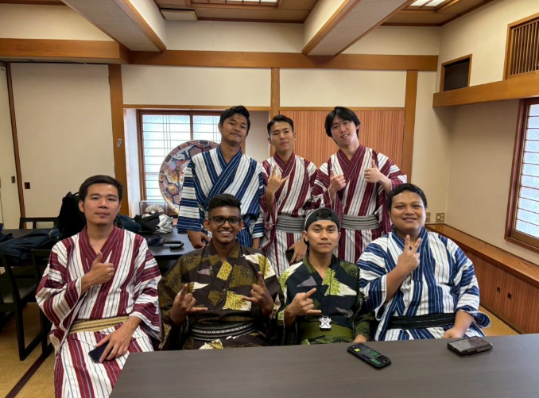
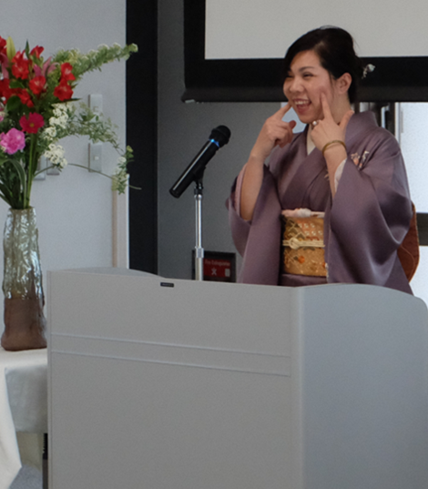
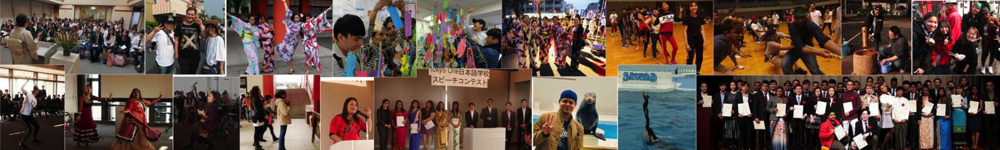
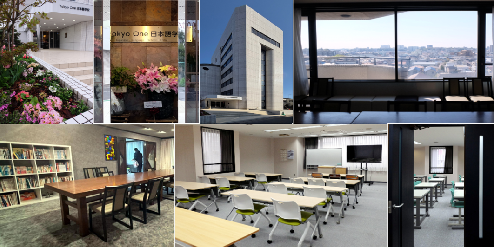

間違えた日本語の一言一言が、あなたの成長の証です。千葉の心地よい潮風の下、焦らず一歩ずつ新しいキャリアを広げていきましょう。
錯誤的每一句日語，都是您成長的印記。在千葉舒適的海風與寬廣的天空下，放慢腳步，與我們一起穩健踏實地拓展全新的職涯世界。
错误的每一句日语，都是您成长的印记。在千葉舒適的海风与寬广的天空下，放慢腳步，与我们一起穩健踏实地拓展全新的职涯世界。
Every mistake in Japanese is a mark of your growth. Under the comfortable sea breeze and wide sky of Chiba, let's take our time and steadily expand into a brand-new career world together.
जापानी भाषा में हर गलती आपकी वृद्धि का प्रमाण है। चिबा की सुखद समुद्री हवा और विस्तृत आकाश के नीचे, आइए बिना जल्दबाजी के, एक-एक कदम करके एक बिल्कुल नई करियर दुनिया को साथ मिलकर विस्तार दें।
जापानी भाषामा भएको हरेक गल्ती तपाईंको वृद्धिको प्रमाण हो। चिबाको सुखद समुद्री हावा र फराकिलो आकाश मुनि, हतार नगरी, एक-एक कदम गर्दै, नयाँ करियर संसार सँगै विस्तार गरौं।
ජපන් භාෂාවේ සෑම වැරැද්දක්ම ඔබේ වර්ධනයේ සලකුණකි. චිබාහි සුවපහසු මුහුදු සුළඟ සහ විශාල අහස යටතේ, ඉක්මන් නොවී, පියවරෙන් පියවර, අලුත් වෘත්තීය ලෝකයක් එකට පුළුල් කරමු.
Mỗi lỗi sai trong tiếng Nhật đều là dấu ấn của sự trưởng thành. Dưới làn gió biển dễ chịu và bầu trời rộng lớn của Chiba, hãy cùng chúng tôi từng bước vững chắc mở rộng thế giới sự nghiệp hoàn toàn mới.
Кожна помилка в японській мові — це знак вашого зростання. Під приємним морським бризом і широким небом Чіби, крок за кроком розширюймо разом ваш новий кар'єрний світ.
Setiap kesalahan dalam bahasa Jepang adalah tanda pertumbuhan Anda. Di bawah angin laut yang nyaman dan langit luas Chiba, mari kita perlahan-lahan memperluas dunia karier baru bersama-sama.
Каждая ошибка в японском языке — это знак вашего роста. Под приятным морским бризом и широким небом Чибы, шаг за шагом расширяйте вместе с нами свой новый карьерный мир.
ဂျပန်စာလွဲမှားသမျှသည် သင့်တိုးတက်မှု၏ သက်သေပင်ဖြစ်သည်။ချစ်ဘား၏ သာယာသော ပင်လယ်လေနှင့် ကျယ်ပြန့်သော ကောင်းကင်အောက်တွင် တစ်ဆင့်ချင်း စိတ်ရှည်စွာ ကျွန်ုပ်တို့နှင့်အတူ အသစ်သော အသက်မွေးဝမ်းကျောင်းလောကကို ချဲ့ထွင်ကြပါစို့။
該当するニュースがありません目前沒有符合的新聞目前没有符合的新闻No news in this category yet
2016年設立。千葉大学をはじめ多くの大学・専門学校が近隣にあり、JLPT N5〜N1まで全レベルのクラスを開講。
2016年設立。國立千葉大學等多所大學與專門學校臨近，開設 JLPT N5～N1 全級別對應精緻課程。
2016年设立。国立千葉大学等多所大学与專門学校临近，开设 JLPT N5～N1 全级別对应精致课程。
Founded in 2016. Located near Chiba University and many other universities and vocational schools, offering classes for every JLPT level from N5 to N1.
2016 में स्थापित। चिबा विश्वविद्यालय सहित कई अन्य विश्वविद्यालयों और व्यावसायिक विद्यालयों के निकट स्थित, N5 से N1 तक हर JLPT स्तर की कक्षाएँ प्रदान करता है।
सन् २०१६ मा स्थापना भएको। चिबा विश्वविद्यालयलगायत धेरै विश्वविद्यालय र व्यावसायिक विद्यालयहरूको नजिक अवस्थित, N5 देखि N1 सम्मका सबै JLPT स्तरका कक्षाहरू प्रदान गर्दछ।
2016 දී ආරම්භ කරන ලදී. චිබා විශ්ව විද්යාලය ඇතුළු තවත් බොහෝ විශ්ව විද්යාල හා වෘත්තීය පාසල් අසල පිහිටා ඇති අතර, N5 සිට N1 දක්වා සෑම JLPT මට්ටමකටම පන්ති පිරිනමයි.
Thành lập năm 2016. Nằm gần Đại học Chiba và nhiều trường đại học, trường nghề khác, mở lớp cho mọi trình độ JLPT từ N5 đến N1.
Засновано у 2016 році. Розташована поруч з Університетом Чіба та багатьма іншими університетами й професійними школами, пропонує класи для всіх рівнів JLPT від N5 до N1.
Didirikan tahun 2016. Berlokasi dekat Universitas Chiba dan banyak universitas serta sekolah kejuruan lainnya, menawarkan kelas untuk semua tingkat JLPT dari N5 hingga N1.
Основана в 2016 году. Расположена рядом с Университетом Чиба и многими другими университетами и профессиональными школами, предлагает классы для всех уровней JLPT от N5 до N1.
၂၀၁၆ ခုနှစ်တွင် တည်ထောင်ခဲ့သည်။ ချစ်ဘားတက္ကသိုလ်နှင့် အခြားတက္ကသိုလ်၊ အသက်မွေးဝမ်းကျောင်းကျောင်းများစွာနှင့် အနီးတွင် တည်ရှိပြီး JLPT N5 မှ N1 အထိ အဆင့်အားလုံးအတွက် သင်တန်းများ ပေးအပ်သည်။
少人数制授業による丁寧な指導、多国籍な文化交流キャンパス、特約寮での生活サポート。
小班制教學精緻指導，多國籍多元文化共融校園，特約宿舍生活全方位支援。
小班制教学精致指导，多国籍多元文化共融校园，特约宿舍生活全方位支援。
Attentive small-class teaching, a multicultural campus, and full living support through our affiliated dormitories.
छोटी कक्षाओं में ध्यानपूर्वक शिक्षण, बहु-सांस्कृतिक कैंपस, तथा संबद्ध छात्रावासों के माध्यम से पूर्ण जीवन सहायता।
साना कक्षाहरूमा ध्यानपूर्ण शिक्षण, बहु-सांस्कृतिक क्याम्पस, र सम्बद्ध छात्रावासहरू मार्फत पूर्ण जीवन सहयोग।
කුඩා පන්තිවල අවධානයෙන් යුත් ඉගැන්වීම, බහු සංස්කෘතික මණ්ඩපයක් සහ අනුබද්ධ නේවාසිකාගාර හරහා පූර්ණ ජීවන සහාය.
Giảng dạy tận tình theo lớp nhỏ, môi trường học đường đa văn hóa, và hỗ trợ sinh hoạt toàn diện qua ký túc xá liên kết.
Уважне навчання в малих групах, багатонаціональний кампус і повна підтримка проживання через партнерські гуртожитки.
Pengajaran kelas kecil yang penuh perhatian, kampus multikultural, dan dukungan tempat tinggal penuh melalui asrama mitra kami.
Внимательное обучение в малых группах, многонациональный кампус и полная поддержка проживания через партнёрские общежития.
သေချာစွာ ဂရုစိုက်သော လူနည်းစုသင်တန်း၊ နိုင်ငံစုံပါဝင်သော ကျောင်းဝန်းကျင်နှင့် မိတ်ဖက်ကျောင်းအိပ်ဆောင်များမှတဆင့် ပြည့်စုံသော နေထိုင်မှုအထောက်အပံ့။
4つの修業年限と実際の学費をご案内。長期進学コースから短期速成コースまで選択可能。
詳細公開4種修業年限與真實透明學費。提供長期進學學程與短期速成課程可供選擇。
详细公开4种修业年限与真实透明学费。提供长期进学学程与短期速成课程可供选擇。
Four study-length options with transparent, real tuition figures — from long-term academic tracks to short intensive courses.
पारदर्शी, वास्तविक शुल्क आँकड़ों के साथ अध्ययन-अवधि के चार विकल्प — दीर्घकालिक शैक्षणिक मार्गों से लेकर लघु गहन पाठ्यक्रमों तक।
पारदर्शी, वास्तविक शुल्क विवरणसहित अध्ययन-अवधिका चार विकल्पहरू — दीर्घकालीन शैक्षिक बाटोदेखि छोटो गहन पाठ्यक्रमसम्म।
විනිවිද පෙනෙන, සැබෑ ගාස්තු සංඛ්යා සහිත අධ්යයන-කාල විකල්ප හතරක් — දිගුකාලීන අධ්යයන මාර්ග සිට කෙටි දැඩි පාඨමාලා දක්වා.
4 lựa chọn thời gian học với học phí minh bạch, thực tế — từ khóa học dài hạn đến khóa học ngắn hạn cấp tốc.
4 варіанти тривалості навчання з прозорою, реальною вартістю — від довгострокових академічних програм до коротких інтенсивних курсів.
4 pilihan lama studi dengan biaya kuliah yang transparan dan nyata — dari program akademik jangka panjang hingga kursus intensif singkat.
4 варианта продолжительности обучения с прозрачной, реальной стоимостью — от долгосрочных академических программ до коротких интенсивных курсов.
ပွင့်လင်းမြင်သာသော အမှန်တကယ်ကျသင့်ငွေဖြင့် သင်တန်းကာလ ၄ မျိုးရွေးချယ်နိုင်သည် — ရေရှည်ပညာရေးအစီအစဉ်များမှ ရေတိုအရှိန်မြှင့်သင်တန်းများအထိ။
実際の4ステップ出願プロセス。多言語窓口が海外からの出願とビザ手続きをサポートします。
引導真實合規的4步驟出願手續。多語言窗口全程協助跨海申請與留學簽證辦理。
引导真实合规的4步骤出愿手续。多语言窗口全程协助跨海申请与留学签证办理。
A real 4-step application process, with multilingual support for overseas applications and visa procedures.
वास्तविक 4-चरणीय आवेदन प्रक्रिया, विदेशी आवेदनों और वीज़ा प्रक्रियाओं के लिए बहुभाषी सहायता के साथ।
वास्तविक ४-चरणको आवेदन प्रक्रिया, विदेशी आवेदन र भिसा प्रक्रियाहरूका लागि बहुभाषिक सहयोगसहित।
විදේශ අයදුම්පත් සහ වීසා ක්රියාවලි සඳහා බහුභාෂා සහාය සමඟ, සැබෑ පියවර 4කින් යුත් අයදුම් ක්රියාවලියක්.
Quy trình nộp hồ sơ thực tế gồm 4 bước, có hỗ trợ đa ngôn ngữ cho hồ sơ từ nước ngoài và thủ tục visa.
Реальний процес подання заявки з 4 кроків, з багатомовною підтримкою для заявок з-за кордону та візових процедур.
Proses pendaftaran nyata dalam 4 langkah, dengan dukungan multibahasa untuk pendaftaran dari luar negeri dan prosedur visa.
Реальный процесс подачи заявки из 4 шагов с многоязычной поддержкой для заявок из-за рубежа и визовых процедур.
၄ ဆင့်ပါဝင်သော လျှောက်ထားမှုလုပ်ငန်းစဉ်အစစ်၊ နိုင်ငံခြားမှ လျှောက်ထားမှုနှင့် ဗီဇာလုပ်ငန်းစဉ်များအတွက် ဘာသာစကားမျိုးစုံ အထောက်အပံ့ပါဝင်သည်။
週の合法アルバイト上限は最大28時間（長期休暇中は40時間まで延長可能）。学校がアルバイト探しを全力でサポートします。
每週合法兼職上限至多28小時（長假可延長至40小時）。校方全力支持打工媒合。
每週合法兼职上限至多28小时（长假可延长至40小时）。校方全力支持打工媒合。
Legally up to 28 hours a week (extendable to 40 during long breaks). The school fully supports job matching.
कानूनी रूप से सप्ताह में 28 घंटे तक (लंबी छुट्टियों में 40 घंटे तक बढ़ाया जा सकता है)। स्कूल नौकरी दिलाने में पूरी सहायता करता है।
कानुनी रूपमा हप्तामा २८ घण्टासम्म (लामो बिदामा ४० घण्टासम्म बढाउन सकिने)। विद्यालयले काम मिलाउनमा पूर्ण सहयोग गर्छ।
නීත්යානුකූලව සතියකට පැය 28ක් දක්වා (දිගු නිවාඩුවලදී පැය 40ක් දක්වා දිගු කළ හැක). පාසල රැකියා ගැලපීම සඳහා පූර්ණ සහාය දෙයි.
Tối đa 28 giờ/tuần theo pháp luật (có thể lên đến 40 giờ trong kỳ nghỉ dài). Trường hỗ trợ toàn diện việc kết nối việc làm.
Легально до 28 годин на тиждень (до 40 годин під час довгих канікул). Школа повністю підтримує пошук роботи.
Legal hingga 28 jam per minggu (dapat diperpanjang hingga 40 jam selama liburan panjang). Sekolah sepenuhnya mendukung pencarian kerja.
Легально до 28 часов в неделю (можно продлить до 40 часов во время длинных каникул). Школа полностью поддерживает поиск работы.
တစ်ပတ်လျှင် တရားဝင် ၂၈ နာရီအထိ (ရက်ရှည်ခွင့်များအတွင်း ၄၀ နာရီအထိ တိုးမြှင့်နိုင်သည်)။ ကျောင်းက အလုပ်ရှာဖွေမှုကို အပြည့်အဝ ထောက်ပံ့ပေးသည်။
從零基礎完全初級至高階上級級別，皆配備專業教材與清晰分階段學習目標。
从零基礎完全初级至高階上级级別，皆配备專业教材与清晰分階段学習目标。
From complete beginner to advanced, with dedicated materials and clear stage-by-stage learning goals.
पूर्ण शुरुआती से उन्नत स्तर तक, समर्पित सामग्री और स्पष्ट चरणबद्ध अधिगम लक्ष्यों के साथ।
पूर्ण सुरुवाती देखि उन्नत तहसम्म, समर्पित सामग्री र स्पष्ट चरणबद्ध सिकाइ लक्ष्यहरूसहित।
සම්පූර්ණ ආරම්භකයෙකුගේ සිට උසස් මට්ටම දක්වා, කැපවූ ද්රව්ය සහ පැහැදිලි අදියරානුකූල ඉගෙනුම් ඉලක්ක සමඟ.
Từ trình độ mới bắt đầu đến nâng cao, với giáo trình chuyên biệt và mục tiêu học tập rõ ràng theo từng giai đoạn.
Від повного початківця до просунутого рівня, зі спеціальними матеріалами та чіткими цілями навчання на кожному етапі.
Dari pemula total hingga tingkat lanjut, dengan materi khusus dan tujuan pembelajaran yang jelas tahap demi tahap.
От полного новичка до продвинутого уровня, со специальными материалами и чёткими целями обучения на каждом этапе.
လုံးဝအစပြုသူမှ အဆင့်မြင့်အထိ၊ အဆင့်တိုင်းအတွက် အထူးသင်ရိုးများနှင့် ရှင်းလင်းသော သင်ယူမှုပန်းတိုင်များနှင့်တကွ။
3月中旬〜4月上旬3月中旬〜4月初3月中旬〜4月初Mid-March to early Aprilमध्य मार्च से प्रारंभिक अप्रैलमार्च मध्यदेखि अप्रिल सुरुसम्मමාර්තු මැද සිට අප්රේල් මුල දක්වාGiữa tháng 3 đến đầu tháng 4Середина березня – початок квітняPertengahan Maret hingga awal AprilСередина марта – начало апреляမတ်လ အလယ်ပိုင်းမှ ဧပြီလ အစောပိုင်း
8月上旬〜8月中旬8月初〜8月中8月初〜8月中Early August to mid-Augustप्रारंभिक अगस्त से मध्य अगस्तअगस्त सुरुदेखि अगस्त मध्यसम्मඅගෝස්තු මුල සිට අගෝස්තු මැද දක්වාĐầu tháng 8 đến giữa tháng 8Початок серпня – середина серпняAwal Agustus hingga pertengahan AgustusНачало августа – середина августаသြဂုတ်လ အစောပိုင်းမှ လယ်ပိုင်း
12月下旬〜1月上旬12月下旬〜1月初12月下旬〜1月初Late December to early Januaryदिसंबर के अंत से जनवरी की शुरुआतडिसेम्बर अन्त्यदेखि जनवरी सुरुसम्मදෙසැම්බර් අග සිට ජනවාරි මුල දක්වාCuối tháng 12 đến đầu tháng 1Кінець грудня – початок січняAkhir Desember hingga awal JanuariКонец декабря – начало январяဒီဇင်ဘာလ အကုန်ပိုင်းမှ ဇန်နဝါရီလ အစောပိုင်း
※年間スケジュールを基準とします※以年度行事曆為準※以年度行事历为准*Subject to the official annual academic calendar*आधिकारिक वार्षिक शैक्षणिक कैलेंडर के अधीन*आधिकारिक वार्षिक शैक्षिक पात्रोको अधीनमा*නිල වාර්ෂික අධ්යාපන දින දර්ශනයට යටත් වේ*Theo lịch năm học chính thức*Відповідно до річного навчального календаря*Sesuai kalender akademik tahunan resmi*Согласно официальному годовому учебному календарю*နှစ်ချုပ်ပြက္ခဒိန်အတိုင်း သတ်မှတ်သည်
開校以来、私たちは学生の日本語習得を支援するだけでなく、日本の文化や社会習慣への理解を深めることにも力を注いできました。私たちの教育理念の根底にあるのは、日本の学校教育の根本目標である「生きる力」です。日本語教育を通じて、学生が自ら考え、正しく判断し、自分を効果的に表現し、社会と意味のあるつながりを築く力を育み、充実した人生を歩めるよう支援します。 自建校以來，我們不僅致力於協助學生掌握日語，更致力於加深他們對日本文化與社會習俗的理解。我們教育理念的核心，是日本學校教育的根本目標——「熱愛生活」。透過日語教育，我們培養學生獨立思考、做出正確判斷、有效表達自我，並與社會建立有意義的連結，讓每一位學生都能擁有充實的人生。 自建校以来，我们不仅致力于协助学生掌握日语，更致力于加深他们对日本文化与社会习俗的理解。我们教育理念的核心，是日本学校教育的根本目标——「热爱生活」。透过日语教育，我们培养学生独立思考、做出正确判断、有效表达自我，并与社会建立有意义的连结，让每一位学生都能拥有充实的人生。 Since our founding, we have been committed not only to helping students master Japanese but also to deepening their understanding of Japanese culture and social customs. At the heart of our philosophy is "Zest for Living" — the fundamental goal of Japanese school education. Through Japanese language education, we nurture students' ability to think independently, make sound judgments, express themselves effectively, and build meaningful connections with society, so they can lead fulfilling lives. स्थापना के बाद से, हमने न केवल छात्रों को जापानी भाषा में महारत हासिल करने में मदद की है, बल्कि जापानी संस्कृति और सामाजिक रीति-रिवाजों की उनकी समझ को भी गहरा किया है। हमारे दर्शन के केंद्र में है "जीवन के प्रति उत्साह" — जापानी स्कूली शिक्षा का मूलभूत लक्ष्य। जापानी भाषा शिक्षा के माध्यम से, हम छात्रों में स्वतंत्र रूप से सोचने, सही निर्णय लेने, प्रभावी ढंग से खुद को व्यक्त करने और समाज के साथ सार्थक संबंध बनाने की क्षमता विकसित करते हैं, ताकि वे संतोषजनक जीवन जी सकें। स्थापनादेखि नै, हामीले विद्यार्थीहरूलाई जापानी भाषामा दक्ष बनाउन मात्र होइन, जापानी संस्कृति र सामाजिक रीतिरिवाजको बारेमा उनीहरूको बुझाइलाई पनि गहिरो बनाउन प्रतिबद्ध छौं। हाम्रो दर्शनको केन्द्रमा छ "जीवनप्रतिको जोश" — जापानी विद्यालय शिक्षाको आधारभूत लक्ष्य। जापानी भाषा शिक्षामार्फत, हामी विद्यार्थीहरूमा स्वतन्त्र रूपमा सोच्ने, सही निर्णय गर्ने, प्रभावकारी रूपमा आफूलाई व्यक्त गर्ने र समाजसँग अर्थपूर्ण सम्बन्ध निर्माण गर्ने क्षमता विकास गर्छौं। අපගේ ආරම්භයේ සිටම, ශිෂ්යයන්ට ජපන් භාෂාව ප්රගුණ කිරීමට උපකාර කිරීම පමණක් නොව, ජපන් සංස්කෘතිය හා සමාජ චාරිත්ර පිළිබඳ ඔවුන්ගේ අවබෝධය ගැඹුරු කිරීමටද අප කැපවී සිටිමු. අපගේ දර්ශනයේ හදවතේ ඇත්තේ "ජීවත් වීමට ඇති උද්යෝගය" — ජපන් පාසල් අධ්යාපනයේ මූලික ඉලක්කයයි. ජපන් භාෂා අධ්යාපනය හරහා, ශිෂ්යයන්ට ස්වාධීනව සිතීමට, නිවැරදි තීන්දු ගැනීමට, ඵලදායීව තමන් ප්රකාශ කිරීමට සහ සමාජය සමඟ අර්ථවත් සම්බන්ධතා ගොඩනැගීමට හැකියාව වර්ධනය කරමු. Kể từ khi thành lập, chúng tôi không chỉ tận tâm giúp học viên thành thạo tiếng Nhật mà còn nỗ lực làm sâu sắc thêm sự hiểu biết của họ về văn hóa và phong tục xã hội Nhật Bản. Trọng tâm trong triết lý của chúng tôi là "yêu thích cuộc sống" — mục tiêu căn bản của giáo dục trường học Nhật Bản. Thông qua giáo dục tiếng Nhật, chúng tôi nuôi dưỡng khả năng tư duy độc lập, đưa ra phán đoán đúng đắn, thể hiện bản thân hiệu quả và xây dựng những kết nối ý nghĩa với xã hội của học viên, để họ có thể sống một cuộc đời trọn vẹn. Від заснування ми прагнули не лише допомогти студентам опанувати японську мову, а й поглибити їхнє розуміння японської культури та соціальних звичаїв. В основі нашої філософії лежить «любов до життя» — фундаментальна мета японської шкільної освіти. Через навчання японської мови ми розвиваємо в студентів здатність мислити самостійно, приймати правильні рішення, ефективно виражати себе та будувати значущі зв'язки із суспільством, щоб вони могли прожити повноцінне життя. Sejak didirikan, kami berkomitmen tidak hanya membantu siswa menguasai bahasa Jepang, tetapi juga memperdalam pemahaman mereka tentang budaya dan adat istiadat sosial Jepang. Inti filosofi kami adalah "semangat hidup" — tujuan mendasar pendidikan sekolah Jepang. Melalui pendidikan bahasa Jepang, kami menumbuhkan kemampuan siswa untuk berpikir mandiri, membuat penilaian yang tepat, mengekspresikan diri secara efektif, dan membangun hubungan bermakna dengan masyarakat, agar mereka dapat menjalani kehidupan yang memuaskan. С момента основания мы стремились не только помочь студентам овладеть японским языком, но и углубить их понимание японской культуры и социальных обычаев. В основе нашей философии лежит «жажда жизни» — фундаментальная цель японского школьного образования. Через обучение японскому языку мы развиваем у студентов способность мыслить самостоятельно, принимать взвешенные решения, эффективно выражать себя и строить значимые связи с обществом, чтобы они могли прожить полноценную жизнь. တည်ထောင်ချိန်မှစ၍ ကျွန်ုပ်တို့သည် ကျောင်းသားများအား ဂျပန်ဘာသာစကား ကျွမ်းကျင်စေရန်သာမက ဂျပန်ယဉ်ကျေးမှုနှင့် လူမှုထုံးတမ်းများအား ပိုမိုနားလည်စေရန်လည်း ကြိုးပမ်းခဲ့ပါသည်။ ကျွန်ုပ်တို့၏ ရည်ရွယ်ချက်၏ အခြေခံမှာ ဂျပန်ကျောင်းပညာရေး၏ အခြေခံရည်မှန်းချက်ဖြစ်သော "ဘဝကို နှစ်သက်မြတ်နိုးမှု" ဖြစ်ပါသည်။ ဂျပန်ဘာသာပညာရေးမှတစ်ဆင့် ကျောင်းသားများအား လွတ်လပ်စွာ တွေးခေါ်၊ မှန်ကန်စွာ ဆုံးဖြတ်၊ ထိရောက်စွာ ကိုယ်ကိုယ်တိုင်ဖော်ပြနိုင်ပြီး လူ့အဖွဲ့အစည်းနှင့် အဓိပ္ပာယ်ရှိသော ဆက်ဆံရေးတည်ဆောက်နိုင်စွမ်းကို ပျိုးထောင်ပေးပါသည်။
この目標を達成するため、私たちは語学習得にとどまらない教育を提供しています。学習者一人ひとりの日常生活、将来のキャリア、社会参加、そして文化理解を全面的にサポート。実践的な日本語力を身につけながら、自ら学び、自信を持って生きていく力を育み、進学や就職をはじめとする様々な未来への可能性を広げています。私たちの学校は単に日本語を学ぶ場ではなく、将来のキャリア、社会統合、異文化理解の基盤を築きながら、自分の未来を切り拓く自信と力を育む場所です。 為了達成這個目標，我們提供的教育超越單純的語言學習——為每位學習者的日常生活、未來職涯、社會參與與文化理解，提供全方位的支持。學生不僅能習得實用的日語能力，也能培養獨立學習與自信生活的能力，為升學、就業等未來各種可能性拓展更寬廣的道路。我們的學校不只是學習日語的地方，更是學生建立未來職涯基礎、融入社會、理解跨文化差異的場所，同時培養開創自己未來的信心與能力。 为了达成这个目标，我们提供的教育超越单纯的语言学习——为每位学习者的日常生活、未来职涯、社会参与与文化理解，提供全方位的支持。学生不僅能習得實用的日語能力，也能培養獨立學習與自信生活的能力，為升學、就業等未來各種可能性拓展更寬廣的道路。我们的学校不只是学习日语的地方，更是学生建立未来职涯基础、融入社会、理解跨文化差异的场所，同时培养开创自己未来的信心与能力。 To achieve this, we provide education that goes beyond language acquisition — offering comprehensive support for each learner's daily life, future career, social participation, and cultural understanding. Learners gain not only practical Japanese skills but also the confidence to learn independently and thrive in society, opening up wider opportunities for further study, employment, and beyond. Our school is not simply a place to learn Japanese; it is where students build the foundation for their future careers and intercultural understanding while developing the confidence to shape their own future. इस लक्ष्य को प्राप्त करने के लिए, हम भाषा अधिग्रहण से परे शिक्षा प्रदान करते हैं — प्रत्येक शिक्षार्थी के दैनिक जीवन, भविष्य के करियर, सामाजिक भागीदारी और सांस्कृतिक समझ के लिए व्यापक सहायता प्रदान करते हुए। शिक्षार्थी न केवल व्यावहारिक जापानी कौशल प्राप्त करते हैं, बल्कि स्वतंत्र रूप से सीखने और समाज में आगे बढ़ने का आत्मविश्वास भी विकसित करते हैं। हमारा विद्यालय केवल जापानी सीखने की जगह नहीं है; यह वह स्थान है जहाँ छात्र अपने भविष्य के करियर की नींव रखते हैं। यो लक्ष्य हासिल गर्न, हामी भाषा सिकाइभन्दा बाहिरको शिक्षा प्रदान गर्छौं — हरेक सिकारुको दैनिक जीवन, भविष्यको करियर, सामाजिक सहभागिता र सांस्कृतिक बुझाइका लागि व्यापक सहयोग प्रदान गर्दै। सिकारुहरूले व्यावहारिक जापानी सीप मात्र होइन, स्वतन्त्र रूपमा सिक्ने र समाजमा फस्टाउने आत्मविश्वास पनि प्राप्त गर्छन्। हाम्रो विद्यालय केवल जापानी सिक्ने ठाउँ मात्र होइन; यो विद्यार्थीहरूले आफ्नो भविष्यको करियरको जग निर्माण गर्ने ठाउँ हो। මෙම ඉලක්කය සාක්ෂාත් කර ගැනීම සඳහා, අපි භාෂා ප්රගුණයෙන් ඔබ්බට යන අධ්යාපනයක් සපයමු — සෑම ඉගෙන ගන්නෙකුගේම දෛනික ජීවිතය, අනාගත වෘත්තිය, සමාජ සහභාගීත්වය සහ සංස්කෘතික අවබෝධය සඳහා පුළුල් සහයෝගයක් ලබා දෙමින්. ඉගෙන ගන්නන්ට ප්රායෝගික ජපන් කුසලතා පමණක් නොව ස්වාධීනව ඉගෙනීමට හා සමාජයේ දියුණු වීමට ආත්ම විශ්වාසයද ලැබේ. අපගේ පාසල හුදෙක් ජපන් ඉගෙන ගන්නා ස්ථානයක් නොව, ශිෂ්යයන් තම අනාගත වෘත්තියේ පදනම ගොඩනගන ස්ථානයකි. Để đạt được mục tiêu này, chúng tôi cung cấp nền giáo dục vượt xa việc học ngôn ngữ — hỗ trợ toàn diện cho cuộc sống hàng ngày, sự nghiệp tương lai, tham gia xã hội và hiểu biết văn hóa của mỗi học viên. Học viên không chỉ đạt được kỹ năng tiếng Nhật thực tiễn mà còn xây dựng sự tự tin để học tập độc lập và phát triển trong xã hội. Trường của chúng tôi không đơn thuần là nơi học tiếng Nhật; đó là nơi học viên xây dựng nền tảng cho sự nghiệp tương lai của mình. Щоб досягти цієї мети, ми надаємо освіту, яка виходить за межі вивчення мови — пропонуючи всебічну підтримку повсякденного життя, майбутньої кар'єри, соціальної участі та культурного розуміння кожного студента. Студенти отримують не лише практичні навички японської мови, а й впевненість вчитися самостійно та процвітати в суспільстві. Наша школа — це не просто місце для вивчення японської мови; це місце, де студенти закладають основу своєї майбутньої кар'єри. Untuk mencapai tujuan ini, kami memberikan pendidikan yang melampaui pembelajaran bahasa — menawarkan dukungan komprehensif untuk kehidupan sehari-hari, karier masa depan, partisipasi sosial, dan pemahaman budaya setiap pembelajar. Pembelajar tidak hanya memperoleh keterampilan bahasa Jepang praktis tetapi juga kepercayaan diri untuk belajar mandiri dan berkembang dalam masyarakat. Sekolah kami bukan sekadar tempat belajar bahasa Jepang; ini adalah tempat siswa membangun fondasi karier masa depan mereka. Чтобы достичь этой цели, мы предлагаем образование, выходящее за рамки изучения языка — обеспечивая всестороннюю поддержку повседневной жизни, будущей карьеры, социального участия и культурного понимания каждого учащегося. Учащиеся получают не только практические навыки японского языка, но и уверенность учиться самостоятельно и процветать в обществе. Наша школа — это не просто место для изучения японского языка; это место, где студенты закладывают основу своей будущей карьеры. ဤရည်မှန်းချက်ကို အောင်မြင်ရန်အတွက် ကျွန်ုပ်တို့သည် ဘာသာစကားသင်ယူမှုထက် ကျော်လွန်သော ပညာရေးကို ပေးအပ်ပါသည် — သင်ယူသူတိုင်း၏ နေ့စဉ်ဘဝ၊ အနာဂတ်အသက်မွေးဝမ်းကျောင်း၊ လူမှုပါဝင်မှုနှင့် ယဉ်ကျေးမှုနားလည်မှုအတွက် ပြည့်စုံသောပံ့ပိုးမှုကို ပေးလျက်။ သင်ယူသူများသည် လက်တွေ့ကျင့်သုံးနိုင်သော ဂျပန်စွမ်းရည်များသာမက လွတ်လပ်စွာ သင်ယူနိုင်ပြီး လူ့အဖွဲ့အစည်းတွင် တိုးတက်ဖွံ့ဖြိုးနိုင်သော ယုံကြည်မှုကိုပါ ရရှိကြသည်။

日本で成功する生活に必要なスキルを育むため、私たちのカリキュラムは3つの教育の柱の上に築かれています。まず「日本語力」では、聴く・読む・話す（やり取り・発表）・書くの言語活動を通じて、語彙・文法・談話構成といった基礎力から、進学や就職に必要な実践的コミュニケーション力まで、実生活で活かせる日本語を体系的に身につけます。次に「日本社会への適応力」では、日常生活・学業・職場など様々な場面で、他者と協力しながら自ら課題を解決し、主体的に行動する力を育みます。 為了培養在日本成功生活所需的技能，我們的課程建立在三大教育支柱之上。首先是「日語能力」——透過聽、讀、說（互動與發表）、寫五大語言活動，從詞彙、文法、篇章結構等基礎能力，到升學與就業所需的實用溝通技巧，系統性地培養能在真實生活中靈活運用的日語能力。其次是「適應日本社會」——在日常生活、學業與職場等各種情境中，培養學生與他人合作、獨立解決問題並主動行動的能力。 为了培养在日本成功生活所需的技能，我们的课程建立在三大教育支柱之上。首先是「日语能力」——透过听、读、说（互动与发表）、写五大语言活动，从词汇、文法、篇章结构等基础能力，到升学与就业所需的实用沟通技巧，系统性地培养能在真实生活中灵活运用的日语能力。其次是「适应日本社会」——在日常生活、学业与职场等各种情境中，培养学生与他人合作、独立解决问题并主动行动的能力。 To cultivate the skills necessary for living successfully in Japan, our curriculum is built on three educational pillars. First, Japanese Language Proficiency — students systematically develop their Japanese through five language activities: listening, reading, speaking (interaction and presentation), and writing. From fundamentals like vocabulary, grammar, and discourse organization to the practical communication skills needed for further study and employment, learners acquire Japanese they can use effectively in real life. Second, Adaptation to Japanese Society — we foster learners' ability to solve problems independently and act proactively while cooperating with others across daily life, academic study, and the workplace. जापान में सफल जीवन जीने के लिए आवश्यक कौशल विकसित करने हेतु, हमारा पाठ्यक्रम तीन शैक्षणिक स्तंभों पर बना है। पहला, जापानी भाषा दक्षता — सुनना, पढ़ना, बोलना (बातचीत और प्रस्तुति) और लिखना, इन पाँच भाषा गतिविधियों के माध्यम से, शब्दावली और व्याकरण जैसी बुनियादी क्षमताओं से लेकर उच्च शिक्षा और रोजगार के लिए आवश्यक व्यावहारिक संचार कौशल तक। दूसरा, जापानी समाज में अनुकूलन — दैनिक जीवन, अध्ययन और कार्यस्थल में दूसरों के साथ सहयोग करते हुए स्वतंत्र रूप से समस्याओं को हल करने और सक्रिय रूप से कार्य करने की क्षमता विकसित करना। जापानमा सफलतापूर्वक बाँच्न आवश्यक सीप विकास गर्न, हाम्रो पाठ्यक्रम तीन शैक्षिक स्तम्भमा निर्मित छ। पहिलो, जापानी भाषा दक्षता — सुन्ने, पढ्ने, बोल्ने (अन्तरक्रिया र प्रस्तुति) र लेख्ने, यी पाँच भाषा गतिविधिमार्फत, शब्दावली र व्याकरण जस्ता आधारभूत क्षमताबाट उच्च शिक्षा र रोजगारका लागि आवश्यक व्यावहारिक सञ्चार सीपसम्म। दोस्रो, जापानी समाजमा अनुकूलन — दैनिक जीवन, अध्ययन र कार्यस्थलमा अरूसँग सहकार्य गर्दै स्वतन्त्र रूपमा समस्या समाधान गर्ने र सक्रिय रूपमा कार्य गर्ने क्षमता विकास गर्ने। ජපානයේ සාර්ථක ජීවිතයක් සඳහා අවශ්ය කුසලතා වර්ධනය කිරීම සඳහා, අපගේ විෂය මාලාව අධ්යාපනික ස්තම්භ තුනක් මත ගොඩනගා ඇත. පළමුව, ජපන් භාෂා ප්රවීණත්වය — සවන්දීම, කියවීම, කථා කිරීම (අන්තර්ක්රියා සහ ඉදිරිපත් කිරීම) සහ ලිවීම යන භාෂා ක්රියාකාරකම් පහ හරහා, වචන මාලාව හා ව්යාකරණ වැනි මූලික හැකියාවලින් ඇරඹී වැඩිදුර අධ්යාපනයට හා රැකියාවලට අවශ්ය ප්රායෝගික සන්නිවේදන කුසලතා දක්වා. දෙවනුව, ජපන් සමාජයට අනුගත වීම — දෛනික ජීවිතය, අධ්යයනය සහ රැකියා ස්ථානයේදී අන් අය සමඟ සහයෝගයෙන් ගැටලු ස්වාධීනව විසඳීමට හා ක්රියාශීලීව ක්රියා කිරීමට හැකියාව වර්ධනය කිරීම. Để bồi dưỡng những kỹ năng cần thiết cho một cuộc sống thành công tại Nhật Bản, chương trình học của chúng tôi được xây dựng trên ba trụ cột giáo dục. Thứ nhất, Năng lực tiếng Nhật — học viên phát triển tiếng Nhật một cách có hệ thống thông qua năm hoạt động ngôn ngữ: nghe, đọc, nói (tương tác và thuyết trình) và viết, từ các năng lực nền tảng như từ vựng, ngữ pháp đến kỹ năng giao tiếp thực tiễn cần thiết cho việc học tiếp và làm việc. Thứ hai, Thích nghi với xã hội Nhật Bản — chúng tôi bồi dưỡng khả năng giải quyết vấn đề độc lập và hành động chủ động trong khi hợp tác với người khác ở nhiều bối cảnh khác nhau. Щоб розвинути навички, необхідні для успішного життя в Японії, наша навчальна програма побудована на трьох освітніх стовпах. По-перше, володіння японською мовою — студенти систематично розвивають японську мову через п'ять видів мовної діяльності: аудіювання, читання, говоріння (взаємодія та презентація) і письмо, від базових навичок, таких як лексика та граматика, до практичних комунікативних навичок, необхідних для подальшого навчання та працевлаштування. По-друге, адаптація до японського суспільства — ми розвиваємо здатність студентів самостійно вирішувати проблеми та діяти проактивно, співпрацюючи з іншими. Untuk membina keterampilan yang diperlukan bagi kehidupan sukses di Jepang, kurikulum kami dibangun di atas tiga pilar pendidikan. Pertama, Kemahiran Bahasa Jepang — siswa mengembangkan bahasa Jepang secara sistematis melalui lima aktivitas bahasa: mendengarkan, membaca, berbicara (interaksi dan presentasi), dan menulis, dari kemampuan dasar seperti kosakata dan tata bahasa hingga keterampilan komunikasi praktis yang diperlukan untuk studi lanjut dan pekerjaan. Kedua, Adaptasi terhadap Masyarakat Jepang — kami membina kemampuan siswa untuk memecahkan masalah secara mandiri dan bertindak proaktif sambil bekerja sama dengan orang lain. Чтобы развить навыки, необходимые для успешной жизни в Японии, наша учебная программа построена на трёх образовательных столпах. Во-первых, владение японским языком — студенты систематически развивают японский через пять видов языковой деятельности: аудирование, чтение, говорение (взаимодействие и презентация) и письмо, от базовых навыков, таких как лексика и грамматика, до практических коммуникативных навыков, необходимых для дальнейшей учёбы и трудоустройства. Во-вторых, адаптация к японскому обществу — мы развиваем способность студентов самостоятельно решать проблемы и действовать проактивно, сотрудничая с другими. ဂျပန်တွင် အောင်မြင်သောဘဝတစ်ခု ရရှိစေရန် လိုအပ်သော ကျွမ်းကျင်မှုများကို မွေးထုတ်ရန် ကျွန်ုပ်တို့၏ သင်ရိုးညွှန်းတမ်းကို ပညာရေးတိုင် ၃ ခုအပေါ် တည်ဆောက်ထားပါသည်။ ပထမတိုင်မှာ ဂျပန်ဘာသာစွမ်းရည်ဖြစ်ပြီး၊ နားထောင်ခြင်း၊ ဖတ်ခြင်း၊ ပြောဆိုခြင်း (အပြန်အလှန်ဆက်သွယ်ခြင်းနှင့် တင်ပြခြင်း) နှင့် ရေးသားခြင်းဟူသော ဘာသာစကားလှုပ်ရှားမှု ၅ ခုမှတစ်ဆင့် ဝေါဟာရနှင့် သဒ္ဒါကဲ့သို့သော အခြေခံစွမ်းရည်များမှသည် ပညာသင်ဆက်ခြင်းနှင့် အလုပ်အကိုင်အတွက် လိုအပ်သော လက်တွေ့ဆက်သွယ်ရေးစွမ်းရည်များအထိ စနစ်တကျ တည်ဆောက်ပါသည်။ ဒုတိယတိုင်မှာ ဂျပန်လူ့အဖွဲ့အစည်းသို့ လိုက်လျောညီထွေဖြစ်မှုဖြစ်ပြီး၊ နေ့စဉ်ဘဝ၊ ပညာရေးနှင့် အလုပ်ခွင်တွင် အခြားသူများနှင့် ပူးပေါင်းလျက် ပြဿနာများကို လွတ်လပ်စွာ ဖြေရှင်းနိုင်ပြီး တက်ကြွစွာ လုပ်ဆောင်နိုင်သော စွမ်းရည်ကို မွေးထုတ်ပါသည်။
そして「日本文化の理解」では、授業の中に日本の文化的背景や価値観、社会習慣を取り入れ、学生が日本文化と自分自身の文化的背景の両方を理解し、尊重し合う力を育みます。これら3つの柱を支える基盤として、私たちは学習者の自律学習力の育成を重視しています。学生自身が学習目標を設定し、計画を立てて実行し、進捗を振り返りながら、学びの過程全体を通じて自分の学習方法を継続的に改善していくことを奨励しています。 最後是「理解日本文化」——我們將日本的文化背景、價值觀與社會習俗融入課堂教學，培養學生理解並尊重日本文化與自身文化背景的能力，促進相互的跨文化理解。作為支撐這三大支柱的基礎，我們特別重視培養學生的自主學習能力，鼓勵學生在整個學習過程中，自行設定學習目標、擬定並執行學習計畫、反思學習進度，並持續改善自己的學習方法。 最后是「理解日本文化」——我们将日本的文化背景、价值观与社会习俗融入课堂教学，培养学生理解并尊重日本文化与自身文化背景的能力，促进相互的跨文化理解。作为支撑这三大支柱的基础，我们特别重视培养学生的自主学习能力，鼓励学生在整个学习过程中，自行设定学习目标、拟定并执行学习计划、反思学习进度，并持续改善自己的学习方法。 Third, Understanding Japanese Culture — our Japanese language education incorporates cultural backgrounds, values, and social customs into classroom learning, helping students understand and respect both Japanese culture and their own. As the foundation supporting all three pillars, we place strong emphasis on learner autonomy: students are encouraged to set their own learning goals, make plans, put them into practice, reflect on their progress, and continuously improve their learning strategies throughout their studies. तीसरा, जापानी संस्कृति की समझ — हमारी जापानी भाषा शिक्षा कक्षा की पढ़ाई में सांस्कृतिक पृष्ठभूमि, मूल्यों और सामाजिक रीति-रिवाजों को शामिल करती है, जिससे छात्रों को जापानी संस्कृति और अपनी स्वयं की सांस्कृतिक पृष्ठभूमि दोनों को समझने और सम्मान करने में मदद मिलती है। इन तीनों स्तंभों के आधार के रूप में, हम शिक्षार्थी की स्वायत्तता पर विशेष जोर देते हैं: छात्रों को अपने सीखने के लक्ष्य निर्धारित करने, योजनाएँ बनाने, उन्हें क्रियान्वित करने और अपनी प्रगति पर विचार करने के लिए प्रोत्साहित किया जाता है। तेस्रो, जापानी संस्कृतिको बुझाइ — हाम्रो जापानी भाषा शिक्षाले कक्षाकोठाको पढाइमा सांस्कृतिक पृष्ठभूमि, मूल्यहरू र सामाजिक रीतिरिवाजहरू समावेश गर्छ, जसले विद्यार्थीहरूलाई जापानी संस्कृति र आफ्नै सांस्कृतिक पृष्ठभूमि दुवैलाई बुझ्न र सम्मान गर्न मद्दत गर्छ। यी तीनवटा स्तम्भको आधारको रूपमा, हामी सिकारुको स्वायत्ततामा विशेष जोड दिन्छौं: विद्यार्थीहरूलाई आफ्नै सिकाइ लक्ष्य तय गर्न, योजना बनाउन, कार्यान्वयन गर्न र आफ्नो प्रगतिमा प्रतिबिम्बित हुन प्रोत्साहित गरिन्छ। තෙවනුව, ජපන් සංස්කෘතිය අවබෝධ කර ගැනීම — අපගේ ජපන් භාෂා අධ්යාපනය පන්ති කාමර ඉගෙනීමට සංස්කෘතික පසුබිම්, වටිනාකම් සහ සමාජ චාරිත්ර ඇතුළත් කරයි, එමගින් ශිෂ්යයන්ට ජපන් සංස්කෘතිය සහ ඔවුන්ගේම සංස්කෘතික පසුබිම යන දෙකම තේරුම් ගැනීමට හා ගරු කිරීමට උපකාර වේ. මෙම ස්තම්භ තුනටම පදනම ලෙස, අපි ඉගෙන ගන්නාගේ ස්වාධීනත්වයට විශේෂ අවධානයක් යොමු කරමු: ශිෂ්යයන් තමන්ගේම ඉගෙනුම් ඉලක්ක සැකසීමට, සැලසුම් සකස් කිරීමට, ක්රියාත්මක කිරීමට සහ ප්රගතිය පිළිබිඹු කිරීමට දිරිමත් කරනු ලැබේ. Thứ ba, Hiểu biết văn hóa Nhật Bản — nền giáo dục tiếng Nhật của chúng tôi lồng ghép bối cảnh văn hóa, giá trị và phong tục xã hội vào việc học trên lớp, giúp học viên hiểu và tôn trọng cả văn hóa Nhật Bản lẫn nền văn hóa của chính mình. Là nền tảng hỗ trợ cả ba trụ cột, chúng tôi đặc biệt chú trọng đến tính tự chủ của học viên: học viên được khuyến khích tự đặt mục tiêu học tập, lập kế hoạch, thực hiện và suy ngẫm về tiến độ của mình. По-третє, розуміння японської культури — наша освіта з японської мови включає культурне тло, цінності та соціальні звичаї в навчання в класі, допомагаючи студентам розуміти та поважати як японську культуру, так і власну. Як основу, що підтримує всі три стовпи, ми надаємо особливого значення автономності студента: студентів заохочують самостійно встановлювати навчальні цілі, складати плани, втілювати їх та обмірковувати свій прогрес. Ketiga, Pemahaman Budaya Jepang — pendidikan bahasa Jepang kami memasukkan latar belakang budaya, nilai, dan adat istiadat sosial ke dalam pembelajaran di kelas, membantu siswa memahami dan menghormati baik budaya Jepang maupun budaya mereka sendiri. Sebagai fondasi yang mendukung ketiga pilar, kami sangat menekankan kemandirian pembelajar: siswa didorong untuk menetapkan tujuan belajar mereka sendiri, membuat rencana, melaksanakannya, dan merefleksikan kemajuan mereka. В-третьих, понимание японской культуры — наше обучение японскому языку включает культурный контекст, ценности и социальные обычаи в занятия, помогая студентам понимать и уважать как японскую культуру, так и свою собственную. В качестве основы, поддерживающей все три столпа, мы уделяем особое внимание самостоятельности учащегося: студентов поощряют самостоятельно ставить учебные цели, составлять планы, воплощать их и осмыслять свой прогресс. တတိယတိုင်မှာ ဂျပန်ယဉ်ကျေးမှု နားလည်မှုဖြစ်ပြီး၊ ကျွန်ုပ်တို့၏ ဂျပန်ဘာသာပညာရေးသည် ယဉ်ကျေးမှုနောက်ခံ၊ တန်ဖိုးများနှင့် လူမှုထုံးတမ်းများကို စာသင်ခန်းသင်ကြားမှုတွင် ထည့်သွင်းထားပြီး ကျောင်းသားများအား ဂျပန်ယဉ်ကျေးမှုနှင့် ၎င်းတို့၏ကိုယ်ပိုင် ယဉ်ကျေးမှုနောက်ခံ နှစ်မျိုးလုံးကို နားလည်ရှုမြင်ပြီး လေးစားနိုင်ရန် ကူညီပေးပါသည်။ ဤတိုင် ၃ ခုလုံးကို ထောက်ပံ့သော အခြေခံအဖြစ် ကျွန်ုပ်တို့သည် သင်ယူသူ၏ မိမိကိုယ်ပိုင်စီမံနိုင်မှုကို အထူးအလေးထားပါသည် — ကျောင်းသားများအား မိမိကိုယ်ပိုင် သင်ယူမှုပန်းတိုင်များ သတ်မှတ်ရန်၊ အစီအစဉ်များ ရေးဆွဲရန်၊ အကောင်အထည်ဖော်ရန်နှင့် ၎င်းတို့၏ တိုးတက်မှုကို ပြန်လည်သုံးသပ်ရန် အားပေးထားပါသည်။
〒260-0007 千葉県千葉市中央区祐光 4-1-18〒260-0007 千葉縣千葉市中央區祐光 4-1-18〒260-0007 千葉县千葉市中央區祐光 4-1-184-1-18 Yuko, Chuo-ku, Chiba City, Chiba 260-00074-1-18 युको, चूओ-कू, चिबा शहर, चिबा 260-00074-1-18 युको, चुओ-कु, चिबा सहर, चिबा 260-00074-1-18 යූකෝ, චූඕ-කු, චිබා නගරය, චිබා 260-00074-1-18 Yuko, Chuo-ku, Thành phố Chiba, Chiba 260-00074-1-18 Юко, Чуо-ку, м. Чіба, Чіба 260-00074-1-18 Yuko, Chuo-ku, Kota Chiba, Chiba 260-00074-1-18 Юко, Тюо-ку, г. Тиба, Тиба 260-00074-1-18 Yuko, Chuo-ku, Chiba မြို့, Chiba 260-0007
学校を中心とした徒歩圏の生活機能マップです。実在する周辺施設に加え、JR東千葉駅からの徒歩ルート（赤）と、千葉駅方面からのバスルート（青）も示しています。以學校為中心、步行範圍內的生活機能示意圖。除了周邊真實店家外，也標示了從 JR 東千葉站步行過來的路線（紅色）與從千葉站方向搭公車的路線（藍色）。以学校为中心、步行范围內的生活机能示意图。除了周邊真实店家外，也标示了从 JR 東千葉站步行过来的路线（紅色）与从千葉站方向搭公车的路线（藍色）。A walking-distance amenities map centred on the school. Alongside real nearby shops, it shows the walking route from JR Higashi-Chiba Station (red) and the bus route from the Chiba Station direction (blue).ကျောင်းကို ဗဟိုပြုသော လမ်းလျှောက်အကွာအဝေး အဆင်ပြေမှုမြေပုံ။ အနီးအနားရှိ တကယ့်ဆိုင်များအပြင် JR Higashi-Chiba ဘူတာမှ လမ်းလျှောက်လမ်းကြောင်း (အနီ) နှင့် Chiba ဘူတာဘက်မှ ဘတ်စ်ကားလမ်းကြောင်း (အပြာ) ကိုပါ ပြထားသည်။Bản đồ tiện ích trong tầm đi bộ quanh trường. Bên cạnh các cửa hàng thực tế gần đó, bản đồ còn hiển thị lộ trình đi bộ từ ga JR Higashi-Chiba (đỏ) và tuyến xe buýt từ hướng ga Chiba (xanh).Карта зручностей у пішій доступності від школи. Окрім реальних закладів поблизу, показано пішохідний маршрут від станції JR Хіґасі-Чіба (червоний) та автобусний маршрут з боку станції Чіба (синій).Peta fasilitas dalam jarak jalan kaki dari sekolah. Selain toko nyata di sekitar, peta ini menunjukkan rute jalan kaki dari Stasiun JR Higashi-Chiba (merah) dan rute bus dari arah Stasiun Chiba (biru).Карта удобств в пешей доступности от школы. Помимо реальных заведений рядом, показан пешеходный маршрут от станции JR Хигаси-Тиба (красный) и автобусный маршрут со стороны станции Тиба (синий).ကျောင်းကို ဗဟိုပြုသော လမ်းလျှောက်အကွာအဝေး အဆင်ပြေမှုမြေပုံ။ အနီးအနားရှိ တကယ့်ဆိုင်များအပြင် JR Higashi-Chiba ဘူတာမှ လမ်းလျှောက်လမ်းကြောင်း (အနီ) နှင့် Chiba ဘူတာဘက်မှ ဘတ်စ်ကားလမ်းကြောင်း (အပြာ) ကိုပါ ပြထားသည်။स्कूल के केंद्र में पैदल दूरी की सुविधाओं का मानचित्र। वास्तविक आसपास की दुकानों के साथ-साथ, यह JR हिगाशी-चिबा स्टेशन से पैदल मार्ग (लाल) और चिबा स्टेशन की दिशा से बस मार्ग (नीला) दिखाता है।विद्यालयलाई केन्द्रमा राखेर पैदल दूरीका सुविधाहरूको नक्सा। वास्तविक नजिकका पसलहरूसँगै, यसले JR हिगाशी-चिबा स्टेशनबाट पैदल मार्ग (रातो) र चिबा स्टेशनतर्फको बस मार्ग (निलो) देखाउँछ।පාසල කේන්ද්ර කරගත් ඇවිදින දුරින් ඇති පහසුකම් සිතියමකි. සැබෑ අවට සාප්පු සමඟම, එය JR හිගාෂි-චිබා දුම්රිය ස්ථානයේ සිට ඇවිදින මාර්ගය (රතු) සහ චිබා දුම්රිය ස්ථානය දෙසින් බස් මාර්ගය (නිල්) පෙන්වයි.Bản đồ tiện ích trong tầm đi bộ quanh trường. Ngoài các cửa hàng thực tế gần đó, bản đồ còn hiển thị lộ trình đi bộ từ ga JR Higashi-Chiba (đỏ) và tuyến xe buýt từ hướng ga Chiba (xanh).Карта зручностей у пішій доступності від школи. Окрім реальних закладів поблизу, показано пішохідний маршрут від станції JR Хіґасі-Чіба (червоний) та автобусний маршрут з боку станції Чіба (синій).Peta fasilitas dalam jarak jalan kaki dari sekolah. Selain toko nyata di sekitar, ditampilkan juga rute jalan kaki dari Stasiun JR Higashi-Chiba (merah) dan rute bus dari arah Stasiun Chiba (biru).Карта удобств в пешей доступности от школы. Помимо реальных заведений рядом, показан пешеходный маршрут от станции JR Хигаси-Тиба (красный) и автобусный маршрут со стороны станции Тиба (синий).ကျောင်းကို ဗဟိုပြုသော လမ်းလျှောက်အကွာအဝေး အဆင်ပြေမှုမြေပုံ။ အနီးအနားရှိ တကယ့်ဆိုင်များအပြင် JR Higashi-Chiba ဘူတာမှ လမ်းလျှောက်လမ်းကြောင်း (အနီ) နှင့် Chiba ဘူတာဘက်မှ ဘတ်စ်ကားလမ်းကြောင်း (အပြာ) ကိုပါ ပြထားသည်။
図中のアイコンをタップ／ホバーすると、お店の名前・距離・営業時間が表示されます。より詳しい道順は、上の Google マップもあわせてご確認ください。點擊／滑過圖示可以看到店名、距離與營業時間。更詳細的路線請一併參考上方的 Google 地圖。点击／滑过图示可以看到店名、距离与营业时间。更详细的路线请一併参考上方的 Google 地图。Tap or hover an icon to see the shop's name, distance and hours. For turn-by-turn directions, please also check the Google Map above.आइकन पर टैप या होवर करने पर दुकान का नाम, दूरी और समय दिखाई देगा। विस्तृत रास्ते के लिए ऊपर दिए गए Google मानचित्र को भी देखें।आइकनमा ट्याप वा होभर गर्दा पसलको नाम, दूरी र समय देखिन्छ। विस्तृत बाटोको लागि माथिको Google नक्सा पनि हेर्नुहोस्।අයිකනය මත ස්පර්ශ කිරීමෙන් හෝ රැඳවීමෙන් සාප්පුවේ නම, දුර සහ වේලාව පෙන්වයි. විස්තරාත්මක මාර්ග සඳහා ඉහත Google සිතියම ද බලන්න.Chạm hoặc di chuột vào biểu tượng để xem tên cửa hàng, khoảng cách và giờ mở cửa. Để biết đường đi chi tiết, vui lòng xem thêm Google Map ở trên.Торкніться або наведіть курсор на значок, щоб побачити назву закладу, відстань і години роботи. Детальний маршрут дивіться на карті Google вище.Ketuk atau arahkan kursor ke ikon untuk melihat nama toko, jarak, dan jam buka. Untuk rute lebih detail, silakan lihat juga Google Map di atas.Нажмите или наведите курсор на значок, чтобы увидеть название, расстояние и часы работы. Подробный маршрут смотрите на карте Google выше.အိုင်ကွန်ကို တို့ထိ သို့မဟုတ် ကာဆာထားခြင်းဖြင့် ဆိုင်အမည်၊ အကွာအဝေးနှင့် ဖွင့်ချိန်ကို ကြည့်ရှုနိုင်သည်။ အသေးစိတ် လမ်းကြောင်းအတွက် အထက်ပါ Google မြေပုံကိုလည်း ကြည့်ပါ။
※ 位置・所要時間は概略の目安です。店舗名・情報・ダイヤは変更される場合があります。※ 位置與所需時間為概略示意，店家名稱、資訊與班次可能會有變動。※ 位置与所需时間为概略示意，店家名称、资訊与班次可能会有变动。※ Positions and times are approximate. Shop names, details and schedules may change.※ स्थान और समय अनुमानित हैं। दुकानों के नाम, विवरण और समय-सारणी बदल सकती है।※ स्थान र समय अनुमानित हुन्। पसलका नाम, विवरण र समय तालिका परिवर्तन हुन सक्छन्।※ ස්ථාන සහ වේලාවන් ආසන්න වේ. සාප්පු නම්, විස්තර සහ කාලසටහන් වෙනස් විය හැක.※ Vị trí và thời gian chỉ mang tính tương đối. Tên cửa hàng, thông tin và lịch trình có thể thay đổi.※ Розташування і час приблизні. Назви, деталі та розклад можуть змінюватися.※ Posisi dan waktu bersifat perkiraan. Nama toko, detail, dan jadwal dapat berubah.※ Расположение и время приблизительные. Названия, детали и расписание могут меняться.※ တည်နေရာနှင့် အချိန်များသည် ခန့်မှန်းခြေဖြစ်သည်။ ဆိုင်အမည်၊ အချက်အလက်နှင့် အချိန်ဇယား ပြောင်းလဲနိုင်သည်။
依日語能力適性分班，確保每位學生都能獲得老師最即時、精確的個別指導與發言機會。
依日语能力適性分班，确保每位学生都能获得老师最即时、精确的个別指导与发言机会。
Classes are grouped by Japanese level, ensuring every student gets timely, precise guidance and plenty of chances to speak.
कक्षाओं को जापानी स्तर के अनुसार समूहित किया गया है, जिससे हर छात्र को समय पर, सटीक मार्गदर्शन और बोलने के भरपूर अवसर मिलें।
कक्षाहरू जापानी तहअनुसार समूहबद्ध गरिएको छ, जसले हरेक विद्यार्थीले समयमै, सटीक मार्गदर्शन र बोल्ने प्रशस्त अवसर पाउने सुनिश्चित गर्छ।
සෑම ශිෂ්යයෙකුටම කාලානුරූප, නිවැරදි මගපෙන්වීමක් සහ කථා කිරීමට ප්රමාණවත් අවස්ථා ලැබෙන බව සහතික කරමින්, පන්ති ජපන් මට්ටම අනුව කාණ්ඩගත කර ඇත.
Lớp học được phân theo trình độ tiếng Nhật, đảm bảo mỗi học viên được hướng dẫn kịp thời, chính xác và có nhiều cơ hội phát biểu.
Класи формуються за рівнем японської мови, що гарантує кожному студенту своєчасне, точне керівництво та багато можливостей говорити.
Kelas dikelompokkan berdasarkan level bahasa Jepang, memastikan setiap siswa mendapat bimbingan yang tepat waktu dan akurat serta banyak kesempatan berbicara.
Классы формируются по уровню японского языка, что гарантирует каждому студенту своевременное, точное руководство и много возможностей для разговора.
ဂျပန်ဘာသာအဆင့်အလိုက် အတန်းများ ပိုင်းခြားထားပြီး ကျောင်းသားတိုင်း အချိန်နှင့်တစ်ပြေးညီ တိကျသော လမ်းညွှန်မှုနှင့် စကားပြောနိုင်သည့် အခွင့်အလမ်းများစွာကို ရရှိစေသည်။
提供詳盡的升學資訊與面試、論文指導。亦為希望就業的學生提供專任窗口企業媒合。
提供详尽的升学资訊与面试、论文指导。亦为希望就业的学生提供專任窗口企业媒合。
Detailed guidance on further education, interviews, and essays, plus dedicated job-matching support for students seeking work.
उच्च शिक्षा, साक्षात्कार और निबंधों पर विस्तृत मार्गदर्शन, साथ ही नौकरी चाहने वाले छात्रों के लिए समर्पित जॉब-मैचिंग सहायता।
थप अध्ययन, अन्तर्वार्ता र निबन्धमा विस्तृत मार्गदर्शन, साथै काम खोज्ने विद्यार्थीहरूका लागि समर्पित जागिर-मिलान सहयोग।
වැඩිදුර අධ්යාපනය, සම්මුඛ පරීක්ෂණ සහ රචනා පිළිබඳ විස්තරාත්මක මගපෙන්වීම, තවද රැකියා සොයන ශිෂ්යයන් සඳහා කැපවූ රැකියා ගැලපුම් සහාය.
Hướng dẫn chi tiết về học tiếp, phỏng vấn và luận văn, cùng hỗ trợ giới thiệu việc làm cho học viên muốn đi làm.
Детальні поради щодо подальшої освіти, співбесід та есе, а також спеціальна підтримка працевлаштування для студентів, які шукають роботу.
Panduan rinci tentang pendidikan lanjutan, wawancara, dan esai, ditambah dukungan pencarian kerja khusus bagi siswa yang mencari pekerjaan.
Подробные советы по дальнейшему образованию, собеседованиям и эссе, а также специальная поддержка трудоустройства для студентов, ищущих работу.
အဆင့်မြင့်ပညာရေး၊ အင်တာဗျူးနှင့် စာစီစာကုံးများအတွက် အသေးစိတ်လမ်းညွှန်မှုနှင့် အလုပ်ရှာနေသော ကျောင်းသားများအတွက် အထူးအလုပ်ရှာဖွေရေးအထောက်အပံ့။
協助安排學校附近、設備完整的公寓。任何有意願的留學生皆可申請入住，安心度過留學生活。
协助安排学校附近、设备完整的公寓。任何有意愿的留学生皆可申请入住，安心度过留学生活。
We help arrange fully-equipped apartments near the school. Any student who wants one may apply for a comfortable study-abroad life.
हम स्कूल के पास पूरी तरह सुसज्जित अपार्टमेंट की व्यवस्था करने में मदद करते हैं। कोई भी इच्छुक छात्र आरामदायक विदेश-अध्ययन जीवन के लिए आवेदन कर सकता है।
हामी विद्यालयनजिक पूर्ण सुसज्जित अपार्टमेन्ट मिलाउन मद्दत गर्छौं। इच्छुक कुनै पनि विद्यार्थीले आरामदायी विदेश-अध्ययन जीवनका लागि आवेदन दिन सक्छन्।
අපි පාසල අසල සම්පූර්ණයෙන් සවි කළ මහල් නිවාස සකස් කිරීමට උදව් කරමු. එය අවශ්ය ඕනෑම ශිෂ්යයෙකුට සුවපහසු විදේශ අධ්යයන ජීවිතයක් සඳහා අයදුම් කළ හැක.
Chúng tôi hỗ trợ sắp xếp căn hộ đầy đủ tiện nghi gần trường. Bất kỳ học viên nào có nhu cầu đều có thể đăng ký để có cuộc sống du học thoải mái.
Ми допомагаємо організувати повністю обладнані квартири поруч зі школою. Будь-який студент може подати заявку для комфортного студентського життя.
Kami membantu mengatur apartemen yang sepenuhnya dilengkapi dekat sekolah. Siswa mana pun yang menginginkannya dapat mendaftar untuk kehidupan studi yang nyaman.
Мы помогаем организовать полностью оборудованные квартиры рядом со школой. Любой студент может подать заявку для комфортной студенческой жизни.
ကျောင်းအနီးရှိ ပစ္စည်းအပြည့်အစုံပါ တိုက်ခန်းများကို စီစဉ်ပေးပါသည်။ အဆင်ပြေသော ကျောင်းသားဘဝအတွက် ကျောင်းသားမည်သူမဆို လျှောက်ထားနိုင်သည်။
學生來自全球各個國家。透過課堂協作與節慶活動，在學習日語的同時培養宏大的國際視野。
学生来自全球各个国家。透过课堂协作与节慶活动，在学習日语的同时培养宏大的国际视野。
Students come from countries all over the world. Classroom collaboration and seasonal events build a global outlook alongside your Japanese.
छात्र दुनिया भर के देशों से आते हैं। कक्षा सहयोग और मौसमी कार्यक्रम आपकी जापानी भाषा के साथ-साथ वैश्विक दृष्टिकोण भी बनाते हैं।
विद्यार्थीहरू संसारभरका देशहरूबाट आउँछन्। कक्षाकोठा सहकार्य र मौसमी कार्यक्रमहरूले तपाईंको जापानीसँगै विश्वव्यापी दृष्टिकोण निर्माण गर्छन्।
ශිෂ්යයන් ලොව පුරා රටවලින් පැමිණේ. පන්ති කාමර සහයෝගීතාව සහ සෘතුමය සිදුවීම් ඔබේ ජපන් භාෂාව සමඟම ගෝලීය දෘෂ්ටියක් ගොඩනඟයි.
Học viên đến từ khắp nơi trên thế giới. Hợp tác trong lớp học và các hoạt động theo mùa giúp xây dựng tầm nhìn quốc tế song song với tiếng Nhật của bạn.
Студенти приїжджають з усього світу. Співпраця в класі та сезонні заходи розвивають глобальний світогляд поряд з вашою японською мовою.
Siswa datang dari seluruh dunia. Kolaborasi di kelas dan acara musiman membangun wawasan global seiring dengan kemampuan bahasa Jepang Anda.
Студенты приезжают со всего мира. Сотрудничество в классе и сезонные мероприятия развивают глобальный кругозор наряду с вашим японским языком.
ကျောင်းသားများသည် ကမ္ဘာတစ်ဝှမ်းမှ ရောက်ရှိလာကြသည်။ အတန်းတွင်း ပူးပေါင်းဆောင်ရွက်မှုနှင့် ရာသီအလိုက်ပွဲများက သင့်ဂျပန်ဘာသာစွမ်းရည်နှင့်အတူ ကမ္ဘာ့အမြင်ကို တည်ဆောက်ပေးသည်။
從初期的文件審查、在留資格申請至簽證辦理，教職員皆將一步步陪伴，並提供付費接機與生活手續指導。
从初期的文件審查、在留资格申请至签证办理，教职員皆将一步步陪伴，並提供付费接机与生活手续指导。
From document review and residency status applications to visas, staff guide you step by step, plus optional airport pickup and life-admin support.
दस्तावेज़ समीक्षा और निवास स्थिति आवेदन से लेकर वीज़ा तक, स्टाफ आपको चरण-दर-चरण मार्गदर्शन देता है, साथ ही वैकल्पिक हवाई अड्डा पिकअप और जीवन-प्रशासन सहायता भी।
कागजात समीक्षा र बसोबास स्थिति आवेदनदेखि भिसासम्म, कर्मचारीले तपाईंलाई चरणबद्ध मार्गदर्शन दिन्छन्, साथै वैकल्पिक विमानस्थल पिकअप र जीवन-प्रशासन सहयोग पनि।
ලේඛන සමාලෝචනයේ සිට පදිංචි තත්ත්ව අයදුම්පත් සහ වීසා දක්වා, කාර්ය මණ්ඩලය ඔබට පියවරෙන් පියවර මග පෙන්වයි, තවද විකල්ප ගුවන් තොටුපළ රැගෙන යාම සහ ජීවන-පරිපාලන සහාය ද ලබා දේ.
Từ việc rà soát hồ sơ, xin tư cách lưu trú đến visa, nhân viên sẽ hướng dẫn từng bước, cùng dịch vụ đón sân bay và hỗ trợ thủ tục sinh hoạt (tùy chọn).
Від перевірки документів і заявки на статус резидента до візи — персонал проведе вас крок за кроком, плюс необов'язкова зустріч в аеропорту та підтримка побутових питань.
Dari pemeriksaan dokumen dan pengajuan status tinggal hingga visa — staf akan membimbing Anda langkah demi langkah, ditambah layanan penjemputan bandara opsional dan dukungan urusan kehidupan.
От проверки документов и заявки на статус резидента до визы — персонал проведёт вас шаг за шагом, плюс необязательная встреча в аэропорту и поддержка бытовых вопросов.
စာရွက်စာတမ်းစစ်ဆေးမှုနှင့် နေထိုင်ခွင့်အဆင့်အတန်းလျှောက်ထားမှုမှ ဗီဇာအထိ — ဝန်ထမ်းများက တစ်ဆင့်ချင်း လမ်းညွှန်ပေးမည်ဖြစ်ပြီး ရွေးချယ်နိုင်သော လေဆိပ်ကြိုဆိုမှုနှင့် နေထိုင်မှုဆိုင်ရာအထောက်အပံ့လည်း ပါဝင်သည်။
您可以直接點擊進入我們的 Facebook 官方社群頁面，查閱歷屆學生的精彩留學生活紀實與反饋。
您可以直接点擊进入我们的 Facebook 官方社群页面，查閱历届学生的精彩留学生活纪实与反饋。
Visit our official Facebook page directly to see real posts and feedback from past and current students' study-abroad life.
पूर्व और वर्तमान छात्रों के विदेश-अध्ययन जीवन की वास्तविक पोस्ट और प्रतिक्रिया देखने के लिए सीधे हमारे आधिकारिक Facebook पेज पर जाएँ।
पूर्व र हालका विद्यार्थीहरूको विदेश-अध्ययन जीवनका वास्तविक पोस्ट र प्रतिक्रिया हेर्न सिधै हाम्रो आधिकारिक Facebook पृष्ठमा जानुहोस्।
හිටපු සහ වර්තමාන ශිෂ්යයන්ගේ විදේශ අධ්යයන ජීවිතයේ සැබෑ පළ කිරීම් සහ ප්රතිචාර බැලීමට කෙලින්ම අපගේ නිල Facebook පිටුවට පිවිසෙන්න.
Hãy truy cập trang Facebook chính thức của chúng tôi để xem các bài đăng và phản hồi thực tế từ học viên cũ và hiện tại.
Відвідайте нашу офіційну сторінку Facebook, щоб побачити реальні дописи та відгуки колишніх і нинішніх студентів.
Kunjungi halaman Facebook resmi kami untuk melihat postingan dan tanggapan nyata dari siswa masa lalu dan sekarang.
Посетите нашу официальную страницу в Facebook, чтобы увидеть настоящие посты и отзывы бывших и нынешних студентов.
ယခင်နှင့် လက်ရှိကျောင်းသားများ၏ အမှန်တကယ်ပို့စ်များနှင့် တုံ့ပြန်ချက်များကို ကြည့်ရှုရန် ကျွန်ုပ်တို့၏ တရားဝင် Facebook စာမျက်နှာသို့ လာရောက်ကြည့်ရှုပါ။
Facebookページへ※上記は学校の実際の特色に基づく内容です。個人の発言を装った引用は掲載しておりません。
*The above reflects the school's actual features. We do not post quotes made to look like individual testimonials.
*အထက်ပါအချက်များသည် ကျောင်း၏ အမှန်တကယ် အင်္ဂါရပ်များကို ထင်ဟပ်ပါသည်။ ကျွန်ုပ်တို့သည် ပုဂ္ဂိုလ်ရေးသက်သေခံချက်များကဲ့သို့ ထင်ရအောင် ပြုလုပ်ထားသော ကိုးကားချက်များကို မတင်ပါ။
*Nội dung trên phản ánh đặc điểm thực tế của trường. Chúng tôi không đăng các trích dẫn được tạo ra để trông giống như lời chứng thực cá nhân.
*Наведене вище відображає реальні особливості школи. Ми не публікуємо цитати, створені так, щоб виглядати як особисті відгуки.
*Hal di atas mencerminkan fitur sekolah yang sebenarnya. Kami tidak memposting kutipan yang dibuat agar terlihat seperti testimoni pribadi.
*Вышеизложенное отражает реальные особенности школы. Мы не публикуем цитаты, оформленные так, чтобы выглядеть как личные отзывы.
*အထက်ပါအချက်များသည် ကျောင်း၏ အမှန်တကယ် အင်္ဂါရပ်များကို ထင်ဟပ်ပါသည်။ ကျွန်ုပ်တို့သည် ပုဂ္ဂိုလ်ရေးသက်သေခံချက်များကဲ့သို့ ထင်ရအောင် ပြုလုပ်ထားသော ကိုးကားချက်များကို မတင်ပါ။
*उपरोक्त स्कूल की वास्तविक विशेषताओं को दर्शाता है। हम व्यक्तिगत प्रशंसापत्र जैसे दिखने वाले उद्धरण पोस्ट नहीं करते।
*माथिको कुराले विद्यालयको वास्तविक विशेषता झल्काउँछ। हामी व्यक्तिगत प्रशंसापत्र जस्तो देखिने उद्धरणहरू पोस्ट गर्दैनौं।
*ඉහත සඳහන් වන්නේ පාසලේ සැබෑ ලක්ෂණයි. පුද්ගලික සාක්ෂි ලෙස පෙනෙන උද්ධෘත අප පළ නොකරමු.
*Nội dung trên phản ánh đặc điểm thực tế của trường. Chúng tôi không đăng các trích dẫn giả làm lời chứng thực cá nhân.
*Наведене вище відображає реальні особливості школи. Ми не публікуємо цитати, видані за особисті відгуки.
*Konten di atas mencerminkan fitur nyata sekolah. Kami tidak memposting kutipan yang dibuat seolah-olah testimoni pribadi.
*Вышеуказанное отражает реальные особенности школы. Мы не публикуем цитаты, выданные за личные отзывы.
※အထက်ပါအချက်အလက်များသည် ကျောင်း၏ အမှန်တကယ်ထူးခြားချက်များအပေါ် အခြေခံသည်။ ကိုယ်ရေးကိုယ်တာအသိအမှတ်ပြုချက်များအဖြစ် ဟန်ဆောင်ထားသော ကိုးကားချက်များကို မထုတ်ပြန်ပါ။
※以上內容皆基於學校真實特色，並未刊登任何冒充個人發言的引用文字。
※以上內容皆基於学校真实特色，並未刊登任何冒充个人发言的引用文字。

「私はここ20年来、千葉市において様々な国際交流や地域の活動に参加してまいりました。こうした縁があり、私が愛して止まない千葉市に『Tokyo One日本語学校』を設立しました。本校には、日本語の習得のみならず日本の"おもてなし"や"文化"を肌で体験させ、実践力のある人材に育てるための十分なスタッフや設備などが整っています。世界各国の若者が本校に集い、交流することにより、真のグローバルな人材に育つよう精一杯努めてまいります。スタッフ一同、全力でサポート致します。私も複数の言語を習得したことにより、随分と人生が豊かになりました。皆さまも大きな希望と夢をもって日本にいらしてください。」
「本人這20年來，在千葉市參與了各式各樣的國際交流與地方活動。正因這份情緣，我在深愛的千葉市創立了『Tokyo One日本語學校』。本校不僅提供日語學習，更配備充足的師資與設施，讓學生親身體驗日本的「款待之心」與「文化」，培養具備實踐能力的人才。願世界各地的青年在此相聚交流，一同成長為真正的全球化人才，我們全體教職員將全力以赴支持每一位學生。我自身也因為習得多國語言，讓人生變得更加豐富。也希望各位懷抱著遠大的希望與夢想，來到日本。」
「本人这20年来，在千叶市参与了各式各样的国际交流与地方活动。正因这份情缘，我在深爱的千叶市创立了『Tokyo One日本语学校』。本校不仅提供日语学习，更配备充足的师资与设施，让学生亲身体验日本的「款待之心」与「文化」，培养具备实践能力的人才。愿世界各地的青年在此相聚交流，一同成长为真正的全球化人才，我们全体教职员将全力以赴支持每一位学生。我自身也因为习得多国语言，让人生变得更加丰富。也希望各位怀抱着远大的希望与梦想，来到日本。」
"For the past 20 years, I have taken part in a wide range of international exchanges and local community activities in Chiba City. Thanks to these connections, I founded 'Tokyo One Japanese Language School' in my beloved Chiba City. Our school is fully equipped with dedicated staff and facilities that let students experience Japan's spirit of hospitality ('omotenashi') and culture firsthand, nurturing practically capable talent — not just Japanese language skills. We will do our utmost to help young people from around the world gather here and interact with one another, growing into truly global talents. Our entire staff will support you with all our effort. I myself have found my own life greatly enriched by learning multiple languages. We hope you, too, will come to Japan with great hopes and dreams."
«Протягом останніх 20 років я брав(-ла) участь у різноманітних міжнародних обмінах та місцевих громадських заходах у місті Чіба. Завдяки цим зв'язкам я заснував(-ла) 'Японську мовну школу Tokyo One' у улюбленому місті Чіба. Наша школа повністю укомплектована відданим персоналом та обладнанням, що дає змогу студентам безпосередньо відчути дух японської гостинності («омотенасі») та культуру, виховуючи практично здібних фахівців — не лише мовні навички. Ми докладемо всіх зусиль, щоб молодь з усього світу зібралася тут і спілкувалася одне з одним, виростаючи у справжніх глобальних талантів. Увесь наш персонал підтримає вас усіма силами. Завдяки вивченню кількох мов моє власне життя стало набагато багатшим. Сподіваємося, що й ви приїдете до Японії з великими надіями та мріями.»
"Selama 20 tahun terakhir, saya telah berpartisipasi dalam berbagai pertukaran internasional dan kegiatan komunitas lokal di Kota Chiba. Berkat hubungan ini, saya mendirikan 'Sekolah Bahasa Jepang Tokyo One' di Kota Chiba yang saya cintai. Sekolah kami dilengkapi sepenuhnya dengan staf dan fasilitas khusus yang memungkinkan siswa merasakan langsung semangat keramahan Jepang ('omotenashi') dan budaya, menumbuhkan talenta yang mampu secara praktis — bukan hanya keterampilan bahasa Jepang. Kami akan berusaha semaksimal mungkin membantu para pemuda dari seluruh dunia berkumpul di sini dan berinteraksi satu sama lain, tumbuh menjadi talenta global sejati. Seluruh staf kami akan mendukung Anda dengan segenap upaya. Saya sendiri merasa hidup saya menjadi jauh lebih kaya berkat mempelajari banyak bahasa. Kami berharap Anda juga akan datang ke Jepang dengan harapan dan impian besar."
«Последние 20 лет я принимал(-а) участие в различных международных обменах и общественной деятельности в городе Тиба. Благодаря этим связям я основал(-а) 'Школу японского языка Tokyo One' в любимом городе Тиба. Наша школа полностью укомплектована преданным персоналом и оборудованием, что позволяет студентам непосредственно ощутить дух японского гостеприимства («омотэнаси») и культуру, взращивая практически способные таланты — не только языковые навыки. Мы приложим все усилия, чтобы молодёжь со всего мира собралась здесь и общалась друг с другом, вырастая в истинно глобальные таланты. Весь наш персонал поддержит вас всеми силами. Благодаря изучению нескольких языков моя собственная жизнь стала намного богаче. Мы надеемся, что и вы приедете в Японию с большими надеждами и мечтами.»
「ပြီးခဲ့သည့် နှစ် ၂၀ အတွင်း ကျွန်ုပ်သည် Chiba မြို့တွင် နိုင်ငံတကာ ဖလှယ်မှုများနှင့် ဒေသန္တရ လူမှုဆက်ဆံရေး လှုပ်ရှားမှုများစွာတွင် ပါဝင်ခဲ့ပါသည်။ ဤဆက်ဆံရေးများကြောင့် ကျွန်ုပ်သည် ချစ်မြတ်နိုးသော Chiba မြို့တွင် 'Tokyo One ဂျပန်ဘာသာစကားကျောင်း' ကို တည်ထောင်ခဲ့ပါသည်။ ကျွန်ုပ်တို့ကျောင်းသည် ကျောင်းသားများအား ဂျပန်၏ဧည့်ဝတ်ကျေပွန်မှုစိတ်ဓာတ် ('omotenashi') နှင့် ယဉ်ကျေးမှုကို တိုက်ရိုက်ခံစားစေပြီး ဘာသာစကားစွမ်းရည်သာမက လက်တွေ့ကျင့်သုံးနိုင်သော ပါရမီရှင်များကို မွေးထုတ်ပေးသည့် ကျွမ်းကျင်ဝန်ထမ်းနှင့် စက်ကရိယာများနှင့် အပြည့်အစုံ ပြင်ဆင်ထားပါသည်။ ကမ္ဘာအနှံ့မှ လူငယ်များ ဤနေရာတွင် စုစည်းပြီး အချင်းချင်း အပြန်အလှန် ဆက်ဆံနိုင်ရန် အမှန်တကယ် ကမ္ဘာလုံးဆိုင်ရာ ပါရမီရှင်များ ဖြစ်လာစေရန် အစွမ်းကုန် ကြိုးစားပါမည်။ ကျွန်ုပ်တို့ ဝန်ထမ်းအားလုံးသည် အင်အားအပြည့်ဖြင့် သင့်ကို ကူညီပေးပါမည်။ ကျွန်ုပ်ကိုယ်တိုင်လည်း ဘာသာစကားများစွာ သင်ယူခဲ့ခြင်းကြောင့် ကျွန်ုပ်၏ဘဝသည် ပိုမိုကြွယ်ဝလာသည်ကို တွေ့ရှိခဲ့ပါသည်။ သင်တို့လည်း မျှော်လင့်ချက်နှင့် အိပ်မက်ကြီးများနှင့် ဂျပန်သို့ ရောက်ရှိလာကြလိမ့်မည်ဟု မျှော်လင့်ပါသည်။」
"Trong suốt 20 năm qua, tôi đã tham gia nhiều hoạt động giao lưu quốc tế và cộng đồng địa phương tại thành phố Chiba. Nhờ những mối duyên này, tôi đã thành lập 'Trường Nhật ngữ Tokyo One' tại thành phố Chiba yêu quý của mình. Trường chúng tôi được trang bị đầy đủ đội ngũ nhân viên tận tâm và cơ sở vật chất, giúp học viên trực tiếp trải nghiệm tinh thần hiếu khách ('omotenashi') và văn hóa Nhật Bản, nuôi dưỡng nhân tài có năng lực thực tiễn — không chỉ là kỹ năng ngôn ngữ. Chúng tôi sẽ nỗ lực hết mình để giúp những người trẻ từ khắp nơi trên thế giới tụ họp và giao lưu tại đây, trưởng thành thành những nhân tài toàn cầu thực thụ. Toàn thể nhân viên sẽ hỗ trợ bạn với tất cả nỗ lực của mình. Bản thân tôi cũng nhờ học nhiều ngôn ngữ mà cuộc sống trở nên phong phú hơn rất nhiều. Chúng tôi mong các bạn cũng mang trong mình niềm hy vọng và ước mơ lớn lao khi đến Nhật Bản."
«Протягом останніх 20 років я брав(-ла) участь у різноманітних міжнародних обмінах та місцевих громадських заходах у місті Чіба. Завдяки цим зв'язкам я заснував(-ла) 'Японську мовну школу Tokyo One' у улюбленому місті Чіба. Наша школа повністю укомплектована відданим персоналом та обладнанням, що дає змогу студентам безпосередньо відчути дух японської гостинності («омотенасі») та культуру, виховуючи практично здібних фахівців — не лише мовні навички. Ми докладемо всіх зусиль, щоб молодь з усього світу зібралася тут і спілкувалася одне з одним, виростаючи у справжніх глобальних талантів. Увесь наш персонал підтримає вас усіма силами. Завдяки вивченню кількох мов моє власне життя стало набагато багатшим. Сподіваємося, що й ви приїдете до Японії з великими надіями та мріями.»
"Selama 20 tahun terakhir, saya telah berpartisipasi dalam berbagai pertukaran internasional dan kegiatan komunitas lokal di Kota Chiba. Berkat hubungan ini, saya mendirikan 'Sekolah Bahasa Jepang Tokyo One' di Kota Chiba yang saya cintai. Sekolah kami dilengkapi sepenuhnya dengan staf dan fasilitas khusus yang memungkinkan siswa merasakan langsung semangat keramahan Jepang ('omotenashi') dan budaya, menumbuhkan talenta yang mampu secara praktis — bukan hanya keterampilan bahasa Jepang. Kami akan berusaha semaksimal mungkin membantu para pemuda dari seluruh dunia berkumpul di sini dan berinteraksi satu sama lain, tumbuh menjadi talenta global sejati. Seluruh staf kami akan mendukung Anda dengan segenap upaya. Saya sendiri merasa hidup saya menjadi jauh lebih kaya berkat mempelajari banyak bahasa. Kami berharap Anda juga akan datang ke Jepang dengan harapan dan impian besar."
«Последние 20 лет я принимал(-а) участие в различных международных обменах и общественной деятельности в городе Тиба. Благодаря этим связям я основал(-а) 'Школу японского языка Tokyo One' в любимом городе Тиба. Наша школа полностью укомплектована преданным персоналом и оборудованием, что позволяет студентам непосредственно ощутить дух японского гостеприимства («омотэнаси») и культуру, взращивая практически способные таланты — не только языковые навыки. Мы приложим все усилия, чтобы молодёжь со всего мира собралась здесь и общалась друг с другом, вырастая в истинно глобальные таланты. Весь наш персонал поддержит вас всеми силами. Благодаря изучению нескольких языков моя собственная жизнь стала намного богаче. Мы надеемся, что и вы приедете в Японию с большими надеждами и мечтами.»
「ပြီးခဲ့သည့် နှစ် ၂၀ အတွင်း ကျွန်ုပ်သည် Chiba မြို့တွင် နိုင်ငံတကာ ဖလှယ်မှုများနှင့် ဒေသန္တရ လူမှုဆက်ဆံရေး လှုပ်ရှားမှုများစွာတွင် ပါဝင်ခဲ့ပါသည်။ ဤဆက်ဆံရေးများကြောင့် ကျွန်ုပ်သည် ချစ်မြတ်နိုးသော Chiba မြို့တွင် 'Tokyo One ဂျပန်ဘာသာစကားကျောင်း' ကို တည်ထောင်ခဲ့ပါသည်။ ကျွန်ုပ်တို့ကျောင်းသည် ကျောင်းသားများအား ဂျပန်၏ဧည့်ဝတ်ကျေပွန်မှုစိတ်ဓာတ် ('omotenashi') နှင့် ယဉ်ကျေးမှုကို တိုက်ရိုက်ခံစားစေပြီး ဘာသာစကားစွမ်းရည်သာမက လက်တွေ့ကျင့်သုံးနိုင်သော ပါရမီရှင်များကို မွေးထုတ်ပေးသည့် ကျွမ်းကျင်ဝန်ထမ်းနှင့် စက်ကရိယာများနှင့် အပြည့်အစုံ ပြင်ဆင်ထားပါသည်။ ကမ္ဘာအနှံ့မှ လူငယ်များ ဤနေရာတွင် စုစည်းပြီး အချင်းချင်း အပြန်အလှန် ဆက်ဆံနိုင်ရန် အမှန်တကယ် ကမ္ဘာလုံးဆိုင်ရာ ပါရမီရှင်များ ဖြစ်လာစေရန် အစွမ်းကုန် ကြိုးစားပါမည်။ ကျွန်ုပ်တို့ ဝန်ထမ်းအားလုံးသည် အင်အားအပြည့်ဖြင့် သင့်ကို ကူညီပေးပါမည်။ ကျွန်ုပ်ကိုယ်တိုင်လည်း ဘာသာစကားများစွာ သင်ယူခဲ့ခြင်းကြောင့် ကျွန်ုပ်၏ဘဝသည် ပိုမိုကြွယ်ဝလာသည်ကို တွေ့ရှိခဲ့ပါသည်။ သင်တို့လည်း မျှော်လင့်ချက်နှင့် အိပ်မက်ကြီးများနှင့် ဂျပန်သို့ ရောက်ရှိလာကြလိမ့်မည်ဟု မျှော်လင့်ပါသည်။」
「पिछले 20 वर्षों से, मैंने चिबा शहर में विभिन्न प्रकार के अंतर्राष्ट्रीय आदान-प्रदान और स्थानीय सामुदायिक गतिविधियों में भाग लिया है। इन्हीं संबंधों के कारण, मैंने अपने प्रिय चिबा शहर में 'Tokyo One जापानी भाषा विद्यालय' की स्थापना की। हमारा विद्यालय समर्पित स्टाफ और सुविधाओं से पूरी तरह सुसज्जित है जो छात्रों को जापान की आतिथ्य भावना ('ओमोतेनाशी') और संस्कृति का प्रत्यक्ष अनुभव कराते हुए, केवल भाषा कौशल ही नहीं बल्कि व्यावहारिक रूप से सक्षम प्रतिभा भी विकसित करते हैं। हम दुनिया भर के युवाओं को यहाँ एकत्र होकर एक-दूसरे के साथ बातचीत करने में मदद करने के लिए हर संभव प्रयास करेंगे, ताकि वे सच्चे वैश्विक प्रतिभा बन सकें। हमारा पूरा स्टाफ पूरी शक्ति से आपका साथ देगा। मैंने स्वयं कई भाषाएँ सीखकर अपने जीवन को बहुत समृद्ध पाया है। हमें आशा है कि आप भी बड़ी आशाओं और सपनों के साथ जापान आएँगे।」
「विगत २० वर्षदेखि, मैले चिबा सहरमा विभिन्न अन्तर्राष्ट्रिय आदानप्रदान र स्थानीय सामुदायिक गतिविधिहरूमा भाग लिएको छु। यिनै सम्बन्धका कारण, मैले आफ्नो प्रिय चिबा सहरमा 'Tokyo One जापानी भाषा विद्यालय' स्थापना गरें। हाम्रो विद्यालय समर्पित कर्मचारी र सुविधाहरूले पूर्ण रूपमा सुसज्जित छ जसले विद्यार्थीहरूलाई जापानको आतिथ्य भावना ('ओमोतेनाशी') र संस्कृति प्रत्यक्ष अनुभव गराउँदै, भाषा सीपमात्र नभई व्यावहारिक रूपमा सक्षम प्रतिभा पनि विकास गर्छ। हामी संसारभरका युवाहरूलाई यहाँ भेला भई एकअर्कासँग अन्तरक्रिया गर्न मद्दत गर्न सक्दो प्रयास गर्नेछौं, ताकि उनीहरू साँचो विश्वव्यापी प्रतिभा बन्न सकून्। हाम्रो सम्पूर्ण कर्मचारीले पूरा शक्तिले तपाईंलाई साथ दिनेछ। मैले आफैं धेरै भाषा सिकेर आफ्नो जीवन धेरै समृद्ध पाएको छु। हामी आशा गर्छौं कि तपाईं पनि ठूला आशा र सपनाहरूसाथ जापान आउनुहुनेछ।」
「පසුගිය වසර 20 තුළ, මම චිබා නගරයේ විවිධ ජාත්යන්තර හුවමාරු සහ පළාත් ප්රජා ක්රියාකාරකම්වල සහභාගී වී ඇත්තෙමි. මෙම සම්බන්ධතා නිසා, මම මගේ ආදරණීය චිබා නගරයේ 'Tokyo One ජපන් භාෂා පාසල' ආරම්භ කළෙමි. අපගේ පාසල ශිෂ්යයන්ට ජපානයේ ආගන්තුක සත්කාර භාවය ('ඔමොතෙනාෂි') සහ සංස්කෘතිය සෘජුවම අත්විඳීමට ඉඩ සලසන කැපවූ කාර්ය මණ්ඩලයක් හා පහසුකම් වලින් සම්පූර්ණයෙන් සන්නද්ධ වී ඇත, භාෂා කුසලතා පමණක් නොව ප්රායෝගිකව දක්ෂ දක්ෂතා ද වර්ධනය කරයි. ලොව පුරා තරුණයන් මෙහි එකතු වී එකිනෙකා සමඟ අන්තර්ක්රියා කර සැබෑ ගෝලීය දක්ෂයන් බවට පත් වීමට උපකාර කිරීමට අපි උපරිම උත්සාහයක් ගන්නෙමු. අපගේ මුළු කාර්ය මණ්ඩලයම ඔබට සම්පූර්ණ ශක්තියෙන් සහාය දක්වනු ඇත. මා විසින්ම බහු භාෂා ඉගෙන ගැනීමෙන් මගේම ජීවිතය බෙහෙවින් පොහොසත් වී ඇති බව සොයාගෙන ඇත. ඔබත් මහත් බලාපොරොත්තු හා සිහින සමඟ ජපානයට එනු ඇතැයි අපි බලාපොරොත්තු වෙමු。」
"Trong suốt 20 năm qua, tôi đã tham gia nhiều hoạt động giao lưu quốc tế và cộng đồng tại thành phố Chiba. Nhờ những mối duyên này, tôi đã thành lập 'Trường Nhật ngữ Tokyo One' tại thành phố mà tôi yêu quý. Trường chúng tôi không chỉ giúp học viên học tiếng Nhật, mà còn có đội ngũ nhân viên và cơ sở vật chất đầy đủ để các em trực tiếp trải nghiệm tinh thần hiếu khách ('omotenashi') và văn hóa Nhật Bản, nuôi dưỡng những nhân tài có năng lực thực hành. Chúng tôi sẽ nỗ lực hết mình để những người trẻ từ khắp nơi trên thế giới cùng hội tụ và giao lưu tại đây, trưởng thành thành những nhân tài toàn cầu thực thụ. Toàn thể nhân viên sẽ hết lòng hỗ trợ các em. Bản thân tôi cũng nhờ học được nhiều ngôn ngữ mà cuộc sống trở nên phong phú hơn rất nhiều. Mong các em cũng mang trong mình niềm hy vọng và ước mơ lớn lao khi đến Nhật Bản."
«Протягом останніх 20 років я брала участь у різноманітних міжнародних обмінах та місцевих заходах у місті Чіба. Завдяки цим зв'язкам я заснувала «Японську мовну школу Tokyo One» у улюбленому місті. Наша школа має достатньо персоналу та обладнання, щоб студенти не лише вивчали японську мову, а й на власному досвіді відчули дух японської гостинності («омотенасі») та культуру, виховуючи фахівців із практичними навичками. Ми докладемо всіх зусиль, щоб молодь з усього світу зібралася тут і спілкувалася одне з одним, виростаючи у справжніх глобальних талантів. Весь наш персонал підтримає вас усіма силами. Завдяки вивченню кількох мов моє власне життя стало набагато багатшим. Сподіваємося, що й ви приїдете до Японії з великими надіями та мріями.»
"Selama 20 tahun terakhir, saya telah berpartisipasi dalam berbagai pertukaran internasional dan kegiatan lokal di Kota Chiba. Berkat hubungan ini, saya mendirikan 'Sekolah Bahasa Jepang Tokyo One' di kota yang saya cintai. Sekolah kami dilengkapi staf dan fasilitas yang memadai agar siswa dapat merasakan langsung semangat keramahan Jepang ('omotenashi') dan budaya, tidak hanya belajar bahasa Jepang, sambil membina talenta yang memiliki kemampuan praktis. Kami akan berusaha sekuat tenaga membantu generasi muda dari seluruh dunia berkumpul dan berinteraksi di sini, tumbuh menjadi talenta global sejati. Seluruh staf kami akan mendukung Anda sepenuh hati. Saya sendiri merasa hidup saya menjadi jauh lebih kaya berkat mempelajari beberapa bahasa. Kami berharap Anda pun datang ke Jepang dengan harapan dan impian besar."
«За последние 20 лет я участвовала в различных международных обменах и местных мероприятиях в городе Чиба. Благодаря этим связям я основала «Японскую языковую школу Tokyo One» в любимом городе. Наша школа располагает достаточным персоналом и оснащением, чтобы студенты не только изучали японский язык, но и на собственном опыте познакомились с духом японского гостеприимства («омотэнаси») и культурой, воспитывая специалистов с практическими навыками. Мы приложим все усилия, чтобы молодёжь со всего мира собралась здесь и общалась друг с другом, вырастая в настоящих глобальных специалистов. Весь наш персонал будет поддерживать вас изо всех сил. Благодаря изучению нескольких языков моя собственная жизнь стала намного богаче. Надеемся, что и вы приедете в Японию с большими надеждами и мечтами.»
「ကျွန်မသည် ယခင် ၂၀ နှစ်တာကာလအတွင်း ချစ်ဘားမြို့တွင် နိုင်ငံတကာ ဖလှယ်ရေးနှင့် ဒေသဆိုင်ရာလှုပ်ရှားမှုများစွာတွင် ပါဝင်ခဲ့ပါသည်။ ဤသက်ဆိုင်မှုများကြောင့် ကျွန်မချစ်မြတ်နိုးသော ဤမြို့တွင် 'Tokyo One ဂျပန်ဘာသာစကားကျောင်း' ကို တည်ထောင်ခဲ့ပါသည်။ ကျွန်ုပ်တို့ကျောင်းတွင် ဂျပန်ဘာသာစကားသင်ကြားမှုသာမက ကျောင်းသားများ ဂျပန်၏ 'ဧည့်ဝတ်ကျေပွန်မှု' (omotenashi) နှင့် ယဉ်ကျေးမှုကို တိုက်ရိုက်ခံစားနိုင်ရန် လုံလောက်သော ဝန်ထမ်းနှင့် ပစ္စည်းကိရိယာများ ပြည့်စုံစွာ ပြင်ဆင်ထားပြီး လက်တွေ့ကျင့်သုံးနိုင်သော အရည်အချင်းရှိသူများကို မွေးထုတ်ပေးပါသည်။ ကမ္ဘာတစ်ဝှမ်းမှ လူငယ်များ ဤနေရာတွင် စုစည်း၍ အပြန်အလှန် ဆက်ဆံခြင်းဖြင့် စစ်မှန်သော နိုင်ငံတကာအရည်အချင်းရှိသူများအဖြစ် ကြီးထွားလာနိုင်ရန် ကျွန်ုပ်တို့ အားလုံး အစွမ်းကုန် ကြိုးစားပါမည်။ ဝန်ထမ်းအားလုံး အစွမ်းကုန် ကူညီပေးပါမည်။ ကျွန်မကိုယ်တိုင်လည်း ဘာသာစကားများစွာကို သင်ယူခဲ့သဖြင့် ဘဝသည် အလွန်ကြွယ်ဝလာခဲ့ပါသည်။ လူကြီးမင်းတို့လည်း မျှော်လင့်ချက်ကြီးနှင့် အိပ်မက်ကြီးများဖြင့် ဂျပန်ကို လာရောက်ကြပါစေ။」
—— 理事長 小澤京子 School President, Kyoko Ozawa
「外国語を学ぶ目的は、そのことばを話せるようになるためだけではなく、そのことばの背景にある文化を学ぶことであり、また、そのことばを使って生きていく力を得るためだと確信しています。私は35年間、千葉にある国立大学で教員をしてきました。指導した学生の中には、ほとんど日本語が話せない留学生もいました。そのような学生と、毎朝30分程度、一緒に日本語の勉強をしました。彼らはだんだん日本語ができるようになってくると、日本の文化についても知るようになり、同時に日本で頑張っていこうという意欲もわいて、研究室の仲間とも積極的に話すようになります。その結果、研究もスムーズに進んで行くといった光景を私は目の当たりにして来ました。Tokyo One日本語学校には、日本語はもちろん、その背景にある文化についても教え、その文化をもつ社会の中で力強く生きていく力を身に着けられるよう、あたたかい心をもって皆さんをきびしく鍛えてくれるスタッフが揃っています。スタッフ一同皆さんにお会いできるのを楽しみにしています。」
「我堅信，學習外語的目的不僅在於能夠說這門語言，更在於學習這門語言背後的文化，並且獲得運用這門語言在當地生活下去的能力。我曾在千葉的一所國立大學任教35年，指導的學生中，也有幾乎不會說日語的留學生。我會與這樣的學生每天早上花約30分鐘一起學習日語。隨著他們日語程度逐漸提升，也開始了解日本文化，同時萌生了想在日本努力生活下去的意願，並開始積極地與研究室的夥伴交談。結果，我親眼見證了他們的研究也隨之順利地進行下去。在Tokyo One日本語學校，我們的教職員不僅教授日語，也會講解其背後的文化，以溫暖的心嚴格地鍛鍊各位，幫助大家培養在擁有這種文化的社會中堅強生活下去的能力。全體教職員都期待著與大家見面。」
「我坚信，学习外语的目的不仅在于能够说这门语言，更在于学习这门语言背后的文化，并且获得运用这门语言在当地生活下去的能力。我曾在千叶的一所国立大学任教35年，指导的学生中，也有几乎不会说日语的留学生。我会与这样的学生每天早上花约30分钟一起学习日语。随着他们日语程度逐渐提升，也开始了解日本文化，同时萌生了想在日本努力生活下去的意愿，并开始积极地与研究室的伙伴交谈。结果，我亲眼见证了他们的研究也随之顺利地进行下去。在Tokyo One日本语学校，我们的教职员不仅教授日语，也会讲解其背后的文化，以温暖的心严格地锻炼各位，帮助大家培养在拥有这种文化的社会中坚强生活下去的能力。全体教职员都期待着与大家见面。」
"I firmly believe that the purpose of learning a foreign language is not only to be able to speak it, but also to learn the culture behind that language, and to gain the ability to live using that language. I taught for 35 years at a national university in Chiba. Among the students I taught were international students who could barely speak Japanese. I studied Japanese together with such students for about 30 minutes every morning. As their Japanese gradually improved, they also came to know Japanese culture, and at the same time developed a strong motivation to work hard in Japan, actively talking with their lab colleagues. As a result, I witnessed firsthand how their research also progressed smoothly. At Tokyo One Japanese Language School, we have a staff who will not only teach you Japanese but also the culture behind it, training you rigorously yet warm-heartedly so you can gain the strength to live powerfully in a society with that culture. All of our staff are looking forward to meeting you."
«Я твердо переконаний(-а), що мета вивчення іноземної мови полягає не лише в тому, щоб вміти нею розмовляти, а й у тому, щоб пізнати культуру, що стоїть за цією мовою, та здобути здатність жити, використовуючи цю мову. Я викладав(-ла) 35 років у державному університеті в Чібі. Серед моїх студентів були іноземні студенти, які майже не розмовляли японською. Я вивчав(-ла) японську мову разом із такими студентами близько 30 хвилин щоранку. У міру того, як їхня японська поступово покращувалася, вони також пізнавали японську культуру, водночас розвиваючи сильну мотивацію старанно працювати в Японії, активно спілкуючись із колегами по лабораторії. У результаті я на власні очі спостерігав(-ла), як їхні дослідження також просувалися успішно. У Японській мовній школі Tokyo One у нас є персонал, який навчить вас не лише японської мови, а й культури, що стоїть за нею, готуючи вас суворо, але з теплотою в серці, щоб ви здобули силу жити повноцінно в суспільстві з такою культурою. Увесь наш персонал з нетерпінням чекає зустрічі з вами.»
"Saya sangat yakin bahwa tujuan mempelajari bahasa asing bukan hanya untuk bisa berbicara dalam bahasa tersebut, tetapi juga untuk mempelajari budaya di balik bahasa itu, dan untuk memperoleh kemampuan hidup menggunakan bahasa tersebut. Saya mengajar selama 35 tahun di sebuah universitas negeri di Chiba. Di antara siswa yang saya ajar, ada mahasiswa internasional yang hampir tidak bisa berbahasa Jepang. Saya belajar bahasa Jepang bersama siswa-siswa tersebut sekitar 30 menit setiap pagi. Seiring kemampuan bahasa Jepang mereka meningkat secara bertahap, mereka juga mulai mengenal budaya Jepang, dan pada saat yang sama mengembangkan motivasi kuat untuk bekerja keras di Jepang, aktif berbicara dengan rekan-rekan laboratorium mereka. Hasilnya, saya menyaksikan sendiri bagaimana penelitian mereka juga berjalan lancar. Di Sekolah Bahasa Jepang Tokyo One, kami memiliki staf yang tidak hanya mengajarkan bahasa Jepang tetapi juga budaya di baliknya, melatih Anda dengan tegas namun penuh kehangatan sehingga Anda memperoleh kekuatan untuk hidup dengan kuat dalam masyarakat dengan budaya tersebut. Seluruh staf kami menantikan untuk bertemu Anda."
«Я твёрдо убеждён(-а), что цель изучения иностранного языка заключается не только в том, чтобы уметь на нём говорить, но и в том, чтобы изучить культуру, стоящую за этим языком, и обрести способность жить, используя этот язык. Я преподавал(-а) 35 лет в государственном университете в Тибе. Среди моих студентов были иностранные студенты, которые почти не говорили по-японски. Я изучал(-а) японский язык вместе с такими студентами около 30 минут каждое утро. По мере того как их японский постепенно улучшался, они также узнавали японскую культуру, одновременно развивая сильную мотивацию усердно работать в Японии, активно общаясь с коллегами по лаборатории. В результате я лично наблюдал(-а), как их исследования также успешно продвигались. В школе японского языка Tokyo One у нас есть персонал, который научит вас не только японскому языку, но и культуре, стоящей за ним, обучая вас строго, но с теплотой в сердце, чтобы вы обрели силу жить полноценно в обществе с такой культурой. Весь наш персонал с нетерпением ждёт встречи с вами.»
「နိုင်ငံခြားဘာသာစကား သင်ယူခြင်း၏ ရည်ရွယ်ချက်မှာ ၎င်းကို ပြောနိုင်ခြင်းတစ်ခုတည်းသာမက ထိုဘာသာစကား၏ နောက်ကွယ်ရှိ ယဉ်ကျေးမှုကို သင်ယူခြင်းနှင့် ထိုဘာသာစကားကို အသုံးပြုပြီး နေထိုင်နိုင်သော စွမ်းရည်ကို ရရှိခြင်းလည်း ဖြစ်သည်ဟု ကျွန်ုပ် ခိုင်မာစွာ ယုံကြည်ပါသည်။ ကျွန်ုပ်သည် Chiba ရှိ နိုင်ငံတော်တက္ကသိုလ်တစ်ခုတွင် နှစ် ၃၅ နှစ် သင်ကြားခဲ့ပါသည်။ ကျွန်ုပ်သင်ကြားခဲ့သော ကျောင်းသားများထဲတွင် ဂျပန်စာ လုံးဝနီးပါး မပြောနိုင်သော နိုင်ငံခြားကျောင်းသားများ ပါဝင်ခဲ့ပါသည်။ ကျွန်ုပ်သည် ထိုကျောင်းသားများနှင့်အတူ နံနက်တိုင်း မိနစ် ၃၀ ခန့် ဂျပန်စာ သင်ယူခဲ့ပါသည်။ သူတို့၏ ဂျပန်စာ တဖြည်းဖြည်း တိုးတက်လာသည်နှင့်အမျှ သူတို့သည် ဂျပန်ယဉ်ကျေးမှုကိုလည်း သိလာကြပြီး ဂျပန်နိုင်ငံတွင် ကြိုးစားလုပ်ကိုင်ရန် ခွန်အားပြင်းပြင်းရှိသော လှုံ့ဆော်မှုကို ရရှိလာကာ သုတေသနခန်းလုပ်ဖော်ကိုင်ဖက်များနှင့် တက်ကြွစွာ စကားပြောလာကြသည်ကို ကျွန်ုပ် တွေ့မြင်ခဲ့ရသည်။ ထို့ကြောင့် သူတို့၏ သုတေသနလည်း ချောမွေ့စွာ တိုးတက်သွားသည်ကို ကျွန်ုပ် ကိုယ်တိုင် မျက်ဝါးထင်ထင် တွေ့မြင်ခဲ့ရသည်။ Tokyo One ဂျပန်ဘာသာစကားကျောင်းတွင် သင့်ကို ဂျပန်စာသာမက ၎င်း၏နောက်ကွယ်ရှိ ယဉ်ကျေးမှုကိုပါ သင်ကြားပေးမည့် ဝန်ထမ်းများ ရှိပြီး ထိုယဉ်ကျေးမှုရှိသော လူ့အဖွဲ့အစည်းတွင် အားကောင်းစွာ နေထိုင်နိုင်သော ခွန်အားကို ရရှိစေရန် တင်းကျပ်သော်လည်း နွေးထွေးသော နှလုံးသားဖြင့် သင့်ကို လေ့ကျင့်ပေးပါမည်။ ကျွန်ုပ်တို့ ဝန်ထမ်းအားလုံးသည် သင်နှင့် တွေ့ဆုံရန် စောင့်မျှော်နေပါသည်။」
"Tôi tin chắc rằng mục đích của việc học ngoại ngữ không chỉ là để nói được ngôn ngữ đó, mà còn là để học văn hóa đằng sau ngôn ngữ ấy, và để có được khả năng sống bằng ngôn ngữ đó. Tôi đã giảng dạy 35 năm tại một trường đại học quốc gia ở Chiba. Trong số các học viên tôi từng dạy, có những du học sinh hầu như không nói được tiếng Nhật. Tôi đã cùng học tiếng Nhật với những học viên như vậy khoảng 30 phút mỗi sáng. Khi tiếng Nhật của họ dần cải thiện, họ cũng bắt đầu hiểu biết về văn hóa Nhật Bản, đồng thời phát triển động lực mạnh mẽ để nỗ lực làm việc tại Nhật, tích cực trò chuyện với các đồng nghiệp trong phòng thí nghiệm. Kết quả là, tôi đã tận mắt chứng kiến nghiên cứu của họ cũng tiến triển suôn sẻ. Tại Trường Nhật ngữ Tokyo One, chúng tôi có đội ngũ nhân viên không chỉ dạy bạn tiếng Nhật mà còn cả văn hóa đằng sau nó, rèn luyện bạn nghiêm khắc nhưng đầy ấm áp để bạn có được sức mạnh sống mạnh mẽ trong một xã hội có nền văn hóa đó. Toàn thể nhân viên chúng tôi rất mong được gặp bạn."
«Я твердо переконаний(-а), що мета вивчення іноземної мови полягає не лише в тому, щоб вміти нею розмовляти, а й у тому, щоб пізнати культуру, що стоїть за цією мовою, та здобути здатність жити, використовуючи цю мову. Я викладав(-ла) 35 років у державному університеті в Чібі. Серед моїх студентів були іноземні студенти, які майже не розмовляли японською. Я вивчав(-ла) японську мову разом із такими студентами близько 30 хвилин щоранку. У міру того, як їхня японська поступово покращувалася, вони також пізнавали японську культуру, водночас розвиваючи сильну мотивацію старанно працювати в Японії, активно спілкуючись із колегами по лабораторії. У результаті я на власні очі спостерігав(-ла), як їхні дослідження також просувалися успішно. У Японській мовній школі Tokyo One у нас є персонал, який навчить вас не лише японської мови, а й культури, що стоїть за нею, готуючи вас суворо, але з теплотою в серці, щоб ви здобули силу жити повноцінно в суспільстві з такою культурою. Увесь наш персонал з нетерпінням чекає зустрічі з вами.»
"Saya sangat yakin bahwa tujuan mempelajari bahasa asing bukan hanya untuk bisa berbicara dalam bahasa tersebut, tetapi juga untuk mempelajari budaya di balik bahasa itu, dan untuk memperoleh kemampuan hidup menggunakan bahasa tersebut. Saya mengajar selama 35 tahun di sebuah universitas negeri di Chiba. Di antara siswa yang saya ajar, ada mahasiswa internasional yang hampir tidak bisa berbahasa Jepang. Saya belajar bahasa Jepang bersama siswa-siswa tersebut sekitar 30 menit setiap pagi. Seiring kemampuan bahasa Jepang mereka meningkat secara bertahap, mereka juga mulai mengenal budaya Jepang, dan pada saat yang sama mengembangkan motivasi kuat untuk bekerja keras di Jepang, aktif berbicara dengan rekan-rekan laboratorium mereka. Hasilnya, saya menyaksikan sendiri bagaimana penelitian mereka juga berjalan lancar. Di Sekolah Bahasa Jepang Tokyo One, kami memiliki staf yang tidak hanya mengajarkan bahasa Jepang tetapi juga budaya di baliknya, melatih Anda dengan tegas namun penuh kehangatan sehingga Anda memperoleh kekuatan untuk hidup dengan kuat dalam masyarakat dengan budaya tersebut. Seluruh staf kami menantikan untuk bertemu Anda."
«Я твёрдо убеждён(-а), что цель изучения иностранного языка заключается не только в том, чтобы уметь на нём говорить, но и в том, чтобы изучить культуру, стоящую за этим языком, и обрести способность жить, используя этот язык. Я преподавал(-а) 35 лет в государственном университете в Тибе. Среди моих студентов были иностранные студенты, которые почти не говорили по-японски. Я изучал(-а) японский язык вместе с такими студентами около 30 минут каждое утро. По мере того как их японский постепенно улучшался, они также узнавали японскую культуру, одновременно развивая сильную мотивацию усердно работать в Японии, активно общаясь с коллегами по лаборатории. В результате я лично наблюдал(-а), как их исследования также успешно продвигались. В школе японского языка Tokyo One у нас есть персонал, который научит вас не только японскому языку, но и культуре, стоящей за ним, обучая вас строго, но с теплотой в сердце, чтобы вы обрели силу жить полноценно в обществе с такой культурой. Весь наш персонал с нетерпением ждёт встречи с вами.»
「နိုင်ငံခြားဘာသာစကား သင်ယူခြင်း၏ ရည်ရွယ်ချက်မှာ ၎င်းကို ပြောနိုင်ခြင်းတစ်ခုတည်းသာမက ထိုဘာသာစကား၏ နောက်ကွယ်ရှိ ယဉ်ကျေးမှုကို သင်ယူခြင်းနှင့် ထိုဘာသာစကားကို အသုံးပြုပြီး နေထိုင်နိုင်သော စွမ်းရည်ကို ရရှိခြင်းလည်း ဖြစ်သည်ဟု ကျွန်ုပ် ခိုင်မာစွာ ယုံကြည်ပါသည်။ ကျွန်ုပ်သည် Chiba ရှိ နိုင်ငံတော်တက္ကသိုလ်တစ်ခုတွင် နှစ် ၃၅ နှစ် သင်ကြားခဲ့ပါသည်။ ကျွန်ုပ်သင်ကြားခဲ့သော ကျောင်းသားများထဲတွင် ဂျပန်စာ လုံးဝနီးပါး မပြောနိုင်သော နိုင်ငံခြားကျောင်းသားများ ပါဝင်ခဲ့ပါသည်။ ကျွန်ုပ်သည် ထိုကျောင်းသားများနှင့်အတူ နံနက်တိုင်း မိနစ် ၃၀ ခန့် ဂျပန်စာ သင်ယူခဲ့ပါသည်။ သူတို့၏ ဂျပန်စာ တဖြည်းဖြည်း တိုးတက်လာသည်နှင့်အမျှ သူတို့သည် ဂျပန်ယဉ်ကျေးမှုကိုလည်း သိလာကြပြီး ဂျပန်နိုင်ငံတွင် ကြိုးစားလုပ်ကိုင်ရန် ခွန်အားပြင်းပြင်းရှိသော လှုံ့ဆော်မှုကို ရရှိလာကာ သုတေသနခန်းလုပ်ဖော်ကိုင်ဖက်များနှင့် တက်ကြွစွာ စကားပြောလာကြသည်ကို ကျွန်ုပ် တွေ့မြင်ခဲ့ရသည်။ ထို့ကြောင့် သူတို့၏ သုတေသနလည်း ချောမွေ့စွာ တိုးတက်သွားသည်ကို ကျွန်ုပ် ကိုယ်တိုင် မျက်ဝါးထင်ထင် တွေ့မြင်ခဲ့ရသည်။ Tokyo One ဂျပန်ဘာသာစကားကျောင်းတွင် သင့်ကို ဂျပန်စာသာမက ၎င်း၏နောက်ကွယ်ရှိ ယဉ်ကျေးမှုကိုပါ သင်ကြားပေးမည့် ဝန်ထမ်းများ ရှိပြီး ထိုယဉ်ကျေးမှုရှိသော လူ့အဖွဲ့အစည်းတွင် အားကောင်းစွာ နေထိုင်နိုင်သော ခွန်အားကို ရရှိစေရန် တင်းကျပ်သော်လည်း နွေးထွေးသော နှလုံးသားဖြင့် သင့်ကို လေ့ကျင့်ပေးပါမည်။ ကျွန်ုပ်တို့ ဝန်ထမ်းအားလုံးသည် သင်နှင့် တွေ့ဆုံရန် စောင့်မျှော်နေပါသည်။」
「मेरा दृढ़ विश्वास है कि विदेशी भाषा सीखने का उद्देश्य केवल उसे बोलने में सक्षम होना ही नहीं है, बल्कि उस भाषा के पीछे की संस्कृति को सीखना और उस भाषा का उपयोग करते हुए जीने की क्षमता प्राप्त करना भी है। मैंने चिबा के एक राष्ट्रीय विश्वविद्यालय में 35 वर्षों तक पढ़ाया। मेरे छात्रों में ऐसे अंतर्राष्ट्रीय छात्र भी थे जो जापानी बोलना मुश्किल से जानते थे। मैंने ऐसे छात्रों के साथ हर सुबह लगभग 30 मिनट जापानी भाषा का अध्ययन किया। जैसे-जैसे उनकी जापानी में सुधार होता गया, उन्होंने जापानी संस्कृति को भी जानना शुरू किया, और साथ ही जापान में कड़ी मेहनत करने की प्रबल प्रेरणा विकसित की, अपने प्रयोगशाला सहयोगियों से सक्रिय रूप से बातचीत करते हुए। परिणामस्वरूप, मैंने प्रत्यक्ष रूप से देखा कि उनका शोध भी सुचारू रूप से आगे बढ़ा। Tokyo One जापानी भाषा विद्यालय में, हमारे पास ऐसा स्टाफ है जो न केवल आपको जापानी सिखाएगा बल्कि उसके पीछे की संस्कृति भी, आपको कठोरता से लेकिन गर्मजोशी से प्रशिक्षित करेगा ताकि आप उस संस्कृति वाले समाज में शक्तिशाली ढंग से जीने की ताकत पा सकें। हमारा पूरा स्टाफ आपसे मिलने के लिए उत्सुक है।」
「मेरो दृढ विश्वास छ कि विदेशी भाषा सिक्नुको उद्देश्य त्यसलाई बोल्न सक्नु मात्र होइन, त्यो भाषाको पछाडिको संस्कृति सिक्नु र त्यो भाषा प्रयोग गरेर बाँच्ने क्षमता प्राप्त गर्नु पनि हो। मैले चिबाको एक राष्ट्रिय विश्वविद्यालयमा ३५ वर्षसम्म पढाएँ। मेरा विद्यार्थीहरूमा जापानी बोल्न मुश्किल पर्ने अन्तर्राष्ट्रिय विद्यार्थीहरू पनि थिए। मैले त्यस्ता विद्यार्थीहरूसँग हरेक बिहान करिब ३० मिनेट जापानी भाषाको अध्ययन गरें। उनीहरूको जापानी क्रमशः सुधार हुँदै जाँदा, उनीहरूले जापानी संस्कृति पनि चिन्न थाले, र साथसाथै जापानमा कडा मेहनत गर्ने बलियो प्रेरणा विकास गरे, आफ्ना प्रयोगशाला साथीहरूसँग सक्रिय रूपमा कुराकानी गर्दै। फलस्वरूप, मैले प्रत्यक्ष रूपमा देखें कि उनीहरूको अनुसन्धान पनि सहज रूपमा अगाडि बढ्यो। Tokyo One जापानी भाषा विद्यालयमा, हामीसँग यस्तो कर्मचारी छ जसले तपाईंलाई जापानी मात्र नभई त्यसको पछाडिको संस्कृति पनि सिकाउनेछ, तपाईंलाई कठोर तर न्यानो हृदयका साथ तालिम दिनेछ ताकि तपाईंले त्यो संस्कृति भएको समाजमा शक्तिशाली ढंगले बाँच्ने बल पाउनुहोस्। हाम्रो सम्पूर्ण कर्मचारी तपाईंलाई भेट्न उत्सुक छन्।」
「විදේශ භාෂාවක් ඉගෙනීමේ අරමුණ එය කථා කිරීමට හැකි වීම පමණක් නොව, එම භාෂාව පිටුපස ඇති සංස්කෘතිය ඉගෙන ගැනීම සහ එම භාෂාව භාවිතා කරමින් ජීවත් වීමේ හැකියාව ලබා ගැනීම ද බව මම දැඩි ලෙස විශ්වාස කරමි. මම චිබාහි ජාතික විශ්ව විද්යාලයක වසර 35ක් ඉගැන්වූයෙමි. මා ඉගැන්වූ ශිෂ්යයන් අතර ජපන් භාෂාව ටිකක් වත් කථා කළ නොහැකි ජාත්යන්තර ශිෂ්යයෝ ද සිටියහ. එවැනි ශිෂ්යයන් සමඟ මම සෑම උදෑසනකම විනාඩි 30ක් පමණ ජපන් භාෂාව හැදෑරුවෙමි. ඔවුන්ගේ ජපන් භාෂාව ක්රමයෙන් දියුණු වන විට, ඔවුන් ජපන් සංස්කෘතිය ගැනද දැන ගත්හ, ඒ සමගම ජපානයේ දැඩි ලෙස වැඩ කිරීමට ශක්තිමත් අභිප්රේරණයක් වර්ධනය කරගෙන, ඔවුන්ගේ රසායනාගාර සගයන් සමඟ ක්රියාශීලීව කථා කළහ. ප්රතිඵලයක් වශයෙන්, ඔවුන්ගේ පර්යේෂණයන් ද සුමටව ඉදිරියට ගිය ආකාරය මම සෘජුවම දැක්කෙමි. Tokyo One ජපන් භාෂා පාසලේ, ඔබට ජපන් භාෂාව පමණක් නොව එහි පිටුපස ඇති සංස්කෘතිය ද උගන්වන, දැඩි නමුත් උණුසුම් හදවතකින් යුතුව පුහුණු කරන කාර්ය මණ්ඩලයක් සිටී, එමගින් එම සංස්කෘතිය සහිත සමාජයක බලවත් ලෙස ජීවත් වීමට ශක්තිය ලබා ගත හැක. අපගේ සියලුම කාර්ය මණ්ඩලය ඔබ හමුවීමට බලාපොරොත්තුවෙන් සිටී。」
—— 校長 小林博之 Principal, Hiroyuki Kobayashi
「以責任心來培育，帶著自豪將每位學生送出校園。」
"To nurture with responsibility, and send them forth with pride."
実用的な日本語と日本文化の教育を提供し、学生の進学（大学、大学院、専門学校）や就職をサポートするとともに、教育活動を通じて国際的な友好交流を促進することを目指しています。
致力於提供實用的日語與日本文化教育，協助學生順利升學（大學、研究所、專門學校）與就業，並期盼透過多元教育活動促進國際間的友好交流。
致力於提供实用的日语与日本文化教育，协助学生順利升学（大学、研究所、專門学校）与就业，並期盼透过多元教育活动促进国际間的友好交流。
We aim to provide practical Japanese language and cultural education, support students in advancing to higher education (universities, graduate schools, vocational schools) or finding employment, and promote international friendship and exchange through our educational activities.
Chúng tôi hướng đến việc cung cấp giáo dục tiếng Nhật và văn hóa thực tiễn, hỗ trợ học viên học lên cao (đại học, sau đại học, trường nghề) hoặc tìm việc làm, đồng thời thúc đẩy giao lưu hữu nghị quốc tế qua các hoạt động giáo dục.
Ми прагнемо надавати практичну освіту з японської мови та культури, підтримувати студентів у здобутті вищої освіти (університети, аспірантура, професійні школи) або працевлаштуванні, а також сприяти міжнародній дружбі через освітню діяльність.
Kami bertujuan untuk memberikan pendidikan bahasa Jepang dan budaya yang praktis, mendukung siswa dalam melanjutkan ke pendidikan tinggi (universitas, sekolah pascasarjana, sekolah kejuruan) atau mencari pekerjaan, dan mempromosikan persahabatan dan pertukaran internasional melalui kegiatan pendidikan kami.
Мы стремимся предоставлять практическое образование по японскому языку и культуре, поддерживать студентов в продолжении высшего образования (университеты, аспирантура, профессиональные школы) или трудоустройстве, а также способствовать международной дружбе и обмену через нашу образовательную деятельность.
လက်တွေ့ကျင့်သုံးနိုင်သော ဂျပန်ဘာသာစကားနှင့် ယဉ်ကျေးမှုပညာရေးကို ပေးအပ်ရန်၊ ကျောင်းသားများ အဆင့်မြင့်ပညာရေး (တက္ကသိုလ်၊ ဘွဲ့လွန်ကျောင်း၊ အသက်မွေးဝမ်းကြောင်းကျောင်း) သို့တက်ရောက်ရန် သို့မဟုတ် အလုပ်အကိုင်ရှာဖွေရန် ပံ့ပိုးရန်နှင့် ကျွန်ုပ်တို့၏ ပညာရေးလှုပ်ရှားမှုများမှတစ်ဆင့် နိုင်ငံတကာ မိတ်ဆွေဖွဲ့မှုနှင့် ဖလှယ်မှုကို မြှင့်တင်ရန် ရည်မှန်းပါသည်။
हमारा लक्ष्य व्यावहारिक जापानी भाषा और सांस्कृतिक शिक्षा प्रदान करना, छात्रों को उच्च शिक्षा (विश्वविद्यालय, स्नातकोत्तर विद्यालय, व्यावसायिक विद्यालय) में आगे बढ़ने या रोजगार पाने में सहायता करना, तथा अपनी शैक्षणिक गतिविधियों के माध्यम से अंतर्राष्ट्रीय मित्रता और आदान-प्रदान को बढ़ावा देना है।
हाम्रो लक्ष्य व्यावहारिक जापानी भाषा र सांस्कृतिक शिक्षा प्रदान गर्नु, विद्यार्थीहरूलाई उच्च शिक्षा (विश्वविद्यालय, स्नातकोत्तर विद्यालय, व्यावसायिक विद्यालय) मा अगाडि बढ्न वा रोजगारी पाउन सहयोग गर्नु, र हाम्रा शैक्षिक गतिविधिहरूमार्फत अन्तर्राष्ट्रिय मित्रता र आदानप्रदान प्रवर्द्धन गर्नु हो।
ප්රායෝගික ජපන් භාෂා හා සංස්කෘතික අධ්යාපනයක් ලබා දීම, ශිෂ්යයන්ට උසස් අධ්යාපනයට (විශ්ව විද්යාල, උපාධි පාසල්, වෘත්තීය පාසල්) ඉදිරියට යාමට හෝ රැකියා ලබා ගැනීමට සහාය වීම, සහ අපගේ අධ්යාපනික ක්රියාකාරකම් හරහා ජාත්යන්තර මිත්රත්වය හා හුවමාරුව ප්රවර්ධනය කිරීම අපගේ අරමුණයි.
Chúng tôi hướng đến việc cung cấp giáo dục tiếng Nhật và văn hóa thực tiễn, hỗ trợ học viên học lên cao (đại học, sau đại học, trường nghề) hoặc tìm việc làm, đồng thời thúc đẩy giao lưu hữu nghị quốc tế qua các hoạt động giáo dục.
Ми прагнемо надавати практичну освіту з японської мови та культури, підтримувати студентів у здобутті вищої освіти (університети, аспірантура, професійні школи) або працевлаштуванні, а також сприяти міжнародній дружбі через освітню діяльність.
Kami bertujuan menyediakan pendidikan bahasa Jepang dan budaya yang praktis, mendukung siswa dalam melanjutkan pendidikan tinggi (universitas, sekolah pascasarjana, sekolah kejuruan) atau mencari pekerjaan, serta mempromosikan persahabatan dan pertukaran internasional melalui kegiatan pendidikan kami.
Мы стремимся предоставлять практическое образование по японскому языку и культуре, поддерживать студентов в продолжении образования (университеты, аспирантура, профессиональные школы) или трудоустройстве, а также способствовать международной дружбе через образовательную деятельность.
လက်တွေ့အသုံးဝင်သော ဂျပန်ဘာသာစကားနှင့် ယဉ်ကျေးမှုပညာရေးကို ပေးအပ်ရန်၊ ကျောင်းသားများကို အဆင့်မြင့်ပညာရေး (တက္ကသိုလ်၊ ဘွဲ့လွန်ကျောင်း၊ အသက်မွေးဝမ်းကျောင်းကျောင်း) သို့မဟုတ် အလုပ်အကိုင်ရှာဖွေရာတွင် ကူညီရန်နှင့် ပညာရေးလုပ်ငန်းများမှတဆင့် နိုင်ငံတကာ မိတ်ဆွေဖွဲ့ရေးကို မြှင့်တင်ရန် ရည်ရွယ်ပါသည်။

文化與語言並重
文化与语言並重
Solid Japanese training and international exchange programs in cooperation with Chiba City to deepen cultural understanding.
ठोस जापानी प्रशिक्षण और सांस्कृतिक समझ को गहरा करने के लिए चिबा शहर के सहयोग से अंतर्राष्ट्रीय आदान-प्रदान कार्यक्रम।
बलियो जापानी तालिम र सांस्कृतिक समझ गहिरो बनाउन चिबा सहरको सहकार्यमा अन्तर्राष्ट्रिय आदानप्रदान कार्यक्रमहरू।
සංස්කෘතික අවබෝධය ගැඹුරු කිරීම සඳහා චිබා නගරය සමඟ සහයෝගයෙන් ශක්තිමත් ජපන් පුහුණුව සහ ජාත්යන්තර හුවමාරු වැඩසටහන්.
Đào tạo tiếng Nhật vững chắc và các chương trình giao lưu quốc tế hợp tác cùng thành phố Chiba để hiểu sâu hơn về văn hóa.
Ґрунтовне навчання японської мови та програми міжнародного обміну у співпраці з містом Чіба для глибшого культурного розуміння.
Pelatihan bahasa Jepang yang solid dan program pertukaran internasional bekerja sama dengan Kota Chiba untuk memperdalam pemahaman budaya.
Основательная подготовка по японскому языку и программы международного обмена в сотрудничестве с городом Чиба для углубления культурного понимания.
ခိုင်မာသော ဂျပန်ဘာသာသင်ကြားမှုနှင့် ချစ်ဘားမြို့နှင့် ပူးပေါင်း၍ ယဉ်ကျေးမှုနားလည်မှုကို ပိုမိုနက်ရှိုင်းစေသော နိုင်ငံတကာဖလှယ်ရေးအစီအစဉ်များ။
地理位置優越
地理位置優越
Located in central Chiba, 10 min walk from Chiba Station, 40 mins to Tokyo or Narita Airport, surrounded by rich educational resources.
मध्य चिबा में स्थित, चिबा स्टेशन से 10 मिनट पैदल, टोक्यो या नारिता हवाई अड्डे से 40 मिनट, समृद्ध शैक्षणिक संसाधनों से घिरा हुआ।
मध्य चिबामा अवस्थित, चिबा स्टेशनबाट १० मिनेट पैदल, टोकियो वा नारिता विमानस्थलसम्म ४० मिनेट, धनी शैक्षिक स्रोतहरूले घेरिएको।
චිබා මධ්යයේ පිහිටා ඇති, චිබා දුම්රිය ස්ථානයේ සිට විනාඩි 10ක් ඇවිදින දුර, ටෝකියෝ හෝ නරිටා ගුවන් තොටුපළට විනාඩි 40ක්, පොහොසත් අධ්යාපනික සම්පත්වලින් වට වී ඇත.
Nằm ở trung tâm Chiba, cách ga Chiba 10 phút đi bộ, cách Tokyo hoặc sân bay Narita 40 phút, xung quanh có nhiều nguồn tài nguyên giáo dục phong phú.
Розташована в центрі Чіби, за 10 хвилин пішки від станції Чіба, 40 хвилин до Токіо чи аеропорту Наріта, оточена багатими освітніми ресурсами.
Terletak di pusat Chiba, 10 menit berjalan kaki dari Stasiun Chiba, 40 menit ke Tokyo atau Bandara Narita, dikelilingi oleh sumber daya pendidikan yang kaya.
Расположена в центре Чибы, в 10 минутах ходьбы от станции Чиба, в 40 минутах от Токио или аэропорта Нарита, окружена богатыми образовательными ресурсами.
ချစ်ဘားမြို့လယ်တွင် တည်ရှိပြီး ချစ်ဘားဘူတာမှ လမ်းလျှောက် ၁၀ မိနစ်၊ တိုကျို သို့မဟုတ် Narita လေဆိပ်မှ ၄၀ မိနစ်ခန့်တွင် ရှိကာ ကြွယ်ဝသော ပညာရေးအရင်းအမြစ်များနှင့် ဝန်းရံထားသည်။
量身打造的職涯指導
量身打造的职涯指导
Detailed higher education guidance, interview/essay prep, and dedicated employment support for university graduates.
विस्तृत उच्च शिक्षा मार्गदर्शन, साक्षात्कार/निबंध तैयारी, तथा विश्वविद्यालय स्नातकों के लिए समर्पित रोजगार सहायता।
विस्तृत उच्च शिक्षा मार्गदर्शन, अन्तर्वार्ता/निबन्ध तयारी, र विश्वविद्यालय स्नातकहरूका लागि समर्पित रोजगार सहयोग।
විස්තරාත්මක උසස් අධ්යාපන මගපෙන්වීම, සම්මුඛ පරීක්ෂණ/රචනා සකස් කිරීම, සහ විශ්ව විද්යාල උපාධිධාරීන් සඳහා කැපවූ රැකියා සහාය.
Hướng dẫn chi tiết về học lên cao, chuẩn bị phỏng vấn/luận văn, và hỗ trợ việc làm chuyên biệt cho sinh viên đã tốt nghiệp đại học.
Детальні поради щодо вищої освіти, підготовка до співбесід/есе та спеціальна підтримка працевлаштування для випускників університетів.
Panduan rinci pendidikan lanjutan, persiapan wawancara/esai, dan dukungan pekerjaan khusus untuk lulusan universitas.
Подробные рекомендации по дальнейшему образованию, подготовка к собеседованиям/эссе и специальная поддержка трудоустройства для выпускников университетов.
အဆင့်မြင့်ပညာရေးဆိုင်ရာ အသေးစိတ်လမ်းညွှန်မှု၊ အင်တာဗျူး/စာစီစာကုံးပြင်ဆင်မှုနှင့် တက္ကသိုလ်ဘွဲ့ရများအတွက် အထူးအလုပ်အကိုင်အထောက်အပံ့။
現代化學習環境
現代化学習环境
A bright, new three-story campus building with fully equipped classrooms including the latest projector facilities.
नवीनतम प्रोजेक्टर सुविधाओं सहित पूरी तरह सुसज्जित कक्षाओं वाली एक उज्ज्वल, नई तीन मंजिला कैंपस इमारत।
नवीनतम प्रोजेक्टर सुविधाहरूसहित पूर्ण सुसज्जित कक्षाकोठाहरू भएको उज्यालो, नयाँ तीन तले क्याम्पस भवन।
නවතම ප්රොජෙක්ටර් පහසුකම් ඇතුළුව සම්පූර්ණයෙන් සන්නද්ධ පන්ති කාමර සහිත දීප්තිමත්, නව මහල් තුනේ මණ්ඩප ගොඩනැගිල්ලකි.
Tòa nhà trường 3 tầng mới, sáng sủa với các phòng học trang bị đầy đủ, bao gồm cả máy chiếu hiện đại.
Новий, світлий триповерховий кампус з повністю обладнаними класами, включно з новітніми проекторами.
Gedung kampus tiga lantai yang baru dan terang dengan ruang kelas lengkap termasuk fasilitas proyektor terbaru.
Новое, светлое трёхэтажное здание кампуса с полностью оборудованными классами, включая новейшие проекторы.
အသစ်တောက်ပသော ၃ ထပ်တိုက် ကျောင်းအဆောက်အအုံတွင် နောက်ဆုံးပေါ် ပရိုဂျက်တာများပါဝင်သော ပစ္စည်းအပြည့်အစုံရှိသည့် အတန်းခန်းများ ရှိသည်။
適性分班教學
適性分班教学
Placement tests ensure students are assigned to classes that perfectly match their Japanese proficiency for optimal learning.
प्लेसमेंट टेस्ट यह सुनिश्चित करते हैं कि छात्रों को उनकी जापानी दक्षता के अनुरूप कक्षाओं में नियुक्त किया जाए ताकि इष्टतम शिक्षा हो सके।
प्लेसमेन्ट परीक्षणले विद्यार्थीहरूलाई उनीहरूको जापानी दक्षतासँग पूर्ण रूपमा मिल्ने कक्षाहरूमा राख्ने सुनिश्चित गर्छ जसले उत्तम सिकाइ सुनिश्चित गर्छ।
ස්ථානගත කිරීමේ පරීක්ෂණ මගින් ශිෂ්යයන් ඔවුන්ගේ ජපන් භාෂා ප්රවීණතාවයට හරියටම ගැලපෙන පන්තිවලට පවරන බව සහතික කර, ප්රශස්ත ඉගෙනීමක් සහතික කරයි.
Bài kiểm tra phân loại đảm bảo học viên được xếp vào lớp phù hợp hoàn toàn với trình độ tiếng Nhật để học tập hiệu quả nhất.
Тести розподілу гарантують, що студенти потрапляють у класи, які повністю відповідають їхньому рівню японської мови для оптимального навчання.
Tes penempatan memastikan siswa ditempatkan di kelas yang sesuai sempurna dengan kemampuan bahasa Jepang mereka untuk pembelajaran optimal.
Тесты распределения гарантируют, что студенты попадают в классы, полностью соответствующие их уровню японского языка для оптимального обучения.
အဆင့်သတ်မှတ်စာမေးပွဲများက ကျောင်းသားများကို သူတို့၏ ဂျပန်ဘာသာအဆင့်နှင့် အကောင်းဆုံးကိုက်ညီသော အတန်းများသို့ ထည့်သွင်းစေကာ အကောင်းဆုံး သင်ယူမှုရရှိစေသည်။
自建校以來，Tokyo One 日本語學校不僅致力於幫助學生掌握日語，更致力於加深他們對日本文化和社會習俗的理解。我們的教育理念是培養能夠在日本社會中有效且自信地進行溝通的個體。
自建校以来，Tokyo One 日本语学校不仅致力于帮助学生掌握日语，更致力于加深他们对日本文化和社会习俗的理解。我们的教育理念是培养能够在日本社会中有效且自信地进行沟通的个体。
開校以来、Tokyo One 日本語学校は学生の日本語習得を支援するだけでなく、日本の文化や社会習慣への理解を深めることにも力を注いできました。私たちの教育理念は、日本社会において効果的かつ自信を持ってコミュニケーションできる人材を育成することです。
Since our founding, Tokyo One Japanese Language School has been committed not only to helping students master Japanese, but also to deepening their understanding of Japanese culture and social customs. Our educational philosophy is to nurture individuals who can communicate effectively and confidently within Japanese society.
Kể từ khi thành lập, trường Nhật ngữ Tokyo One không chỉ nỗ lực giúp học viên thành thạo tiếng Nhật mà còn chú trọng đào sâu hiểu biết của họ về văn hóa và phong tục xã hội Nhật Bản. Triết lý giáo dục của chúng tôi là bồi dưỡng những cá nhân có thể giao tiếp hiệu quả và tự tin trong xã hội Nhật Bản.
З моменту заснування школа японської мови Tokyo One прагне не лише допомогти студентам опанувати японську мову, а й поглибити їхнє розуміння японської культури та соціальних звичаїв. Наша освітня філософія полягає у вихованні особистостей, здатних ефективно та впевнено спілкуватися в японському суспільстві.
Sejak didirikan, Sekolah Bahasa Jepang Tokyo One berkomitmen tidak hanya membantu siswa menguasai bahasa Jepang, tetapi juga memperdalam pemahaman mereka tentang budaya dan adat istiadat sosial Jepang. Filosofi pendidikan kami adalah membina individu yang dapat berkomunikasi secara efektif dan percaya diri dalam masyarakat Jepang.
С момента основания школа японского языка Tokyo One стремится не только помочь студентам овладеть японским языком, но и углубить их понимание японской культуры и социальных обычаев. Наша образовательная философия заключается в воспитании личностей, способных эффективно и уверенно общаться в японском обществе.
တည်ထောင်ချိန်မှစတင်၍ Tokyo One ဂျပန်ဘာသာစကားကျောင်းသည် ကျောင်းသားများ ဂျပန်စာ ကျွမ်းကျင်စွာ တတ်မြောက်စေရန်သာမက ဂျပန်ယဉ်ကျေးမှုနှင့် လူမှုထုံးတမ်းများကို ပိုမိုနက်နဲစွာ နားလည်စေရန် ဆက်လက်ကြိုးပမ်းလျက်ရှိပါသည်။ ကျွန်ုပ်တို့၏ ပညာရေးဒဿနမှာ ဂျပန်လူ့အဖွဲ့အစည်းအတွင်း ထိရောက်စွာနှင့် ယုံကြည်စိတ်ချစွာ ဆက်သွယ်ဆောင်ရွက်နိုင်သူများ မွေးထုတ်ရန်ဖြစ်သည်။
अपनी स्थापना के बाद से, Tokyo One जापानी भाषा विद्यालय न केवल छात्रों को जापानी में महारत हासिल करने में मदद करने के लिए, बल्कि जापानी संस्कृति और सामाजिक रीति-रिवाजों की उनकी समझ को गहरा करने के लिए भी प्रतिबद्ध रहा है। हमारा शैक्षणिक दर्शन ऐसे व्यक्तियों का पोषण करना है जो जापानी समाज में प्रभावी और आत्मविश्वास से संवाद कर सकें।
स्थापनादेखि नै, Tokyo One जापानी भाषा विद्यालय विद्यार्थीहरूलाई जापानीमा दक्ष बनाउन मात्र नभई, जापानी संस्कृति र सामाजिक रीतिरिवाजको बुझाइ गहिरो बनाउन पनि प्रतिबद्ध रहेको छ। हाम्रो शैक्षिक दर्शन जापानी समाजमा प्रभावकारी र आत्मविश्वासका साथ सञ्चार गर्न सक्ने व्यक्तिहरू निर्माण गर्नु हो।
අප ආරම්භ කළ දා සිටම, Tokyo One ජපන් භාෂා පාසල ශිෂ්යයන්ට ජපන් භාෂාව ප්රගුණ කිරීමට උදව් කිරීම පමණක් නොව, ජපන් සංස්කෘතිය හා සමාජ චාරිත්ර පිළිබඳ ඔවුන්ගේ අවබෝධය ගැඹුරු කිරීමට ද කැපවී සිටී. ජපන් සමාජය තුළ ඵලදායීව හා විශ්වාසයෙන් සන්නිවේදනය කළ හැකි පුද්ගලයන් වර්ධනය කිරීම අපගේ අධ්යාපනික දර්ශනයයි.
Kể từ khi thành lập, trường Nhật ngữ Tokyo One không chỉ nỗ lực giúp học viên thành thạo tiếng Nhật mà còn chú trọng đào sâu hiểu biết của họ về văn hóa và phong tục xã hội Nhật Bản. Triết lý giáo dục của chúng tôi là bồi dưỡng những cá nhân có thể giao tiếp hiệu quả và tự tin trong xã hội Nhật Bản.
З моменту заснування школа японської мови Tokyo One прагне не лише допомогти студентам опанувати японську мову, а й поглибити їхнє розуміння японської культури та соціальних звичаїв. Наша освітня філософія полягає у вихованні особистостей, здатних ефективно та впевнено спілкуватися в японському суспільстві.
Sejak didirikan, Sekolah Bahasa Jepang Tokyo One tidak hanya berkomitmen membantu siswa menguasai bahasa Jepang, tetapi juga memperdalam pemahaman mereka tentang budaya dan adat istiadat sosial Jepang. Filosofi pendidikan kami adalah membina individu yang mampu berkomunikasi secara efektif dan percaya diri dalam masyarakat Jepang.
С момента основания школа японского языка Tokyo One стремится не только помочь студентам овладеть японским языком, но и углубить их понимание японской культуры и социальных обычаев. Наша образовательная философия — воспитывать людей, способных эффективно и уверенно общаться в японском обществе.
တည်ထောင်ချိန်မှစ၍ Tokyo One ဂျပန်ဘာသာကျောင်းသည် ကျောင်းသားများ ဂျပန်ဘာသာစကားကျွမ်းကျင်စေရန် ကူညီရုံသာမက ဂျပန်ယဉ်ကျေးမှုနှင့် လူမှုဓလေ့ထုံးတမ်းများကို နက်နက်ရှိုင်းရှိုင်း နားလည်စေရန်လည်း ကြိုးပမ်းခဲ့ပါသည်။ ကျွန်ုပ်တို့၏ ပညာရေးရည်ရွယ်ချက်မှာ ဂျပန်လူ့အဖွဲ့အစည်းတွင် ထိရောက်စွာနှင့် ယုံကြည်မှုအပြည့်ဖြင့် ဆက်သွယ်ပြောဆိုနိုင်သော ပုဂ္ဂိုလ်များကို မွေးထုတ်ရန် ဖြစ်ပါသည်။
作為一所教育機構，我們秉持日本學校教育的根本目標——「熱愛生活」。我們致力於透過日語教育，培養學生獨立思考、做出正確判斷、有效表達自我，並與社會建立有意義的聯繫，讓每位學生都能擁有充實而成功的人生。
作为一所教育机构，我们秉持日本学校教育的根本目标——「热爱生活」。我们致力于通过日语教育，培养学生独立思考、做出正确判断、有效表达自我，并与社会建立有意义的联系，让每位学生都能拥有充实而成功的人生。
教育機関として、私たちは日本の学校教育の根本目標である「生きる力」を大切にしています。日本語教育を通じて、学生が自ら考え、正しく判断し、自分を効果的に表現し、社会と意味のあるつながりを築く力を育み、充実した人生を歩めるよう支援します。
As an educational institution, we uphold "zest for living" — the fundamental goal of Japanese school education. Through Japanese language education, we help students think independently, make sound judgments, express themselves effectively, and build meaningful connections with society, so every student can lead a fulfilling and successful life.
Là một cơ sở giáo dục, chúng tôi đề cao "tinh thần sống trọn vẹn" — mục tiêu căn bản của giáo dục trường học Nhật Bản. Thông qua giáo dục tiếng Nhật, chúng tôi giúp học viên tư duy độc lập, đưa ra phán đoán đúng đắn, thể hiện bản thân hiệu quả và xây dựng những kết nối ý nghĩa với xã hội, để mỗi học viên đều có một cuộc sống trọn vẹn và thành công.
Як освітній заклад, ми підтримуємо «любов до життя» — фундаментальну мету японської шкільної освіти. Через навчання японської мови ми допомагаємо студентам мислити самостійно, приймати правильні рішення, ефективно виражати себе та будувати значущі зв'язки із суспільством, щоб кожен студент міг прожити повноцінне й успішне життя.
Sebagai lembaga pendidikan, kami menjunjung tinggi "semangat hidup" — tujuan mendasar pendidikan sekolah Jepang. Melalui pendidikan bahasa Jepang, kami membantu siswa berpikir mandiri, membuat penilaian yang baik, mengekspresikan diri secara efektif, dan membangun hubungan bermakna dengan masyarakat, sehingga setiap siswa dapat menjalani kehidupan yang memuaskan dan sukses.
Как образовательное учреждение, мы придерживаемся принципа «жажда жизни» — фундаментальной цели японского школьного образования. Через обучение японскому языку мы помогаем студентам мыслить самостоятельно, принимать взвешенные решения, эффективно выражать себя и строить значимые связи с обществом, чтобы каждый студент мог прожить полноценную и успешную жизнь.
ပညာရေးအဖွဲ့အစည်းတစ်ခုအနေဖြင့် ကျွန်ုပ်တို့သည် ဂျပန်ကျောင်းပညာရေး၏ အခြေခံရည်မှန်းချက်ဖြစ်သော "ဘဝကို နှစ်သက်မြတ်နိုးမှု" ကို ထိန်းသိမ်းထားပါသည်။ ဂျပန်ဘာသာစကားပညာရေးမှတစ်ဆင့် ကျောင်းသားများ လွတ်လပ်စွာ တွေးခေါ်နိုင်ရန်၊ မှန်ကန်စွာ ဆုံးဖြတ်နိုင်ရန်၊ ထိရောက်စွာ ကိုယ်ကိုယ်တိုင် ဖော်ပြနိုင်ရန်နှင့် လူ့အဖွဲ့အစည်းနှင့် အဓိပ္ပာယ်ရှိသော ဆက်သွယ်မှုများ တည်ဆောက်နိုင်ရန် ကူညီပေးသဖြင့် ကျောင်းသားတိုင်း ပြည့်စုံပြီး အောင်မြင်သောဘဝကို ဦးဆောင်နိုင်ပါသည်။
एक शैक्षणिक संस्थान के रूप में, हम "जीवन के प्रति उत्साह" को कायम रखते हैं — जापानी स्कूली शिक्षा का मूलभूत लक्ष्य। जापानी भाषा शिक्षा के माध्यम से, हम छात्रों को स्वतंत्र रूप से सोचने, सही निर्णय लेने, प्रभावी ढंग से अपनी बात व्यक्त करने और समाज के साथ सार्थक संबंध बनाने में मदद करते हैं, ताकि हर छात्र एक संतोषजनक और सफल जीवन जी सके।
शैक्षिक संस्थाको रूपमा, हामी "जीवनप्रतिको जोश"लाई कायम राख्छौं — जापानी विद्यालय शिक्षाको आधारभूत लक्ष्य। जापानी भाषा शिक्षामार्फत, हामी विद्यार्थीहरूलाई स्वतन्त्र रूपमा सोच्न, सही निर्णय गर्न, प्रभावकारी ढंगले आफूलाई व्यक्त गर्न र समाजसँग अर्थपूर्ण सम्बन्ध निर्माण गर्न मद्दत गर्छौं, ताकि हरेक विद्यार्थीले सन्तोषजनक र सफल जीवन बिताउन सकून्।
අධ්යාපනික ආයතනයක් වශයෙන්, අපි ජපන් පාසල් අධ්යාපනයේ මූලික ඉලක්කය වන "ජීවත් වීමට ඇති උද්යෝගය" පවත්වා ගනිමු. ජපන් භාෂා අධ්යාපනය හරහා, සෑම ශිෂ්යයෙකුටම සෑහීමකට පත් හා සාර්ථක ජීවිතයක් ගත කළ හැකි වන පරිදි, ස්වාධීනව සිතීමට, නිවැරදි තීන්දු ගැනීමට, ඵලදායීව තමන් ප්රකාශ කිරීමට සහ සමාජය සමඟ අර්ථවත් සම්බන්ධතා ගොඩනැගීමට අපි ශිෂ්යයන්ට උපකාර කරමු.
Là một cơ sở giáo dục, chúng tôi trân trọng mục tiêu căn bản của giáo dục trường học Nhật Bản — "yêu thích cuộc sống". Thông qua giáo dục tiếng Nhật, chúng tôi giúp học viên tư duy độc lập, đưa ra phán đoán đúng đắn, thể hiện bản thân hiệu quả và xây dựng những kết nối ý nghĩa với xã hội, để mỗi học viên đều có một cuộc sống trọn vẹn và thành công.
Як освітній заклад, ми дотримуємося фундаментальної мети японської шкільної освіти — «любові до життя». Через навчання японської мови ми допомагаємо студентам мислити самостійно, приймати правильні рішення, ефективно виражати себе та будувати значущі зв'язки із суспільством, щоб кожен студент міг прожити повноцінне й успішне життя.
Sebagai lembaga pendidikan, kami menjunjung tinggi tujuan mendasar pendidikan sekolah Jepang — "semangat hidup". Melalui pendidikan bahasa Jepang, kami membantu siswa berpikir mandiri, membuat penilaian yang tepat, mengekspresikan diri secara efektif, dan membangun hubungan yang bermakna dengan masyarakat, sehingga setiap siswa dapat menjalani kehidupan yang memuaskan dan sukses.
Как образовательное учреждение, мы придерживаемся фундаментальной цели японского школьного образования — «любви к жизни». Через обучение японскому языку мы помогаем студентам мыслить самостоятельно, принимать верные решения, эффективно выражать себя и выстраивать значимые связи с обществом, чтобы каждый студент мог прожить насыщенную и успешную жизнь.
ပညာရေးအဖွဲ့အစည်းတစ်ခုအနေဖြင့် ဂျပန်ကျောင်းပညာရေး၏ အခြေခံရည်ရွယ်ချက်ဖြစ်သော 「ဘဝကို နှစ်သက်မြတ်နိုးမှု」ကို ကျွန်ုပ်တို့ လေးစားလိုက်နာပါသည်။ ဂျပန်ဘာသာပညာရေးမှတဆင့် ကျောင်းသားများ လွတ်လပ်စွာ တွေးခေါ်နိုင်ရန်၊ မှန်ကန်စွာ ဆုံးဖြတ်နိုင်ရန်၊ မိမိကိုယ်ကို ထိရောက်စွာ ဖော်ပြနိုင်ရန်နှင့် လူ့အဖွဲ့အစည်းနှင့် အဓိပ္ပါယ်ရှိသော ဆက်ဆံရေးတည်ဆောက်နိုင်ရန် ကူညီပေးကာ ကျောင်းသားတိုင်း ပြည့်စုံအောင်မြင်သော ဘဝတစ်ခု ရရှိစေရန် ကြိုးပမ်းပါသည်။
我們提供的教育超越了單純的語言學習。學校為每位學習者的日常生活、未來職業發展、社會參與以及文化理解提供全方位的支持。我們不僅教授實用的日語技能，更將日本的文化背景與社會習俗融入課堂，促進跨文化理解。
我们提供的教育超越了单纯的语言学习。学校为每位学习者的日常生活、未来职业发展、社会参与以及文化理解提供全方位的支持。我们不仅教授实用的日语技能，更将日本的文化背景与社会习俗融入课堂，促进跨文化理解。
私たちの教育は単なる語学学習にとどまりません。学校は学習者一人ひとりの日常生活、将来のキャリア、社会参加、そして文化理解を全面的にサポートします。実用的な日本語スキルの指導に加え、日本の文化的背景や社会習慣を授業に取り入れ、異文化理解を促進します。
Our education goes beyond simple language learning. The school provides comprehensive support for every learner's daily life, future career, social participation, and cultural understanding. We teach practical Japanese skills while weaving Japan's cultural background and social customs into the classroom to promote cross-cultural understanding.
Nền giáo dục của chúng tôi vượt xa việc học ngôn ngữ đơn thuần. Nhà trường cung cấp hỗ trợ toàn diện cho cuộc sống hàng ngày, sự nghiệp tương lai, tham gia xã hội và hiểu biết văn hóa của mỗi học viên. Chúng tôi dạy kỹ năng tiếng Nhật thực tiễn đồng thời lồng ghép bối cảnh văn hóa và phong tục xã hội Nhật Bản vào lớp học để thúc đẩy sự hiểu biết liên văn hóa.
Наша освіта виходить за межі простого вивчення мови. Школа надає всебічну підтримку повсякденного життя, майбутньої кар'єри, соціальної участі та культурного розуміння кожного студента. Ми навчаємо практичних навичок японської мови, водночас вплітаючи культурне тло та соціальні звичаї Японії в заняття, сприяючи міжкультурному взаєморозумінню.
Pendidikan kami melampaui pembelajaran bahasa sederhana. Sekolah memberikan dukungan komprehensif untuk kehidupan sehari-hari, karier masa depan, partisipasi sosial, dan pemahaman budaya setiap pembelajar. Kami mengajarkan keterampilan bahasa Jepang praktis sambil menenun latar belakang budaya dan adat istiadat sosial Jepang ke dalam kelas untuk mendorong pemahaman lintas budaya.
Наше образование выходит за рамки простого изучения языка. Школа обеспечивает всестороннюю поддержку повседневной жизни, будущей карьеры, социального участия и культурного понимания каждого учащегося. Мы обучаем практическим навыкам японского языка, одновременно вплетая культурный фон и социальные обычаи Японии в занятия, способствуя межкультурному взаимопониманию.
ကျွန်ုပ်တို့၏ ပညာရေးသည် ရိုးရှင်းသော ဘာသာစကားသင်ယူမှုထက် ကျော်လွန်ပါသည်။ ကျောင်းသည် သင်ယူသူတိုင်း၏ နေ့စဉ်ဘဝ၊ အနာဂတ်အသက်မွေးဝမ်းကြောင်း၊ လူမှုပါဝင်မှုနှင့် ယဉ်ကျေးမှုနားလည်မှုအတွက် ပြည့်စုံသောပံ့ပိုးမှုကို ပေးအပ်ပါသည်။ ကျွန်ုပ်တို့သည် လက်တွေ့ကျင့်သုံးနိုင်သော ဂျပန်စွမ်းရည်များကို သင်ကြားပေးရင်း ဂျပန်၏ ယဉ်ကျေးမှုနောက်ခံနှင့် လူမှုထုံးတမ်းများကို စာသင်ခန်းထဲသို့ ရက်ရက်ရောရော ထည့်သွင်း၍ ကူးလူးယဉ်ကျေးမှု နားလည်မှုကို မြှင့်တင်ပေးပါသည်။
हमारी शिक्षा साधारण भाषा सीखने से आगे जाती है। विद्यालय हर शिक्षार्थी के दैनिक जीवन, भविष्य के करियर, सामाजिक भागीदारी और सांस्कृतिक समझ के लिए व्यापक सहायता प्रदान करता है। हम व्यावहारिक जापानी कौशल सिखाते हुए, अंतर-सांस्कृतिक समझ को बढ़ावा देने के लिए जापान की सांस्कृतिक पृष्ठभूमि और सामाजिक रीति-रिवाजों को कक्षा में बुनते हैं।
हाम्रो शिक्षा साधारण भाषा सिकाइभन्दा बाहिर जान्छ। विद्यालयले हरेक सिकारुको दैनिक जीवन, भविष्यको करियर, सामाजिक सहभागिता र सांस्कृतिक बुझाइका लागि व्यापक सहयोग प्रदान गर्छ। हामी व्यावहारिक जापानी सीप सिकाउँदै, अन्तर-सांस्कृतिक बुझाइ प्रवर्द्धन गर्न जापानको सांस्कृतिक पृष्ठभूमि र सामाजिक रीतिरिवाजलाई कक्षाकोठामा बुन्छौं।
අපගේ අධ්යාපනය සරල භාෂා ඉගෙනීමෙන් ඔබ්බට යයි. පාසල සෑම ඉගෙන ගන්නෙකුගේම දෛනික ජීවිතය, අනාගත වෘත්තිය, සමාජ සහභාගීත්වය සහ සංස්කෘතික අවබෝධය සඳහා පුළුල් සහයෝගයක් සපයයි. හරස්-සංස්කෘතික අවබෝධය ප්රවර්ධනය කිරීම සඳහා ජපානයේ සංස්කෘතික පසුබිම හා සමාජ චාරිත්ර පන්ති කාමරයට ගෙන එමින්, අපි ප්රායෝගික ජපන් කුසලතා උගන්වමු.
Nền giáo dục của chúng tôi vượt xa việc học ngôn ngữ đơn thuần. Nhà trường cung cấp hỗ trợ toàn diện cho cuộc sống hàng ngày, sự nghiệp tương lai, tham gia xã hội và hiểu biết văn hóa của mỗi học viên. Chúng tôi không chỉ dạy kỹ năng tiếng Nhật thực tiễn mà còn lồng ghép bối cảnh văn hóa và phong tục xã hội Nhật Bản vào lớp học, thúc đẩy sự hiểu biết liên văn hóa.
Наша освіта виходить за межі простого вивчення мови. Школа надає всебічну підтримку повсякденного життя, майбутньої кар'єри, соціальної участі та культурного розуміння кожного студента. Ми навчаємо не лише практичних навичок японської мови, а й вплітаємо культурне тло та соціальні звичаї Японії в заняття, сприяючи міжкультурному взаєморозумінню.
Pendidikan kami melampaui sekadar pembelajaran bahasa. Sekolah memberikan dukungan menyeluruh untuk kehidupan sehari-hari, karier masa depan, partisipasi sosial, dan pemahaman budaya setiap siswa. Kami tidak hanya mengajarkan keterampilan bahasa Jepang praktis, tetapi juga memasukkan latar belakang budaya dan adat istiadat sosial Jepang ke dalam kelas untuk mendorong pemahaman lintas budaya.
Наше образование выходит за рамки простого изучения языка. Школа оказывает всестороннюю поддержку повседневной жизни, будущей карьере, социальному участию и культурному пониманию каждого студента. Мы обучаем не только практическим навыкам японского языка, но и вплетаем культурный фон и социальные обычаи Японии в занятия, способствуя межкультурному взаимопониманию.
ကျွန်ုပ်တို့၏ ပညာရေးသည် ရိုးရိုးဘာသာစကားသင်ယူမှုထက် ပိုပါသည်။ ကျောင်းသားတစ်ဦးချင်းစီ၏ နေ့စဉ်ဘဝ၊ အနာဂတ်အသက်မွေးဝမ်းကြောင်း၊ လူ့အဖွဲ့အစည်းပါဝင်မှုနှင့် ယဉ်ကျေးမှုနားလည်မှုအတွက် ကျောင်းက အပြည့်အဝ ပံ့ပိုးပေးပါသည်။ လက်တွေ့ကျသော ဂျပန်ဘာသာစွမ်းရည်များကို သင်ကြားရုံသာမက ဂျပန်၏ ယဉ်ကျေးမှုနောက်ခံနှင့် လူမှုဓလေ့ထုံးတမ်းများကိုပါ အတန်းထဲသို့ ထည့်သွင်းကာ ယဉ်ကျေးမှုကူးလူးနားလည်မှုကို မြှင့်တင်ပါသည်။
我們高度重視培養學習者的自主性，鼓勵學生設定目標並反思進步。透過這種教育方式，學生能培養獨立學習、自信生活和積極參與社會活動的能力，在各種場合中主動解決問題並與他人合作。
我们高度重视培养学习者的自主性，鼓励学生设定目标并反思进步。通过这种教育方式，学生能培养独立学习、自信生活和积极参与社会活动的能力，在各种场合中主动解决问题并与他人合作。
私たちは学習者の自主性を育むことを重視し、学生自身が目標を設定し、進歩を振り返ることを奨励しています。この教育方針を通じて、学生は自立した学習力、自信を持って生活する力、そして社会活動に積極的に参加する力を養い、様々な場面で主体的に課題を解決し、他者と協力できるようになります。
We place great importance on nurturing learner autonomy, encouraging students to set goals and reflect on their progress. Through this approach, students develop the ability to learn independently, live with confidence, and actively engage in society — solving problems proactively and collaborating with others in a variety of settings.
Chúng tôi đặc biệt coi trọng việc bồi dưỡng tính tự chủ của học viên, khuyến khích học viên đặt mục tiêu và tự nhìn lại tiến bộ của mình. Qua cách tiếp cận này, học viên phát triển khả năng học tập độc lập, sống tự tin và tích cực tham gia các hoạt động xã hội — chủ động giải quyết vấn đề và hợp tác với người khác trong nhiều bối cảnh khác nhau.
Ми надаємо велике значення розвитку автономності студентів, заохочуючи їх ставити цілі та осмислювати свій прогрес. Завдяки цьому підходу студенти розвивають здатність вчитися самостійно, жити впевнено та активно брати участь у суспільному житті — проактивно вирішувати проблеми та співпрацювати з іншими в різних ситуаціях.
Kami sangat mementingkan pengembangan otonomi pembelajar, mendorong siswa untuk menetapkan tujuan dan merefleksikan kemajuan mereka. Melalui pendekatan ini, siswa mengembangkan kemampuan untuk belajar secara mandiri, hidup dengan percaya diri, dan terlibat aktif dalam masyarakat — memecahkan masalah secara proaktif dan berkolaborasi dengan orang lain dalam berbagai situasi.
Мы придаём большое значение развитию автономности учащихся, поощряя студентов ставить цели и осмысливать свой прогресс. Благодаря этому подходу студенты развивают способность учиться самостоятельно, жить уверенно и активно участвовать в жизни общества — проактивно решать проблемы и сотрудничать с другими в различных ситуациях.
ကျောင်းသားများ ပန်းတိုင်များ သတ်မှတ်ရန်နှင့် ၎င်းတို့၏တိုးတက်မှုကို ပြန်လည်သုံးသပ်ရန် အားပေးလျက် သင်ယူသူများ၏ လွတ်လပ်ခွင့်ကို ပြုစုပျိုးထောင်ရန် ကျွန်ုပ်တို့ အလေးအနက်ထားပါသည်။ ဤချဉ်းကပ်မှုမှတစ်ဆင့် ကျောင်းသားများသည် လွတ်လပ်စွာ သင်ယူနိုင်မှု၊ ယုံကြည်စိတ်ချစွာ နေထိုင်နိုင်မှုနှင့် လူ့အဖွဲ့အစည်းတွင် တက်ကြွစွာ ပါဝင်နိုင်မှု — မတူညီသော အခြေအနေများတွင် ပြဿနာများကို တက်ကြွစွာ ဖြေရှင်းပြီး အခြားသူများနှင့် ပူးပေါင်းဆောင်ရွက်နိုင်မှု — တို့ကို ဖွံ့ဖြိုးစေသည်။
हम शिक्षार्थी स्वायत्तता को पोषित करने पर बहुत महत्व देते हैं, छात्रों को लक्ष्य निर्धारित करने और अपनी प्रगति पर विचार करने के लिए प्रोत्साहित करते हैं। इस दृष्टिकोण के माध्यम से, छात्र स्वतंत्र रूप से सीखने, आत्मविश्वास के साथ जीने और समाज में सक्रिय रूप से जुड़ने की क्षमता विकसित करते हैं — विभिन्न परिस्थितियों में सक्रिय रूप से समस्याओं को हल करते हुए और दूसरों के साथ सहयोग करते हुए।
हामी सिकारु स्वायत्तता पोषण गर्नमा ठूलो महत्व दिन्छौं, विद्यार्थीहरूलाई लक्ष्य तोक्न र आफ्नो प्रगतिबारे मनन गर्न प्रोत्साहित गर्छौं। यस दृष्टिकोणमार्फत, विद्यार्थीहरूले स्वतन्त्र रूपमा सिक्ने, आत्मविश्वासका साथ बाँच्ने र समाजमा सक्रिय रूपमा संलग्न हुने क्षमता विकास गर्छन् — विभिन्न परिस्थितिहरूमा सक्रिय रूपमा समस्या समाधान गर्दै र अरूसँग सहकार्य गर्दै।
ඉගෙන ගන්නාගේ ස්වාධීනත්වය පෝෂණය කිරීමට අපි විශාල වැදගත්කමක් ලබා දෙමු, ශිෂ්යයන් ඉලක්ක තැබීමට සහ ඔවුන්ගේ ප්රගතිය පිළිබඳ සිතා බැලීමට දිරිමත් කරමින්. මෙම ප්රවේශය හරහා, ශිෂ්යයන් ස්වාධීනව ඉගෙනීමට, විශ්වාසයෙන් ජීවත් වීමට සහ සමාජයට ක්රියාශීලීව සම්බන්ධ වීමට හැකියාව වර්ධනය කරගනී — විවිධ අවස්ථාවලදී ක්රියාශීලීව ගැටලු විසඳමින් සහ අන් අය සමඟ සහයෝගයෙන් කටයුතු කරමින්.
Chúng tôi đặc biệt coi trọng việc bồi dưỡng tính tự chủ của học viên, khuyến khích học viên đặt mục tiêu và tự nhìn lại tiến bộ của mình. Qua cách tiếp cận này, học viên phát triển khả năng học tập độc lập, sống tự tin và tích cực tham gia các hoạt động xã hội — chủ động giải quyết vấn đề và hợp tác với người khác trong nhiều bối cảnh khác nhau.
Ми надаємо велике значення розвитку автономності студентів, заохочуючи їх ставити цілі та осмислювати свій прогрес. Завдяки цьому підходу студенти розвивають здатність вчитися самостійно, жити впевнено та активно брати участь у суспільному житті — проактивно вирішувати проблеми та співпрацювати з іншими в різних ситуаціях.
Kami sangat mengutamakan pengembangan kemandirian pembelajar, mendorong siswa menetapkan tujuan dan merefleksikan kemajuan mereka. Melalui pendekatan ini, siswa mengembangkan kemampuan belajar mandiri, hidup dengan percaya diri, dan berpartisipasi aktif dalam masyarakat — memecahkan masalah secara proaktif dan berkolaborasi dengan orang lain dalam berbagai situasi.
Мы придаём большое значение развитию самостоятельности учащихся, поощряя студентов ставить цели и анализировать свой прогресс. Благодаря такому подходу студенты развивают способность учиться самостоятельно, жить уверенно и активно участвовать в жизни общества — проактивно решать проблемы и сотрудничать с другими в различных ситуациях.
ကျောင်းသားများ၏ လွတ်လပ်စွာဆုံးဖြတ်နိုင်မှုကို ပြုစုပျိုးထောင်ရန် ကျွန်ုပ်တို့ အလေးထားပြီး ကျောင်းသားများကိုယ်တိုင် ရည်မှန်းချက်သတ်မှတ်ကာ တိုးတက်မှုကို ပြန်လည်သုံးသပ်စေရန် အားပေးပါသည်။ ဤပညာရေးနည်းလမ်းမှတဆင့် ကျောင်းသားများသည် လွတ်လပ်စွာသင်ယူနိုင်မှု၊ ယုံကြည်မှုအပြည့်ဖြင့် နေထိုင်နိုင်မှုနှင့် လူ့အဖွဲ့အစည်းလှုပ်ရှားမှုများတွင် တက်ကြွစွာ ပါဝင်နိုင်မှုတို့ကို တည်ဆောက်နိုင်ကာ အခြေအနေအမျိုးမျိုးတွင် ကိုယ်ပိုင်တက်ကြွစွာ ပြဿနာများကိုဖြေရှင်းပြီး သူတစ်ပါးနှင့် ပူးပေါင်းဆောင်ရွက်နိုင်ပါသည်။
這為學生未來的高等教育、就業以及其他許多發展道路提供了更廣闊的機會。我們的學校不僅僅是一個學習日語的地方，更是幫助您為未來職涯、社會融入奠定基礎，並賦予您能力去塑造專屬未來的最佳平台。
这为学生未来的高等教育、就业以及其他许多发展道路提供了更广阔的机会。我们的学校不仅仅是一个学习日语的地方，更是帮助您为未来职涯、社会融入奠定基础，并赋予您能力去塑造专属未来的最佳平台。
これにより、学生の進学、就職、その他さまざまな将来の可能性がより大きく広がります。私たちの学校は単に日本語を学ぶ場ではなく、将来のキャリアや社会への適応の土台を築き、自分だけの未来を切り拓く力を身につけるための最良のプラットフォームです。
This opens broader opportunities for students' future higher education, employment, and many other paths. Our school is more than just a place to learn Japanese — it's the ideal platform to lay the groundwork for your future career and social integration, and to empower you to shape a future that's uniquely your own.
Điều này mở ra những cơ hội rộng lớn hơn cho việc học lên cao, việc làm và nhiều con đường khác trong tương lai của học viên. Trường chúng tôi không chỉ là nơi học tiếng Nhật — đó là nền tảng lý tưởng để đặt nền móng cho sự nghiệp và hòa nhập xã hội tương lai của bạn, và trao quyền cho bạn định hình một tương lai của riêng mình.
Це відкриває ширші можливості для майбутньої вищої освіти, працевлаштування та багатьох інших шляхів студентів. Наша школа — це більше, ніж просто місце для вивчення японської мови — це ідеальна платформа для закладення основи вашої майбутньої кар'єри та соціальної інтеграції, а також для надання вам можливості формувати майбутнє, яке є унікально вашим.
Ini membuka peluang yang lebih luas untuk pendidikan tinggi, pekerjaan, dan banyak jalur lain di masa depan siswa. Sekolah kami lebih dari sekadar tempat untuk belajar bahasa Jepang — ini adalah platform ideal untuk meletakkan dasar bagi karier masa depan dan integrasi sosial Anda, serta memberdayakan Anda untuk membentuk masa depan yang sepenuhnya milik Anda sendiri.
Это открывает более широкие возможности для будущего высшего образования, трудоустройства и многих других путей студентов. Наша школа — это больше, чем просто место для изучения японского языка — это идеальная платформа для закладки основы вашей будущей карьеры и социальной интеграции, а также для того, чтобы дать вам возможность формировать будущее, которое является исключительно вашим.
၎င်းသည် ကျောင်းသားများ၏ အနာဂတ် အဆင့်မြင့်ပညာရေး၊ အလုပ်အကိုင်နှင့် အခြားလမ်းကြောင်းများစွာအတွက် ပိုမိုကျယ်ပြန့်သော အခွင့်အလမ်းများကို ဖွင့်ပေးသည်။ ကျွန်ုပ်တို့ကျောင်းသည် ဂျပန်စာသင်ယူရန် နေရာတစ်ခုထက် ပိုပါသည် — ၎င်းသည် သင့်အနာဂတ်အသက်မွေးဝမ်းကြောင်းနှင့် လူမှုပေါင်းစည်းမှုအတွက် အခြေခံချရန်နှင့် သင်ကိုယ်ပိုင် ထူးခြားသော အနာဂတ်တစ်ခုကို ပုံဖော်နိုင်ရန် အခွင့်အာဏာပေးသည့် စံနမူနာဇာတ်ခုံဖြစ်သည်။
यह छात्रों के भविष्य की उच्च शिक्षा, रोजगार और कई अन्य रास्तों के लिए व्यापक अवसर खोलता है। हमारा विद्यालय केवल जापानी सीखने की जगह से कहीं अधिक है — यह आपके भविष्य के करियर और सामाजिक एकीकरण की नींव रखने के लिए, तथा आपको अपना खुद का अनूठा भविष्य आकार देने के लिए सशक्त बनाने का आदर्श मंच है।
यसले विद्यार्थीहरूको भविष्यको उच्च शिक्षा, रोजगार र अन्य धेरै बाटाहरूका लागि फराकिलो अवसरहरू खोल्छ। हाम्रो विद्यालय जापानी सिक्ने ठाउँमात्र होइन — यो तपाईंको भविष्यको करियर र सामाजिक एकीकरणको जग बसाल्न, र तपाईंलाई आफ्नै अनौठो भविष्य आकार दिन सशक्त बनाउने आदर्श मञ्च हो।
මෙය ශිෂ්යයන්ගේ අනාගත උසස් අධ්යාපනය, රැකියා සහ තවත් බොහෝ මාර්ග සඳහා පුළුල් අවස්ථා විවෘත කරයි. අපගේ පාසල ජපන් භාෂාව ඉගෙන ගැනීමට වඩා වැඩි යමකි — එය ඔබේ අනාගත වෘත්තිය සහ සමාජ ඒකාබද්ධතාවයට පදනම දැමීමට, සහ ඔබටම අනන්ය අනාගතයක් හැඩගැස්වීමට ඔබට බලය ලබා දෙන පරමාදර්ශී වේදිකාවකි.
Điều này mở ra những cơ hội rộng lớn hơn cho việc học lên cao, việc làm và nhiều con đường phát triển khác của học viên trong tương lai. Trường chúng tôi không chỉ là nơi học tiếng Nhật, mà còn là nền tảng tốt nhất giúp bạn đặt nền móng cho sự nghiệp và hòa nhập xã hội tương lai, đồng thời trao cho bạn khả năng định hình tương lai của riêng mình.
Це відкриває ширші можливості для майбутньої вищої освіти, працевлаштування та багатьох інших шляхів розвитку студентів. Наша школа — це не просто місце для вивчення японської мови, а найкраща платформа, яка допоможе закласти основу для вашої майбутньої кар'єри й соціальної інтеграції та дасть вам змогу формувати власне майбутнє.
Ini membuka peluang yang lebih luas untuk pendidikan tinggi, pekerjaan, dan berbagai jalur perkembangan siswa di masa depan. Sekolah kami bukan sekadar tempat belajar bahasa Jepang, melainkan platform terbaik untuk membangun fondasi karier dan integrasi sosial masa depan Anda, serta memberdayakan Anda untuk membentuk masa depan Anda sendiri.
Это открывает более широкие возможности для дальнейшего образования, трудоустройства и многих других путей развития студентов в будущем. Наша школа — это не просто место для изучения японского языка, а лучшая платформа, которая поможет заложить основу вашей будущей карьеры и социальной интеграции и даст вам возможность формировать собственное будущее.
၎င်းသည် ကျောင်းသားများ၏ အနာဂတ် အဆင့်မြင့်ပညာရေး၊ အလုပ်အကိုင်နှင့် အခြားဖွံ့ဖြိုးတိုးတက်မှုလမ်းကြောင်းများအတွက် ကျယ်ပြန့်သော အခွင့်အလမ်းများ ဖန်တီးပေးပါသည်။ ကျွန်ုပ်တို့ကျောင်းသည် ဂျပန်ဘာသာသင်ယူရုံမျှသာမက အနာဂတ်အသက်မွေးဝမ်းကျောင်းလုပ်ငန်းနှင့် လူ့အဖွဲ့အစည်းတွင် ပေါင်းစည်းနိုင်ရန် အခြေခံအုတ်မြစ်ချပေးကာ သင့်ကိုယ်ပိုင်အနာဂတ်ကို ပုံဖော်နိုင်စွမ်းရှိသော အကောင်းဆုံးပလက်ဖောင်း ဖြစ်ပါသည်။
學生透過聽、說（互動和表達）、寫五項語言活動有系統地發展日語語言技能。從詞彙、文法和語篇組織等基礎知識，到高等教育和就業所需的實用溝通技巧，學習者將掌握能夠在現實生活中有效運用的日語。
学生通过听、说（互动和表达）、写五项语言活动有系统地发展日语语言技能。从词汇、语法和语篇组织等基础知识，到高等教育和就业所需的实用沟通技巧，学习者将掌握能够在现实生活中有效运用的日语。
聞く、話す（やり取り・表現）、書くという5つの言語活動を通じて、学生は日本語力を体系的に伸ばします。語彙・文法・談話構成といった基礎知識から、進学や就職に必要な実践的なコミュニケーション力まで、実生活で活かせる日本語を身につけます。
Students systematically develop their Japanese through five language activities: listening, speaking (interaction and production), and writing. From foundational vocabulary, grammar, and discourse organization to the practical communication skills needed for higher education and employment, learners acquire Japanese they can use effectively in real life.
Học viên phát triển tiếng Nhật một cách có hệ thống qua năm hoạt động ngôn ngữ: nghe, nói (tương tác và sản sinh), và viết. Từ từ vựng nền tảng, ngữ pháp và tổ chức diễn ngôn đến kỹ năng giao tiếp thực tiễn cần thiết cho giáo dục bậc cao và việc làm, người học tiếp thu tiếng Nhật mà họ có thể sử dụng hiệu quả trong đời sống thực tế.
Студенти систематично розвивають свою японську мову через п'ять мовних видів діяльності: аудіювання, говоріння (взаємодія та продукування) та письмо. Від базової лексики, граматики та організації дискурсу до практичних комунікативних навичок, необхідних для вищої освіти та працевлаштування, студенти опановують японську мову, яку можуть ефективно використовувати в реальному житті.
Siswa secara sistematis mengembangkan bahasa Jepang mereka melalui lima aktivitas bahasa: mendengarkan, berbicara (interaksi dan produksi), dan menulis. Dari kosakata dasar, tata bahasa, dan organisasi wacana hingga keterampilan komunikasi praktis yang dibutuhkan untuk pendidikan tinggi dan pekerjaan, pembelajar memperoleh bahasa Jepang yang dapat mereka gunakan secara efektif dalam kehidupan nyata.
Студенты систематически развивают свой японский язык через пять видов языковой деятельности: аудирование, говорение (взаимодействие и продуцирование) и письмо. От базовой лексики, грамматики и организации дискурса до практических коммуникативных навыков, необходимых для высшего образования и трудоустройства, учащиеся осваивают японский язык, который они могут эффективно использовать в реальной жизни.
ကျောင်းသားများသည် ဘာသာစကားလှုပ်ရှားမှုငါးမျိုးဖြစ်သော နားထောင်ခြင်း၊ ပြောဆိုခြင်း (အပြန်အလှန်နှင့် ထုတ်ဖော်မှု) နှင့် ရေးသားခြင်းမှတစ်ဆင့် ၎င်းတို့၏ ဂျပန်စာကို စနစ်တကျ ဖွံ့ဖြိုးစေသည်။ အခြေခံဝေါဟာရ၊ သဒ္ဒါနှင့် စကားဖွဲ့စည်းမှုမှသည် အဆင့်မြင့်ပညာရေးနှင့် အလုပ်အကိုင်အတွက် လိုအပ်သော လက်တွေ့ဆက်သွယ်ရေးစွမ်းရည်အထိ သင်ယူသူများသည် အမှန်တကယ်ဘဝတွင် ထိရောက်စွာအသုံးပြုနိုင်သော ဂျပန်စာကို ရရှိကြသည်။
छात्र पाँच भाषा गतिविधियों के माध्यम से व्यवस्थित रूप से अपनी जापानी विकसित करते हैं: सुनना, बोलना (बातचीत और उत्पादन), और लेखन। बुनियादी शब्दावली, व्याकरण और प्रवचन संगठन से लेकर उच्च शिक्षा और रोजगार के लिए आवश्यक व्यावहारिक संचार कौशल तक, शिक्षार्थी ऐसी जापानी सीखते हैं जिसका वे वास्तविक जीवन में प्रभावी ढंग से उपयोग कर सकें।
विद्यार्थीहरूले पाँच भाषा गतिविधिमार्फत व्यवस्थित रूपमा आफ्नो जापानी विकास गर्छन्: सुन्ने, बोल्ने (अन्तरक्रिया र उत्पादन), र लेख्ने। आधारभूत शब्दावली, व्याकरण र प्रवचन संगठनदेखि उच्च शिक्षा र रोजगारका लागि आवश्यक व्यावहारिक सञ्चार सीपसम्म, सिकारुहरूले वास्तविक जीवनमा प्रभावकारी रूपमा प्रयोग गर्न सक्ने जापानी सिक्छन्।
ශිෂ්යයන් භාෂා ක්රියාකාරකම් පහක් හරහා ක්රමානුකූලව ඔවුන්ගේ ජපන් භාෂාව වර්ධනය කරයි: ශ්රවණය, කථනය (අන්තර්ක්රියා සහ නිෂ්පාදනය), සහ ලිවීම. මූලික වචන මාලාව, ව්යාකරණ සහ කථන සංවිධානයේ සිට උසස් අධ්යාපනය හා රැකියා සඳහා අවශ්ය ප්රායෝගික සන්නිවේදන කුසලතා දක්වා, ඉගෙන ගන්නෝ සැබෑ ජීවිතයේ ඵලදායීව භාවිතා කළ හැකි ජපන් භාෂාව ලබා ගනිති.
Học viên phát triển kỹ năng tiếng Nhật một cách có hệ thống thông qua năm hoạt động ngôn ngữ: nghe, nói (tương tác và diễn đạt) và viết. Từ kiến thức nền tảng về từ vựng, ngữ pháp và tổ chức văn bản, đến kỹ năng giao tiếp thực tiễn cần thiết cho học lên cao và việc làm, học viên sẽ nắm vững tiếng Nhật có thể sử dụng hiệu quả trong cuộc sống thực tế.
Студенти систематично розвивають японську мову через п'ять мовленнєвих видів діяльності: аудіювання, говоріння (взаємодія та продукування) і письмо. Від базових знань лексики, граматики й побудови тексту до практичних комунікативних навичок, необхідних для вищої освіти та працевлаштування, учні опановують японську, яку можна ефективно застосовувати в реальному житті.
Siswa mengembangkan bahasa Jepang secara sistematis melalui lima aktivitas bahasa: mendengarkan, berbicara (interaksi dan produksi), dan menulis. Dari pengetahuan dasar kosakata, tata bahasa, dan organisasi wacana, hingga keterampilan komunikasi praktis yang dibutuhkan untuk pendidikan tinggi dan pekerjaan, pembelajar akan menguasai bahasa Jepang yang dapat digunakan secara efektif dalam kehidupan nyata.
Студенты систематически развивают японский язык через пять видов языковой деятельности: аудирование, говорение (взаимодействие и продукция) и письмо. От базовых знаний лексики, грамматики и построения текста до практических коммуникативных навыков, необходимых для высшего образования и трудоустройства, учащиеся осваивают японский язык, который можно эффективно применять в реальной жизни.
ကျောင်းသားများသည် နားထောင်ခြင်း၊ ပြောဆိုခြင်း (အပြန်အလှန်ဆက်သွယ်ခြင်းနှင့် ဖော်ပြခြင်း)၊ ရေးသားခြင်း ဘာသာစကားလှုပ်ရှားမှု ၅ ခုမှတဆင့် ဂျပန်ဘာသာစွမ်းရည်ကို စနစ်တကျ တိုးတက်စေပါသည်။ ဝေါဟာရ၊ သဒ္ဒါနှင့် စာပိုဒ်ဖွဲ့စည်းမှုအခြေခံမှသည် အဆင့်မြင့်ပညာရေးနှင့် အလုပ်အကိုင်အတွက် လိုအပ်သော လက်တွေ့ဆက်သွယ်ရေးစွမ်းရည်အထိ သင်ယူသူများသည် လက်တွေ့ဘဝတွင် ထိရောက်စွာ အသုံးပြုနိုင်သော ဂျပန်ဘာသာစကားကို ကျွမ်းကျင်စွာ ရရှိပါလိမ့်မည်။
我們培養學習者在各種環境中（包括日常生活、學術研究和日本的工作場所）獨立解決問題和積極主動地與他人合作的能力。
我们培养学习者在各种环境中（包括日常生活、学术研究和日本的工作场所）独立解决问题和积极主动地与他人合作的能力。
日常生活、学術的な学び、そして日本の職場など、さまざまな場面において、学習者が自ら課題を解決し、主体的に他者と協力できる力を育みます。
We cultivate learners' ability to solve problems independently and proactively collaborate with others across a variety of settings — including daily life, academic study, and Japanese workplaces.
हम शिक्षार्थियों की स्वतंत्र रूप से समस्याओं को हल करने और विभिन्न परिस्थितियों में — दैनिक जीवन, शैक्षणिक अध्ययन और जापानी कार्यस्थलों सहित — दूसरों के साथ सक्रिय रूप से सहयोग करने की क्षमता विकसित करते हैं।
हामी सिकारुहरूको स्वतन्त्र रूपमा समस्या समाधान गर्ने र दैनिक जीवन, शैक्षिक अध्ययन र जापानी कार्यस्थलसहित विभिन्न परिस्थितिमा अरूसँग सक्रिय रूपमा सहकार्य गर्ने क्षमता विकास गर्छौं।
දෛනික ජීවිතය, අධ්යයන අධ්යාපනය සහ ජපන් වැඩබිම් ඇතුළු විවිධ අවස්ථාවලදී ස්වාධීනව ගැටලු විසඳීමට සහ අන් අය සමඟ ක්රියාශීලීව සහයෝගයෙන් කටයුතු කිරීමට ඉගෙන ගන්නන්ගේ හැකියාව අපි වර්ධනය කරමු.
Chúng tôi bồi dưỡng khả năng giải quyết vấn đề độc lập và chủ động hợp tác với người khác của học viên trong nhiều môi trường khác nhau — bao gồm cuộc sống hàng ngày, nghiên cứu học thuật và nơi làm việc tại Nhật Bản.
Ми розвиваємо в учнів здатність самостійно вирішувати проблеми та проактивно співпрацювати з іншими в різних умовах — включаючи повсякденне життя, академічне навчання та японські робочі місця.
Kami mengembangkan kemampuan pembelajar untuk memecahkan masalah secara mandiri dan berkolaborasi secara proaktif dengan orang lain di berbagai lingkungan — termasuk kehidupan sehari-hari, studi akademis, dan tempat kerja di Jepang.
Мы развиваем у учащихся способность самостоятельно решать проблемы и проактивно сотрудничать с другими в различных условиях — включая повседневную жизнь, академическую учёбу и японские рабочие места.
နေ့စဉ်ဘဝ၊ ပညာရပ်ဆိုင်ရာသင်ယူမှုနှင့် ဂျပန်အလုပ်ခွင်များအပါအဝင် အခြေအနေအမျိုးမျိုးတွင် သင်ယူသူများ ကိုယ်တိုင်ပြဿနာဖြေရှင်းနိုင်မှုနှင့် တက်ကြွစွာ သူတစ်ပါးနှင့် ပူးပေါင်းဆောင်ရွက်နိုင်မှုကို ကျွန်ုပ်တို့ မွေးထုတ်ပေးပါသည်။
我校的日語教學將文化背景、價值觀和社會習俗融入課堂學習。學生將培養理解和尊重日本文化以及自身文化背景的能力，從而促進跨文化相互理解。
我校的日语教学将文化背景、价值观和社会习俗融入课堂学习。学生将培养理解和尊重日本文化以及自身文化背景的能力，从而促进跨文化相互理解。
本校の日本語教育では、文化的背景、価値観、社会習慣を授業に取り入れています。学生は日本文化と自身の文化的背景の両方を理解し尊重する力を養い、異文化相互理解を促進します。
Our Japanese language teaching weaves cultural background, values, and social customs into classroom learning. Students develop the ability to understand and respect both Japanese culture and their own cultural background, fostering mutual cross-cultural understanding.
Việc giảng dạy tiếng Nhật của chúng tôi lồng ghép bối cảnh văn hóa, giá trị và phong tục xã hội vào việc học trên lớp. Học viên phát triển khả năng hiểu và tôn trọng cả văn hóa Nhật Bản lẫn nền tảng văn hóa của chính mình, thúc đẩy sự hiểu biết liên văn hóa lẫn nhau.
Наше викладання японської мови вплітає культурне тло, цінності та соціальні звичаї в навчання в класі. Студенти розвивають здатність розуміти та поважати як японську культуру, так і власне культурне тло, сприяючи взаємному міжкультурному розумінню.
Pengajaran bahasa Jepang kami menenun latar belakang budaya, nilai-nilai, dan adat istiadat sosial ke dalam pembelajaran di kelas. Siswa mengembangkan kemampuan untuk memahami dan menghormati budaya Jepang serta latar belakang budaya mereka sendiri, mendorong saling pengertian lintas budaya.
Наше преподавание японского языка вплетает культурный фон, ценности и социальные обычаи в обучение в классе. Студенты развивают способность понимать и уважать как японскую культуру, так и собственный культурный фон, способствуя взаимному межкультурному пониманию.
ကျွန်ုပ်တို့၏ ဂျပန်ဘာသာစကား သင်ကြားမှုသည် ယဉ်ကျေးမှုနောက်ခံ၊ တန်ဖိုးများနှင့် လူမှုထုံးတမ်းများကို စာသင်ခန်းသင်ယူမှုထဲသို့ ရက်ရက်ရောရော ထည့်သွင်းပါသည်။ ကျောင်းသားများသည် ဂျပန်ယဉ်ကျေးမှုနှင့် သူတို့ကိုယ်ပိုင် ယဉ်ကျေးမှုနောက်ခံနှစ်ခုစလုံးကို နားလည်ရိုသေရန် စွမ်းရည်ကို ဖွံ့ဖြိုးစေပြီး အပြန်အလှန် ကူးလူးယဉ်ကျေးမှု နားလည်မှုကို မြှင့်တင်ပေးသည်။
हमारी जापानी भाषा शिक्षण सांस्कृतिक पृष्ठभूमि, मूल्यों और सामाजिक रीति-रिवाजों को कक्षा शिक्षण में बुनती है। छात्र जापानी संस्कृति और अपनी सांस्कृतिक पृष्ठभूमि दोनों को समझने और सम्मान करने की क्षमता विकसित करते हैं, जिससे पारस्परिक अंतर-सांस्कृतिक समझ को बढ़ावा मिलता है।
हाम्रो जापानी भाषा शिक्षणले सांस्कृतिक पृष्ठभूमि, मूल्य र सामाजिक रीतिरिवाजलाई कक्षा सिकाइमा बुन्छ। विद्यार्थीहरूले जापानी संस्कृति र आफ्नो सांस्कृतिक पृष्ठभूमि दुवैलाई बुझ्ने र सम्मान गर्ने क्षमता विकास गर्छन्, जसले पारस्परिक अन्तर-सांस्कृतिक बुझाइलाई प्रवर्द्धन गर्छ।
අපගේ ජපන් භාෂා ඉගැන්වීම සංස්කෘතික පසුබිම, වටිනාකම් සහ සමාජ චාරිත්ර පන්ති කාමර ඉගෙනීමට ගෙන එයි. ශිෂ්යයන් ජපන් සංස්කෘතිය සහ ඔවුන්ගේම සංස්කෘතික පසුබිම යන දෙකම තේරුම් ගැනීමට හා ගරු කිරීමට හැකියාව වර්ධනය කරගනිමින්, අන්යෝන්ය හරස්-සංස්කෘතික අවබෝධය පෝෂණය කරයි.
Việc giảng dạy tiếng Nhật của trường chúng tôi lồng ghép bối cảnh văn hóa, giá trị quan và phong tục xã hội vào việc học trên lớp. Học viên sẽ phát triển khả năng hiểu và tôn trọng cả văn hóa Nhật Bản lẫn nền văn hóa của chính mình, từ đó thúc đẩy sự hiểu biết lẫn nhau giữa các nền văn hóa.
Наше навчання японської мови вплітає культурне тло, цінності та соціальні звичаї в навчання на заняттях. Студенти розвивають здатність розуміти й поважати як японську культуру, так і власне культурне тло, сприяючи взаємному міжкультурному розумінню.
Pengajaran bahasa Jepang di sekolah kami memasukkan latar belakang budaya, nilai-nilai, dan adat istiadat sosial ke dalam pembelajaran di kelas. Siswa akan mengembangkan kemampuan memahami dan menghormati budaya Jepang maupun latar belakang budaya mereka sendiri, sehingga mendorong saling pengertian lintas budaya.
Наше преподавание японского языка вплетает культурный фон, ценности и социальные обычаи в занятия. Студенты развивают способность понимать и уважать как японскую культуру, так и собственный культурный фон, способствуя взаимному межкультурному пониманию.
ကျွန်ုပ်တို့ကျောင်း၏ ဂျပန်ဘာသာသင်ကြားမှုတွင် ယဉ်ကျေးမှုနောက်ခံ၊ တန်ဖိုးထားမှုများနှင့် လူမှုဓလေ့ထုံးတမ်းများကို အတန်းသင်ယူမှုထဲသို့ ထည့်သွင်းထားပါသည်။ ကျောင်းသားများသည် ဂျပန်ယဉ်ကျေးမှုနှင့် မိမိကိုယ်ပိုင် ယဉ်ကျေးမှုနောက်ခံ နှစ်ခုစလုံးကို နားလည်လေးစားနိုင်မှုကို တည်ဆောက်ကာ ယဉ်ကျေးမှုကူးလူး အပြန်အလှန်နားလည်မှုကို မြှင့်တင်ပေးပါသည်။
作為支撐這三大教育支柱的基礎，我們高度重視培養學生的自主學習能力。我們鼓勵學生設定自己的學習目標，制定學習計劃，付諸實踐，反思學習進度，並在整個學習過程中不斷改進學習策略。
作为支撑这三大教育支柱的基础，我们高度重视培养学生的自主学习能力。我们鼓励学生设定自己的学习目标，制定学习计划，付诸实践，反思学习进度，并在整个学习过程中不断改进学习策略。
この3つの教育の柱を支える基盤として、私たちは学生の自律学習力の育成を重視しています。学生自身が学習目標を設定し、学習計画を立てて実行し、進捗を振り返りながら、学習過程全体を通じて学習方法を絶えず改善していくことを奨励しています。
作為支撐這三大教育支柱的基礎，我們高度重視培養學生的自主學習能力。我們鼓勵學生自行設定學習目標、擬定學習計畫並付諸實行，同時在整個學習過程中不斷回顧進度、持續改善學習方法。
作为支撑这三大教育支柱的基础，我们高度重视培养学生的自主学习能力。我们鼓励学生自行设定学习目标、拟定学习计划并付诸实行，同时在整个学习过程中不断回顾进度、持续改善学习方法。
As the foundation supporting these three educational pillars, we place great importance on developing students' learner autonomy. We encourage students to set their own learning goals, create study plans, put them into practice, reflect on their progress, and continuously refine their learning strategies throughout the process.
Là nền tảng hỗ trợ ba trụ cột giáo dục này, chúng tôi đặc biệt coi trọng việc phát triển tính tự chủ trong học tập của học viên. Chúng tôi khuyến khích học viên tự đặt mục tiêu học tập, lập kế hoạch học tập, thực hiện chúng, tự nhìn lại tiến bộ của mình, và liên tục hoàn thiện chiến lược học tập trong suốt quá trình.
Як основа, що підтримує ці три освітні стовпи, ми надаємо велике значення розвитку автономності навчання студентів. Ми заохочуємо студентів самостійно ставити навчальні цілі, створювати навчальні плани, втілювати їх у життя, осмислювати свій прогрес та постійно вдосконалювати свої стратегії навчання протягом усього процесу.
Sebagai fondasi yang mendukung tiga pilar pendidikan ini, kami sangat mementingkan pengembangan otonomi belajar siswa. Kami mendorong siswa untuk menetapkan tujuan belajar mereka sendiri, membuat rencana belajar, mempraktikkannya, merefleksikan kemajuan mereka, dan terus menyempurnakan strategi belajar mereka sepanjang proses.
Как основа, поддерживающая эти три образовательных столпа, мы придаём большое значение развитию автономности обучения студентов. Мы поощряем студентов самостоятельно ставить учебные цели, составлять учебные планы, воплощать их в жизнь, осмысливать свой прогресс и постоянно совершенствовать свои стратегии обучения на протяжении всего процесса.
ဤအခြေခံပညာရေးမဏ္ဍိုင်သုံးခုကို ထောက်ပံ့ပေးသည့် အခြေခံအုတ်မြစ်အနေဖြင့် ကျောင်းသားများ၏ သင်ယူမှုလွတ်လပ်ခွင့်ကို ဖွံ့ဖြိုးတိုးတက်စေရန် ကျွန်ုပ်တို့သည် အလေးအနက်ထားပါသည်။ ကျောင်းသားများကို သူတို့၏ ကိုယ်ပိုင်သင်ယူမှုပန်းတိုင်များ သတ်မှတ်ရန်၊ လေ့လာမှုအစီအစဉ်များ ဖန်တီးရန်၊ ၎င်းတို့ကို လက်တွေ့ကျင့်သုံးရန်၊ တိုးတက်မှုကို ပြန်လည်သုံးသပ်ရန်နှင့် လုပ်ငန်းစဉ်တစ်လျှောက်လုံး သင်ယူမှုဗျူဟာများကို စဉ်ဆက်မပြတ် ပြင်ဆင်ရန် အားပေးပါသည်။
इन तीन शैक्षणिक स्तंभों का समर्थन करने वाली नींव के रूप में, हम छात्रों की शिक्षार्थी स्वायत्तता विकसित करने पर बहुत महत्व देते हैं। हम छात्रों को अपने स्वयं के शिक्षण लक्ष्य निर्धारित करने, अध्ययन योजनाएँ बनाने, उन्हें व्यवहार में लाने, अपनी प्रगति पर विचार करने, और पूरी प्रक्रिया के दौरान अपनी सीखने की रणनीतियों को लगातार परिष्कृत करने के लिए प्रोत्साहित करते हैं।
यी तीन शैक्षिक स्तम्भलाई सहयोग गर्ने आधारको रूपमा, हामी विद्यार्थीहरूको सिकारु स्वायत्तता विकास गर्नमा ठूलो महत्व दिन्छौं। हामी विद्यार्थीहरूलाई आफ्नै सिकाइ लक्ष्य तोक्न, अध्ययन योजना बनाउन, तिनलाई कार्यान्वयनमा ल्याउन, आफ्नो प्रगतिबारे मनन गर्न, र सम्पूर्ण प्रक्रियाभर आफ्नो सिकाइ रणनीति निरन्तर परिष्कृत गर्न प्रोत्साहित गर्छौं।
මෙම අධ්යාපනික ස්තම්භ තුනට සහාය දෙන පදනම ලෙස, ශිෂ්යයන්ගේ ඉගෙන ගැනීමේ ස්වාධීනත්වය වර්ධනය කිරීමට අපි විශාල වැදගත්කමක් ලබා දෙමු. ශිෂ්යයන් තමන්ගේම ඉගෙනුම් ඉලක්ක තැබීමට, අධ්යයන සැලසුම් සකස් කිරීමට, ඒවා ක්රියාත්මක කිරීමට, ඔවුන්ගේ ප්රගතිය පිළිබඳ සිතා බැලීමට, සහ මුළු ක්රියාවලිය පුරාම ඔවුන්ගේ ඉගෙනුම් උපාය මාර්ග අඛණ්ඩව පිරිපහදු කිරීමට අපි දිරිමත් කරමු.
Là nền tảng hỗ trợ ba trụ cột giáo dục này, chúng tôi đặc biệt coi trọng việc xây dựng tính tự chủ học tập của học viên. Chúng tôi khuyến khích học viên tự đặt mục tiêu học tập, lập kế hoạch học tập, thực hiện nó, tự nhìn lại tiến độ học tập, và không ngừng cải thiện chiến lược học tập trong suốt quá trình học.
Як основа, що підтримує ці три освітні стовпи, ми надаємо велике значення розвитку автономності навчання студентів. Ми заохочуємо студентів ставити власні навчальні цілі, складати навчальні плани, втілювати їх у життя, осмислювати свій прогрес і постійно вдосконалювати навчальні стратегії протягом усього процесу навчання.
Sebagai fondasi yang menopang ketiga pilar pendidikan ini, kami sangat mengutamakan pengembangan kemandirian belajar siswa. Kami mendorong siswa untuk menetapkan tujuan belajar mereka sendiri, menyusun rencana belajar, melaksanakannya, merefleksikan kemajuan belajar, dan terus menyempurnakan strategi belajar sepanjang proses.
Как основа, поддерживающая эти три образовательных столпа, мы придаём большое значение развитию самостоятельности обучения студентов. Мы поощряем студентов ставить собственные учебные цели, составлять учебные планы, воплощать их в жизнь, анализировать свой прогресс и постоянно совершенствовать учебные стратегии на протяжении всего процесса.
ဤပညာရေးတိုင် ၃ ခုကို ထောက်ပံ့ပေးသော အခြေခံအုတ်မြစ်အနေဖြင့် ကျောင်းသားများ၏ လွတ်လပ်စွာသင်ယူနိုင်မှုကို ပြုစုပျိုးထောင်ရန် ကျွန်ုပ်တို့ အလေးထားပါသည်။ ကျောင်းသားများ ကိုယ်တိုင် သင်ယူမှုပန်းတိုင်များ သတ်မှတ်ကာ၊ သင်ယူမှုအစီအစဉ် ရေးဆွဲကာ လက်တွေ့ကျင့်သုံးကာ၊ တိုးတက်မှုကို ပြန်လည်သုံးသပ်ကာ၊ သင်ယူမှုလုပ်ငန်းစဉ်တစ်လျှောက်လုံးတွင် သင်ယူမှုနည်းဗျူဟာများကို အဆက်မပြတ် တိုးတက်အောင်လုပ်ဆောင်ရန် ကျွန်ုပ်တို့ အားပေးပါသည်။
日本の文部科学省および関連教育法令に基づき全面的に情報公開し、留学生が日本で最高水準の権利保障を受けられるようにしています。
依據日本文部科學省與相關教育法令全面公開透明化，確保留學生在日享有最高標準之權益保障。
依據日本文部科学省与相关教育法令全面公开透明化，确保留学生在日享有最高标准之權益保障。
Fully disclosed in accordance with Japan's Ministry of Education and related regulations, ensuring international students receive the highest standard of protection in Japan.
जापान के शिक्षा मंत्रालय और संबंधित नियमों के अनुसार पूर्ण रूप से प्रकटित, यह सुनिश्चित करते हुए कि अंतर्राष्ट्रीय छात्रों को जापान में सुरक्षा का उच्चतम मानक प्राप्त हो।
जापानको शिक्षा मन्त्रालय र सम्बन्धित नियमहरूअनुसार पूर्ण रूपमा खुलासा गरिएको, अन्तर्राष्ट्रिय विद्यार्थीहरूले जापानमा उच्चतम स्तरको सुरक्षा पाउने सुनिश्चित गर्दै।
ජපානයේ අන්තර්ජාතික ශිෂ්යයන් ජපානයේ ඉහළම ආරක්ෂණ ප්රමිතිය ලබා ගන්නා බව සහතික කරමින්, ජපානයේ අධ්යාපන අමාත්යාංශය හා අදාළ රෙගුලාසිවලට අනුකූලව සම්පූර්ණයෙන් හෙළිදරව් කර ඇත.
Công khai đầy đủ theo quy định của Bộ Giáo dục Nhật Bản và các luật liên quan, đảm bảo du học sinh được bảo vệ ở mức cao nhất tại Nhật Bản.
Повністю розкрито відповідно до Міністерства освіти Японії та відповідних нормативних актів, забезпечуючи іноземним студентам найвищий рівень захисту в Японії.
Diungkapkan sepenuhnya sesuai dengan Kementerian Pendidikan Jepang dan peraturan terkait, memastikan siswa internasional menerima standar perlindungan tertinggi di Jepang.
Полностью раскрыто в соответствии с Министерством образования Японии и соответствующими нормативными актами, обеспечивая иностранным студентам высочайший уровень защиты в Японии.
ဂျပန်ပညာရေးဝန်ကြီးဌာနနှင့် သက်ဆိုင်ရာစည်းမျဉ်းများအတိုင်း အပြည့်အဝ ထုတ်ဖော်ကာ နိုင်ငံခြားကျောင်းသားများ ဂျပန်တွင် အမြင့်ဆုံးအဆင့် အကာအကွယ်ရရှိစေရန် သေချာစေသည်။
2026年度の最新の学則、カリキュラム構成、および留学生の基本的な権利義務を詳細に定めています。
詳細載明 2026 年度最新官方修業學則細則、課程架構以及每位留學生的基本權利義務。
Sets out the latest 2026 school regulations, curriculum structure, and the basic rights and obligations of every international student.
Quy định nội quy trường mới nhất năm 2026, cấu trúc chương trình học, và quyền lợi, nghĩa vụ cơ bản của mỗi du học sinh.
Викладає найновіші шкільні правила 2026 року, структуру навчальної програми та основні права й обов'язки кожного іноземного студента.
Menetapkan peraturan sekolah terbaru tahun 2026, struktur kurikulum, dan hak serta kewajiban dasar setiap siswa internasional.
Устанавливает новейшие правила школы 2026 года, структуру учебной программы и основные права и обязанности каждого иностранного студента.
၂၀၂၆ ခုနှစ်၏ နောက်ဆုံးကျောင်းစည်းမျဉ်းများ၊ သင်ရိုးဖွဲ့စည်းပုံနှင့် နိုင်ငံခြားကျောင်းသားတိုင်း၏ အခြေခံအခွင့်အရေးနှင့် တာဝန်များကို သတ်မှတ်ထားသည်။
Download PDF第三者の専門評価機関による独立した審査を受け、本校のカリキュラムと生活指導が高い水準を維持していることを確認しています。
接受第三方專家權威評估機關之獨立辦學審查，確保本校教學大綱與生活指導常年維持於高水平標準。
An independent review by a third-party expert body, confirming that our curriculum and student guidance maintain consistently high standards.
Đánh giá độc lập bởi tổ chức chuyên gia bên thứ ba, xác nhận chương trình học và hướng dẫn học viên của trường luôn duy trì tiêu chuẩn cao.
Незалежна перевірка сторонньою експертною установою, яка підтверджує, що наша навчальна програма та супровід студентів постійно відповідають високим стандартам.
Tinjauan independen oleh badan ahli pihak ketiga, mengonfirmasi bahwa kurikulum dan bimbingan siswa kami secara konsisten mempertahankan standar tinggi.
Независимая проверка сторонним экспертным органом, подтверждающая, что наша учебная программа и сопровождение студентов постоянно поддерживают высокие стандарты.
ကျွန်ုပ်တို့၏ သင်ရိုးနှင့် ကျောင်းသားလမ်းညွှန်မှုသည် အမြဲတမ်း အဆင့်မြင့်စံနှုန်းများကို ထိန်းသိမ်းထားကြောင်း အတည်ပြုသော တတိယအဖွဲ့ကျွမ်းကျင်ပညာရှင်များ၏ လွတ်လပ်သော စစ်ဆေးမှု။
Download PDF客観的なデータを公開し、修了生のJLPT取得状況の分布を詳細に記録。実際の成果で教育の質を証明します。
真實客觀 Facts 數據公開，詳實紀錄歷屆修了生之日語檢定實力分布，用真實成果印證精緻教學成效。
真实客观 Facts 数据公开，详实纪录历届修了生之日语检定实力分布，用真实成果印证精致教学成效。
Objective data recording graduates' JLPT results in detail — real outcomes as proof of teaching quality.
Dữ liệu khách quan ghi lại chi tiết kết quả JLPT của học viên tốt nghiệp — kết quả thực tế minh chứng cho chất lượng giảng dạy.
Об'єктивні дані, що детально фіксують результати JLPT випускників — реальні результати як доказ якості викладання.
Data objektif yang mencatat hasil JLPT lulusan secara rinci — hasil nyata sebagai bukti kualitas pengajaran.
Объективные данные, подробно фиксирующие результаты JLPT выпускников — реальные результаты как доказательство качества преподавания.
ဘွဲ့ရများ၏ JLPT ရလဒ်များကို အသေးစိတ် မှတ်တမ်းတင်သော ဓမ္မဓိဋ္ဌာန်ကျသည့် အချက်အလက်များ — သင်ကြားမှုအရည်အသွေး၏ သက်သေအဖြစ် အမှန်တကယ်ရလဒ်များ။
Download PDF教育の質の透明性を確保するため、全教職員がキャンパスの安全、教員体制、教育環境について実施した年次自己点検です。
教學品質公開透明化，由全體教職員針對校園安全、師資與教育環境開展的年度全方位自主點檢。
An annual self-assessment by all staff covering campus safety, teaching staff, and the learning environment, to keep educational quality transparent.
Báo cáo tự đánh giá hàng năm của toàn thể nhân viên về an toàn trường học, đội ngũ giảng dạy và môi trường học tập, nhằm giữ tính minh bạch về chất lượng giáo dục.
Щорічна самооцінка всього персоналу щодо безпеки кампусу, викладацького складу та навчального середовища для збереження прозорості якості освіти.
Penilaian mandiri tahunan oleh seluruh staf yang mencakup keamanan kampus, staf pengajar, dan lingkungan belajar, untuk menjaga transparansi kualitas pendidikan.
Ежегодная самооценка всего персонала, охватывающая безопасность кампуса, преподавательский состав и учебную среду, для сохранения прозрачности качества образования.
ပညာရေးအရည်အသွေး ပွင့်လင်းမြင်သာမှုကို ထိန်းသိမ်းရန် ဝန်ထမ်းအားလုံးမှ ကျောင်းဝန်းကျင် လုံခြုံရေး၊ ဆရာဝန်ထမ်းအင်အားနှင့် သင်ကြားရေးပတ်ဝန်းကျင်ကို ဆန်းစစ်ထားသော နှစ်စဉ်ကိုယ်ပိုင်စစ်ဆေးမှု။
Download PDF【畢業旅行】
【毕业旅行】
Every March, classmates take a graduation trip together to mark a joyful end to a fulfilling study abroad life.
Mỗi tháng Ba, các bạn cùng lớp cùng nhau đi chuyến du lịch tốt nghiệp để đánh dấu một kết thúc vui vẻ cho cuộc sống du học đầy ý nghĩa.
Щороку в березні однокласники разом вирушають у випускну поїздку, щоб відзначити радісне завершення насиченого студентського життя за кордоном.
Setiap bulan Maret, teman-teman sekelas melakukan perjalanan kelulusan bersama untuk menandai akhir yang membahagiakan dari kehidupan studi di luar negeri yang memuaskan.
Каждый март одноклассники вместе отправляются в выпускную поездку, чтобы отметить радостное завершение насыщенной студенческой жизни за рубежом.
မတ်လတိုင်း အတန်းဖော်များသည် ပြည့်စုံသော ပြည်ပပညာသင်ဘဝ၏ ဝမ်းမြောက်ဖွယ် အဆုံးသတ်ကို အမှတ်တရဖြစ်စေရန် ဘွဲ့ရခရီးစဉ်ကို အတူတကွ သွားရောက်ကြသည်။
हर मार्च में, सहपाठी एक संतोषजनक विदेश-अध्ययन जीवन के हर्षोल्लासपूर्ण अंत को चिह्नित करने के लिए एक साथ स्नातक यात्रा पर जाते हैं।
हरेक मार्चमा, सहपाठीहरूले सन्तोषजनक विदेश-अध्ययन जीवनको हर्षपूर्ण अन्त्य चिन्ह लगाउन सँगै स्नातक यात्रा गर्छन्।
සෑම මාර්තු මාසයකම, පංති සගයන් සතුටුදායක විදේශ අධ්යයන ජීවිතයක සතුටුදායක අවසානයක් සනිටුහන් කිරීම සඳහා එකට උපාධි චාරිකාවක් යති.
Mỗi tháng 3, các bạn cùng lớp cùng nhau đi du lịch tốt nghiệp để đánh dấu một kết thúc vui vẻ cho cuộc sống du học đầy ý nghĩa.
Щороку в березні однокласники разом їдуть у випускну подорож, щоб радісно завершити насичене студентське життя за кордоном.
Setiap bulan Maret, teman sekelas pergi bersama dalam perjalanan kelulusan untuk menandai akhir yang menggembirakan dari kehidupan studi di luar negeri yang memuaskan.
Каждый март одноклассники вместе отправляются в выпускную поездку, чтобы радостно завершить насыщенную студенческую жизнь за рубежом.
တစ်နှစ်တစ်ခါ မတ်လတိုင်း အတန်းဖော်များ ဘွဲ့ရ ခရီးစဉ်သို့ အတူတကွသွားရောက်ကာ ပြည့်စုံသော နိုင်ငံခြားပညာသင်ဘဝကို ပျော်ရွှင်စွာ အဆုံးသတ်ကြသည်။
【畢業典禮】
【毕业典礼】
Students and staff celebrate together at the graduation ceremony, marking the end of a fulfilling journey.
Học sinh và giáo viên cùng nhau vui mừng chúc mừng trong lễ tốt nghiệp, đánh dấu sự kết thúc trọn vẹn của một hành trình học tập.
Учні та викладачі разом святкують на випускній церемонії, відзначаючи завершення насиченого навчального шляху.
Siswa dan staf merayakan bersama dalam upacara kelulusan, menandai akhir dari perjalanan yang bermakna.
Студенты и преподаватели вместе отмечают церемонию выпуска, знаменующую завершение насыщенного учебного пути.
ကျောင်းသားများနှင့် ဆရာများသည် ဘွဲ့နှင်းသဘင်တွင် အတူတကွ ဂုဏ်ယူဝမ်းမြောက်ကြပြီး၊ ပြည့်စုံသောခရီးစဉ်တစ်ခု၏ အဆုံးသတ်ကို အမှတ်တရဖြစ်စေသည်။
छात्र और स्टाफ स्नातक समारोह में एक साथ खुशी मनाते हैं, जो एक संतोषजनक यात्रा के सुखद अंत का प्रतीक है।
विद्यार्थी र कर्मचारीहरूले स्नातक समारोहमा सँगै खुसी मनाउँछन्, जसले सन्तोषजनक यात्राको सुखद अन्त्यलाई चिन्ह लगाउँछ।
සිසුන් සහ කාර්ය මණ්ඩලය උපාධි උත්සවයේදී එකට සතුටු වෙති, සතුටුදායක ගමනක අවසානය සනිටුහන් කරමින්.
【春季入學典禮】
【春季入学典礼】
New students begin their journey with a formal spring entrance ceremony.
Học sinh mới bắt đầu hành trình của mình với lễ nhập học mùa xuân trang trọng.
Нові студенти розпочинають свій шлях з офіційної весняної церемонії вступу.
Siswa baru memulai perjalanan mereka dengan upacara penerimaan musim semi yang resmi.
Новые студенты начинают свой путь с торжественной весенней церемонии зачисления.
ကျောင်းသားအသစ်များသည် နွေဦးရာသီ ဝင်ခွင့်အခမ်းအနားတရားဝင်ဖြင့် သူတို့၏ ခရီးစဉ်ကို စတင်ကြသည်။
नए छात्र औपचारिक वसंत प्रवेश समारोह के साथ अपनी यात्रा शुरू करते हैं।
नयाँ विद्यार्थीहरूले औपचारिक वसन्त प्रवेश समारोहसँगै आफ्नो यात्रा सुरु गर्छन्।
නව සිසුන් විධිමත් වසන්ත ඇතුළත් වීමේ උත්සවයක් සමඟ ඔවුන්ගේ ගමන ආරම්භ කරති.
【文化體驗】浴衣體驗
【文化体验】浴衣体验
Wear authentic Yukata and experience traditional Japanese summer culture outside the classroom.
Mặc Yukata chính hiệu và trải nghiệm văn hóa mùa hè truyền thống Nhật Bản ngoài lớp học.
Одягніть справжнє юката та відчуйте традиційну японську літню культуру поза класом.
Kenakan Yukata asli dan rasakan budaya musim panas tradisional Jepang di luar kelas.
Наденьте настоящее юката и ощутите традиционную японскую летнюю культуру за пределами класса.
စစ်မှန်သော ယူကာတာဝတ်ဆင်ပြီး အတန်းအပြင်ဘက်တွင် ရိုးရာဂျပန်နွေရာသီယဉ်ကျေးမှုကို ခံစားပါ။
असली युकाता पहनें और कक्षा के बाहर पारंपरिक जापानी ग्रीष्मकालीन संस्कृति का अनुभव करें।
वास्तविक युकाता लगाउनुहोस् र कक्षाकोठा बाहिर परम्परागत जापानी ग्रीष्म संस्कृतिको अनुभव गर्नुहोस्।
සැබෑ යුකටා ඇඳගෙන පන්ති කාමරයෙන් පිටත සාම්ප්රදායික ජපන් ගිම්හාන සංස්කෘතිය අත්විඳින්න.
【文化體驗】七夕祭
【文化体验】七夕祭
Write Tanabata wishes on colorful strips and hang them on bamboo branches, a beloved summer tradition.
Viết điều ước Tanabata lên những dải giấy đầy màu sắc và treo lên cành tre, một truyền thống mùa hè được yêu thích.
Напишіть побажання Танабата на кольорових смужках і повісьте їх на бамбукові гілки — улюблена літня традиція.
Tuliskan harapan Tanabata di kertas warna-warni dan gantungkan di ranting bambu, tradisi musim panas yang disukai.
Напишите пожелания Танабата на цветных полосках и повесьте их на бамбуковые ветви — любимая летняя традиция.
အရောင်စုံစာရွက်ငယ်များပေါ်တွင် တနဘတဆန္ဒများ ရေးသားပြီး ဝါးခက်များတွင် ချိတ်ဆွဲပါ၊ နွေရာသီ၏ နှစ်သက်ဖွယ်ရိုးရာတစ်ခုဖြစ်သည်။
रंगीन पट्टियों पर तानाबाता की इच्छाएँ लिखें और उन्हें बांस की शाखाओं पर लटकाएँ, यह एक प्रिय ग्रीष्मकालीन परंपरा है।
रंगीन पट्टीहरूमा तानाबाता इच्छाहरू लेख्नुहोस् र बाँसका हाँगाहरूमा झुण्ड्याउनुहोस्, यो एक प्रिय ग्रीष्म परम्परा हो।
වර්ණවත් තීරු මත තනබාටා ප්රාර්ථනා ලියා උණ ශාඛා මත එල්ලන්න, එය ප්රියතම ගිම්හාන සම්ප්රදායකි.
【夏季入學典禮】
【夏季入学典礼】
New students begin their journey with a formal summer entrance ceremony.
Học sinh mới bắt đầu hành trình của mình với lễ nhập học mùa hè trang trọng.
Нові студенти розпочинають свій шлях з офіційної літньої церемонії вступу.
Siswa baru memulai perjalanan mereka dengan upacara penerimaan musim panas yang resmi.
Новые студенты начинают свой путь с торжественной летней церемонии зачисления.
ကျောင်းသားအသစ်များသည် နွေရာသီ ဝင်ခွင့်အခမ်းအနားတရားဝင်ဖြင့် သူတို့၏ ခရီးစဉ်ကို စတင်ကြသည်။
नए छात्र औपचारिक ग्रीष्मकालीन प्रवेश समारोह के साथ अपनी यात्रा शुरू करते हैं।
नयाँ विद्यार्थीहरूले औपचारिक ग्रीष्म प्रवेश समारोहसँगै आफ्नो यात्रा सुरु गर्छन्।
නව සිසුන් විධිමත් ගිම්හාන ඇතුළත් වීමේ උත්සවයක් සමඟ ඔවුන්ගේ ගමන ආරම්භ කරති.
【校外教學】成田山新勝寺紅葉野餐
【校外教学】成田山新勝寺紅葉野餐
Visit the millennia-old Naritasan Shinshoji Temple, enjoying autumn leaves and nature exchanges in Chiba.
Ghé thăm ngôi đền Naritasan Shinshoji nghìn năm tuổi, thưởng thức lá thu và giao lưu thiên nhiên tại Chiba.
Відвідайте тисячолітній храм Наріта-сан Сіндзьодзі, насолоджуючись осіннім листям та природою в Чібі.
Kunjungi Kuil Naritasan Shinshoji yang berusia ribuan tahun, menikmati dedaunan musim gugur dan pertukaran alam di Chiba.
Посетите тысячелетний храм Наритасан Синсёдзи, наслаждаясь осенней листвой и природой в Тибе.
နှစ်ထောင်ကျော် ကြာမြင့်ပြီဖြစ်သော Naritasan Shinshoji ဗုဒ္ဓဘာသာဘုရားကျောင်းကို ရောက်ရှိပြီး Chiba ရှိ ဆောင်းဦးရွက်ရွက်ရွက်များနှင့် သဘာဝဖလှယ်မှုကို ခံစားပါ။
सहस्राब्दी पुराने नारितासान शिनशोजी मंदिर की यात्रा करें, चिबा में शरद पत्तियों और प्रकृति के आदान-प्रदान का आनंद लें।
सहस्राब्दी पुरानो नारितासान शिन्शोजी मन्दिर घुम्नुहोस्, चिबामा शरद पात र प्रकृति आदानप्रदानको आनन्द लिनुहोस्।
සහස්ර ගණනාවක් පැරණි නරිටාසාන් ෂින්ෂෝජි විහාරස්ථානයට යන්න, චිබාහි සරත් කාලීන කොළ සහ ස්වභාවික හුවමාරු අත්විඳින්න.
Thăm ngôi đền nghìn năm tuổi Naritasan Shinshoji, ngắm lá đỏ mùa thu và giao lưu thiên nhiên tại Chiba.
Відвідайте тисячолітній храм Наріта-сан Сіншьоджі, насолоджуючись осіннім листям та спілкуванням із природою в Чібі.
Kunjungi Kuil Naritasan Shinshoji yang berusia seribu tahun, menikmati dedaunan musim gugur dan interaksi dengan alam di Chiba.
Посетите тысячелетний храм Наритасан Синсёдзи, наслаждаясь осенней листвой и общением с природой в Чибе.
နှစ်တစ်ထောင်ကျော် သမိုင်းရှိသော Naritasan Shinshoji ဘုရားကျောင်းကို လေ့လာလည်ပတ်ကာ ချစ်ဘား၏ ဆောင်းဦးရွက်များနှင့် သဘာဝနှင့် ထိတွေ့မှုကို ခံစားလိုက်ပါ။
【秋季運動會】
【秋季运动会】
Students compete and cheer together at the autumn sports day, building teamwork and friendship.
Học sinh cùng nhau thi đấu và cổ vũ trong ngày hội thể thao mùa thu, xây dựng tinh thần đồng đội và tình bạn.
Учні змагаються та підбадьорюють одне одного на осінньому спортивному дні, зміцнюючи командний дух і дружбу.
Siswa berkompetisi dan bersorak bersama di hari olahraga musim gugur, membangun kerja sama tim dan persahabatan.
Студенты соревнуются и болеют друг за друга на осеннем спортивном дне, укрепляя командный дух и дружбу.
ကျောင်းသားများသည် ဆောင်းဦးအားကစားနေ့တွင် အတူတကွ ယှဉ်ပြိုင်ကာ အားပေးကြပြီး၊ အဖွဲ့လိုက်စိတ်ဓာတ်နှင့် မိတ်ဆွေဖွဲ့ခြင်းကို တည်ဆောက်ကြသည်။
छात्र शरद क्रीड़ा दिवस पर एक साथ प्रतिस्पर्धा करते हैं और उत्साह बढ़ाते हैं, टीमवर्क और दोस्ती का निर्माण करते हैं।
विद्यार्थीहरूले शरद खेलकुद दिवसमा सँगै प्रतिस्पर्धा गर्छन् र उत्साह देखाउँछन्, टिमवर्क र मित्रता निर्माण गर्छन्।
සිසුන් සරත් ක්රීඩා දිනයේදී එකට තරඟ කර උද්යෝගිමත් වෙති, කණ්ඩායම් වැඩ සහ මිත්රත්වය ගොඩනඟමින්.
【秋季入學典禮】
【秋季入学典礼】
New students begin their journey with a formal autumn entrance ceremony.
Học sinh mới bắt đầu hành trình của mình với lễ nhập học mùa thu trang trọng.
Нові студенти розпочинають свій шлях з офіційної осінньої церемонії вступу.
Siswa baru memulai perjalanan mereka dengan upacara penerimaan musim gugur yang resmi.
Новые студенты начинают свой путь с торжественной осенней церемонии зачисления.
ကျောင်းသားအသစ်များသည် ဆောင်းဦးရာသီ ဝင်ခွင့်အခမ်းအနားတရားဝင်ဖြင့် သူတို့၏ ခရီးစဉ်ကို စတင်ကြသည်။
नए छात्र औपचारिक शरद प्रवेश समारोह के साथ अपनी यात्रा शुरू करते हैं।
नयाँ विद्यार्थीहरूले औपचारिक शरद प्रवेश समारोहसँगै आफ्नो यात्रा सुरु गर्छन्।
නව සිසුන් විධිමත් සරත් ඇතුළත් වීමේ උත්සවයක් සමඟ ඔවුන්ගේ ගමන ආරම්භ කරති.
【新年活動】傳統書法(書初)
【新年活动】传统书法(书初)
Ring in the New Year by trying traditional Japanese calligraphy (Kakizome) with classmates.
Chào đón năm mới bằng cách thử viết thư pháp truyền thống Nhật Bản (Kakizome) cùng bạn học.
Зустріньте Новий рік, спробувавши традиційну японську каліграфію (Какідзоме) разом з однокласниками.
Sambut Tahun Baru dengan mencoba kaligrafi tradisional Jepang (Kakizome) bersama teman sekelas.
Встретьте Новый год, попробовав традиционную японскую каллиграфию (Какидзомэ) вместе с одноклассниками.
အတန်းဖော်များနှင့်အတူ ရိုးရာဂျပန်လက်ရေးအနုပညာ (Kakizome) ကို စမ်းသပ်ခြင်းဖြင့် နှစ်သစ်ကို ကြိုဆိုပါ။
सहपाठियों के साथ पारंपरिक जापानी सुलेख (काकिज़ोमे) आज़माकर नए साल का स्वागत करें।
सहपाठीहरूसँग परम्परागत जापानी सुलेख (काकिजोमे) प्रयास गरेर नयाँ वर्षलाई स्वागत गर्नुहोस्।
පන්ති මිතුරන් සමඟ සාම්ප්රදායික ජපන් අකුරු ලිවීම (කකිසෝමේ) උත්සාහ කිරීමෙන් අලුත් අවුරුද්ද ආරම්භ කරන්න.
【文化節】
【文化节】
Students showcase performances and cultural traditions from around the world at the culture festival.
Học sinh trình diễn các tiết mục và giới thiệu văn hóa truyền thống từ khắp nơi trên thế giới tại lễ hội văn hóa.
Учні демонструють виступи та культурні традиції з усього світу на фестивалі культури.
Siswa menampilkan pertunjukan dan tradisi budaya dari seluruh dunia di festival budaya.
Студенты представляют выступления и культурные традиции со всего мира на фестивале культуры.
ကျောင်းသားများသည် ယဉ်ကျေးမှုပွဲတော်တွင် ကမ္ဘာတစ်ဝှမ်းမှ ဖျော်ဖြေမှုများနှင့် ယဉ်ကျေးမှုရိုးရာများကို ပြသကြသည်။
संस्कृति उत्सव में छात्र दुनिया भर से प्रदर्शन और सांस्कृतिक परंपराओं का प्रदर्शन करते हैं।
संस्कृति महोत्सवमा विद्यार्थीहरूले विश्वभरका प्रदर्शन र सांस्कृतिक परम्पराहरू प्रस्तुत गर्छन्।
සංස්කෘතික උත්සවයේදී සිසුන් ලොව පුරා සිට රංගන සහ සංස්කෘතික සම්ප්රදායන් ප්රදර්ශනය කරති.
【聖誕趣味派對】
【圣诞趣味派对】
Classmates gather for games, food, and fun at the festive Christmas party.
Bạn học tụ họp để chơi trò chơi, thưởng thức đồ ăn và vui chơi tại bữa tiệc Giáng sinh sôi động.
Однокласники збираються на ігри, їжу та веселощі на святковій різдвяній вечірці.
Teman sekelas berkumpul untuk permainan, makanan, dan kesenangan di pesta Natal yang meriah.
Одноклассники собираются вместе для игр, еды и веселья на праздничной рождественской вечеринке.
အတန်းဖော်များသည် ခရစ္စမတ်ပါတီပျော်ရွှင်ဖွယ်တွင် ကစားနည်းများ၊ အစားအစာနှင့် ပျော်ရွှင်မှုအတွက် စုစည်းကြသည်။
सहपाठी उत्सवपूर्ण क्रिसमस पार्टी में खेल, भोजन और मस्ती के लिए एक साथ इकट्ठा होते हैं।
सहपाठीहरू चाडपर्वको क्रिसमस पार्टीमा खेल, खाना र रमाइलोको लागि सँगै भेला हुन्छन्।
පන්ති මිතුරන් උත්සවශීලී නත්තල් සාදයේදී ක්රීඩා, ආහාර සහ විනෝදය සඳහා එකට එකතු වෙති.
写真だけでは伝えきれない、リアルな学校生活の雰囲気を動画でご覧ください。照片說不完的，用影片帶您感受最真實的校園氛圍。照片说不完的，用影片带您感受最真实的校园氛围。See the real atmosphere of campus life in motion — more than photos alone can show.फोटो जो नहीं दिखा सकतीं, वह वीडियो में देखें — कैंपस जीवन का असली माहौल।फोटोले नदेखाउन सक्ने कुरा भिडियोमा हेर्नुहोस् — क्याम्पस जीवनको वास्तविक वातावरण।ඡායාරූපවලට වඩා, වීඩියෝවෙන් මණ්ඩප ජීවිතයේ සැබෑ වාතාවරණය බලන්න.Xem không khí thực sự của cuộc sống trong trường qua video — điều mà ảnh chụp không thể truyền tải hết.Подивіться справжню атмосферу студентського життя у відео — те, що не передадуть самі лише фотографії.Lihat suasana nyata kehidupan kampus dalam video — lebih dari yang bisa ditunjukkan foto saja.Посмотрите настоящую атмосферу студенческой жизни в видео — больше, чем могут показать одни фотографии.ဓာတ်ပုံများသက်သက်ဖြင့် မဖော်ပြနိုင်သော ကျောင်းဘဝ၏ တကယ့်ပတ်ဝန်းကျင်ကို ဗီဒီယိုဖြင့် ကြည့်ရှုပါ။
在多國籍校園交流、適應日本社會生活之外，學生們也親身參與在地公益與志願服務，實踐學校「熱愛生活・參與社會」的教育理念。
Beyond multinational campus exchange and daily-life support, students also take part in local charity and volunteer work — living out the school's philosophy of embracing life and society.
Ngoài giao lưu khuôn viên đa quốc gia và hỗ trợ sinh hoạt hàng ngày, học viên còn tham gia các hoạt động từ thiện và tình nguyện tại địa phương — sống theo triết lý của nhà trường về việc đón nhận cuộc sống và xã hội.
Окрім багатонаціонального кампусного обміну та підтримки повсякденного життя, студенти також беруть участь у місцевій благодійності та волонтерській роботі — втілюючи філософію школи щодо прийняття життя та суспільства.
Selain pertukaran kampus multinasional dan dukungan kehidupan sehari-hari, siswa juga berpartisipasi dalam kegiatan amal dan sukarelawan lokal — mewujudkan filosofi sekolah dalam merangkul kehidupan dan masyarakat.
Помимо многонационального кампусного обмена и поддержки повседневной жизни, студенты также участвуют в местной благотворительности и волонтёрской работе — воплощая философию школы о принятии жизни и общества.
နိုင်ငံပေါင်းစုံမှ ကျောင်းဝန်းဖလှယ်မှုနှင့် နေ့စဉ်ဘဝထောက်ပံ့မှုအပြင် ကျောင်းသားများသည် ဒေသန္တရ ရက်ရောစွန့်ကြဲမှုနှင့် စေတနာ့ဝန်ထမ်းလုပ်ငန်းများတွင်လည်း ပါဝင်ကြသည် — ဘဝနှင့် လူ့အဖွဲ့အစည်းကို လက်ခံကျင့်သုံးသော ကျောင်း၏ဒဿနကို ဘဝတစ်လျှောက် ကျင့်သုံးကြသည်။
बहुराष्ट्रीय कैंपस आदान-प्रदान और दैनिक जीवन सहायता के अलावा, छात्र स्थानीय दान और स्वयंसेवी कार्य में भी भाग लेते हैं — विद्यालय के जीवन और समाज को अपनाने के दर्शन को जीते हुए।
बहुराष्ट्रिय क्याम्पस आदानप्रदान र दैनिक जीवन सहयोगबाहेक, विद्यार्थीहरूले स्थानीय दान र स्वयंसेवी काममा पनि भाग लिन्छन् — विद्यालयको जीवन र समाज अँगाल्ने दर्शन बाँचेर।
බහුජාතික මණ්ඩප හුවමාරුව සහ දෛනික ජීවන සහාය ඉක්මවා, ශිෂ්යයෝ ද පළාත් පුණ්ය කටයුතු හා ස්වේච්ඡා සේවයේ ද යෙදෙති — ජීවිතය හා සමාජය වැළඳගැනීමේ පාසලේ දර්ශනය ජීවත් කරමින්.
Ngoài giao lưu đa quốc gia trong khuôn viên trường và hỗ trợ thích nghi với cuộc sống Nhật Bản, học viên còn trực tiếp tham gia các hoạt động từ thiện và tình nguyện tại địa phương — thực hành triết lý giáo dục "yêu cuộc sống, tham gia xã hội" của nhà trường.
Окрім багатонаціонального обміну в кампусі та підтримки адаптації до життя в Японії, студенти також безпосередньо беруть участь у місцевій благодійності та волонтерстві — втілюючи освітню філософію школи «любити життя, брати участь у суспільстві».
Selain pertukaran multinasional di kampus dan dukungan adaptasi kehidupan Jepang, siswa juga terlibat langsung dalam kegiatan amal dan sukarelawan setempat — mewujudkan filosofi pendidikan sekolah "mencintai kehidupan, berpartisipasi dalam masyarakat".
Помимо многонационального общения в кампусе и поддержки адаптации к жизни в Японии, студенты также непосредственно участвуют в местной благотворительности и волонтёрской деятельности, воплощая философию школы «любить жизнь, участвовать в обществе».
ကျောင်းဝန်းအတွင်း နိုင်ငံပေါင်းစုံ ဖလှယ်မှုနှင့် ဂျပန်ဘဝနေထိုင်မှု အထောက်အပံ့များအပြင် ကျောင်းသားများသည် ဒေသတွင်း ပရဟိတနှင့် စေတနာ့ဝန်ထမ်းလုပ်ငန်းများတွင်လည်း တိုက်ရိုက်ပါဝင်ကြသည်။
液晶プロジェクター完備の教室配備液晶投影機的教室配备液晶投影机的教室Classrooms with LCD projectorsLCD प्रोजेक्टर वाली कक्षाएँLCD प्रोजेक्टरसहितका कक्षाकोठाहरूLCD ප්රොජෙක්ටර් සහිත පන්ති කාමරPhòng học có máy chiếu LCDКласи з РК-проєкторамиRuang kelas dengan proyektor LCDКлассы с ЖК-проекторамиLCD ပရိုဂျက်တာပါ အတန်းခန်းများ
明るい新校舎の入口明亮的新校舍入口大廳明亮的新校舍入口大厅Bright entrance of the new campus buildingनई कैंपस इमारत का उज्ज्वल प्रवेश द्वारनयाँ क्याम्पस भवनको उज्यालो प्रवेशद्वारනව මණ්ඩප ගොඩනැගිල්ලේ දීප්තිමත් ප්රවේශ ද්වාරයLối vào sáng sủa của tòa nhà mớiСвітлий вхід нового кампусуPintu masuk gedung baru yang terangСветлый вход нового здания кампусаအသစ်တောက်ပသော ကျောင်းဝင်ပေါက်
学生同士が交流する共有スペース學生互動交流的共用空間学生互动交流的共用空間A shared space where students interactएक साझा स्थान जहाँ छात्र बातचीत करते हैंविद्यार्थीहरूले अन्तरक्रिया गर्ने साझा ठाउँශිෂ්යයන් අන්තර්ක්රියා කරන පොදු අවකාශයක්Không gian chung để học viên giao lưuСпільний простір для спілкування студентівRuang bersama untuk interaksi siswaОбщее пространство для общения студентовကျောင်းသားများ ဆက်ဆံရေးပြုလုပ်သည့် ဘုံနေရာ

特約宿舍與在地支援 (Dormitory & Lifestyle Support)
特约宿舍与在地支援 (Dormitory & Lifestyle Support)
Affiliated Dormitory & Lifestyle Support
संबद्ध छात्रावास और जीवनशैली सहायता
सम्बद्ध छात्रावास र जीवनशैली सहयोग
අනුබද්ධ නේවාසිකාගාරය සහ ජීවන රටා සහාය
Ký túc xá liên kết & Hỗ trợ sinh hoạt
Партнерський гуртожиток та підтримка побуту
Asrama Mitra & Dukungan Kehidupan
Партнёрское общежитие и поддержка быта
မိတ်ဖက်ကျောင်းအိပ်ဆောင်နှင့် နေထိုင်မှုအထောက်အပံ့
※以下為學則原文（日文），中文僅供參考摘要。如有疑義，請以日文原文為準。※以下为学则原文（日文），中文仅供参考摘要。如有疑义，请以日文原文为准。 *The full regulations below are provided in the original Japanese. A Chinese summary is for reference only; the Japanese text is authoritative.*नीचे दिए गए पूर्ण नियम मूल जापानी भाषा में हैं। हिंदी अनुवाद केवल संदर्भ के लिए है; जापानी पाठ प्रामाणिक है।*तलका पूर्ण नियमहरू मूल जापानी भाषामा छन्। नेपाली अनुवाद केवल सन्दर्भका लागि हो; जापानी पाठ प्रामाणिक हो।*පහත සම්පූර්ණ නීති මුල් ජපන් භාෂාවෙන් සපයා ඇත. සිංහල පරිවර්තනය යොමු කිරීම සඳහා පමණි; ජපන් පාඨය අවසාන බලයලත් වේ.*Các quy định đầy đủ dưới đây được cung cấp bằng tiếng Nhật gốc. Bản dịch tiếng Việt chỉ mang tính tham khảo; văn bản tiếng Nhật có giá trị chính thức.*Повні правила нижче подано мовою оригіналу (японською). Український переклад наведено лише для довідки; текст японською є визначальним.*Peraturan lengkap di bawah disediakan dalam bahasa Jepang asli. Terjemahan bahasa Indonesia hanya sebagai referensi; teks bahasa Jepang bersifat resmi.*Полные правила ниже приведены на языке оригинала (японском). Русский перевод предназначен только для справки; текст на японском языке является официальным.*အောက်ပါစည်းမျဉ်းအပြည့်အစုံကို မူရင်းဂျပန်ဘာသာဖြင့် ဖော်ပြထားသည်။ မြန်မာဘာသာပြန်ချက်မှာ ကိုးကားရန်အတွက်သာဖြစ်ပြီး ဂျပန်စာသားသည် တရားဝင်ဖြစ်သည်။
寄宿舎に関する事項は、校長が別に定める。
有關寄宿舍之事項，由校長另行訂定。
有关寄宿舍之事项，由校长另行订定。
छात्रावास से संबंधित मामले प्राचार्य द्वारा अलग से निर्धारित किए जाएंगे।
छात्रावाससँग सम्बन्धित विषयहरू प्राचार्यले छुट्टै निर्धारण गर्नेछन्।
නේවාසිකාගාරයට අදාළ කරුණු විදුහල්පතිවරයා විසින් වෙන වෙනම නියම කරනු ලැබේ.
Các vấn đề liên quan đến ký túc xá sẽ do hiệu trưởng quy định riêng.
Питання, пов'язані з гуртожитком, окремо визначає директор.
Hal-hal yang berkaitan dengan asrama akan ditentukan secara terpisah oleh kepala sekolah.
Вопросы, связанные с общежитием, отдельно определяются директором школы.
ကျောင်းအိပ်ဆောင်နှင့်သက်ဆိုင်သောကိစ္စများကို ကျောင်းအုပ်ကြီးက သီးခြားသတ်မှတ်မည်။
次の場合には、退寮処分とする。
符合以下情形者，將處以退宿處分：
符合以下情形者，将处以退宿处分：
निम्नलिखित मामलों में छात्रावास से निष्कासन किया जाएगा।
निम्न अवस्थामा छात्रावासबाट निष्कासन गरिनेछ।
පහත අවස්ථාවලදී නේවාසිකාගාරයෙන් නෙරපා හරිනු ලැබේ.
Trong các trường hợp sau, sẽ bị buộc rời khỏi ký túc xá.
У наступних випадках застосовується виселення з гуртожитку.
Dalam kasus berikut, akan dikenakan pengusiran dari asrama.
В следующих случаях применяется исключение из общежития.
အောက်ပါအခြေအနေများတွင် ကျောင်းအိပ်ဆောင်မှ ထုတ်ပယ်မည်ဖြစ်သည်။
建立扎實且深厚的日語基礎，銜接日本各國公私立大學、研究所或優質專門學校升學。
建立扎实且深厚的日语基礎，衔接日本各国公私立大学、研究所或優质專門学校升学。
Build a solid, thorough Japanese foundation for progressing to public or private universities, graduate schools, or top vocational schools in Japan.
जापान में सार्वजनिक या निजी विश्वविद्यालयों, स्नातकोत्तर विद्यालयों या शीर्ष व्यावसायिक विद्यालयों में आगे बढ़ने के लिए एक ठोस, संपूर्ण जापानी आधार बनाएँ।
जापानमा सार्वजनिक वा निजी विश्वविद्यालय, स्नातकोत्तर विद्यालय वा शीर्ष व्यावसायिक विद्यालयमा अगाडि बढ्न बलियो, पूर्ण जापानी आधार निर्माण गर्नुहोस्।
ජපානයේ රාජ්ය හෝ පෞද්ගලික විශ්ව විද්යාල, උපාධි පාසල් හෝ ඉහළම වෘත්තීය පාසල් වෙත ඉදිරියට යාම සඳහා ශක්තිමත්, සම්පූර්ණ ජපන් පදනමක් ගොඩනගා ගන්න.
Xây dựng nền tảng tiếng Nhật vững chắc, toàn diện để học tiếp lên đại học công/tư, sau đại học hoặc trường nghề hàng đầu tại Nhật Bản.
Побудуйте міцну, ґрунтовну базу японської мови для вступу до державних чи приватних університетів, аспірантури або кращих професійних шкіл Японії.
Bangun fondasi bahasa Jepang yang kokoh dan menyeluruh untuk melanjutkan ke universitas negeri/swasta, sekolah pascasarjana, atau sekolah kejuruan terbaik di Jepang.
Постройте прочную, всестороннюю базу японского языка для поступления в государственные/частные университеты, аспирантуру или лучшие профессиональные школы Японии.
ဂျပန်နိုင်ငံရှိ အစိုးရ/ပုဂ္ဂလိကတက္ကသိုလ်များ၊ ဘွဲ့လွန်ကျောင်း သို့မဟုတ် အကောင်းဆုံးအသက်မွေးဝမ်းကျောင်းကျောင်းများသို့ တက်ရောက်ရန် ခိုင်မာပြီး ပြည့်စုံသော ဂျပန်ဘာသာစကားအခြေခံကို တည်ဆောက်ပါ။
¥1,600,000
夏季入學梯次。具備更寬裕的備考與適應時間，適合希望仔細準備升學考試之留學生。
夏季入学梯次。具备更寬裕的备考与適应时間，適合希望仔细准备升学考试之留学生。
A summer intake with more time to prepare and adjust — ideal for students who want to carefully prepare for entrance exams.
तैयारी और अनुकूलन के लिए अधिक समय वाला ग्रीष्म प्रवेश — प्रवेश परीक्षा की सावधानीपूर्वक तैयारी करने वाले छात्रों के लिए आदर्श।
तयारी र समायोजनका लागि बढी समय भएको गर्मी भर्ना — प्रवेश परीक्षाको सावधानीपूर्वक तयारी गर्न चाहने विद्यार्थीहरूका लागि उपयुक्त।
සකස් වීමට සහ අනුවර්තනය වීමට වැඩි කාලයක් සහිත ග්රීෂ්ම ඇතුළත් වීමක් — ප්රවේශ විභාග සඳහා ප්රවේශමෙන් සූදානම් වීමට කැමති ශිෂ්යයන්ට පරමාදර්ශී.
Nhập học mùa hè với nhiều thời gian chuẩn bị và thích nghi hơn — lý tưởng cho học viên muốn chuẩn bị kỹ lưỡng cho kỳ thi tuyển sinh.
Літній набір з більшим часом на підготовку та адаптацію — ідеально для студентів, які хочуть ретельно підготуватися до вступних іспитів.
Penerimaan musim panas dengan lebih banyak waktu untuk persiapan dan penyesuaian — ideal untuk siswa yang ingin mempersiapkan ujian masuk dengan cermat.
Летний набор с большим временем на подготовку и адаптацию — идеально для студентов, желающих тщательно подготовиться к вступительным экзаменам.
ပြင်ဆင်ရန်နှင့် လိုက်လျောညီထွေဖြစ်ရန် အချိန်ပိုများသော နွေရာသီဝင်ခွင့် — ဝင်ခွင့်စာမေးပွဲများအတွက် သေချာစွာပြင်ဆင်လိုသော ကျောင်းသားများအတွက် အကောင်းဆုံး။
¥1,415,000
秋季入學梯次。時間跨度取得完美平衡的中期留學進修與升學規劃架構。
秋季入学梯次。时間跨度取得完美平衡的中期留学进修与升学规劃架構。
An autumn intake offering a well-balanced, mid-length structure for study and further-education planning.
एक शरद प्रवेश जो अध्ययन और उच्च शिक्षा योजना के लिए एक संतुलित, मध्यम-लंबाई की संरचना प्रदान करता है।
अध्ययन र थप शिक्षा योजनाका लागि सन्तुलित, मध्यम-लम्बाइको संरचना प्रदान गर्ने शरद भर्ना।
අධ්යයනය සහ වැඩිදුර අධ්යාපන සැලසුම් සඳහා සමබර, මධ්යම-දිග ව්යුහයක් ලබා දෙන සරත් ඇතුළත් වීමක්.
Nhập học mùa thu với cấu trúc thời gian trung bình, cân đối cho việc học tập và lên kế hoạch học tiếp.
Осінній набір із добре збалансованою структурою середньої тривалості для навчання та планування подальшої освіти.
Penerimaan musim gugur dengan struktur jangka menengah yang seimbang untuk belajar dan perencanaan pendidikan lanjutan.
Осенний набор со сбалансированной структурой средней продолжительности для учёбы и планирования дальнейшего образования.
ပညာသင်ကြားမှုနှင့် အနာဂတ်ပညာရေးစီစဉ်မှုအတွက် ဟန်ချက်ညီညီ အလယ်အလတ်ကာလဖွဲ့စည်းပုံပါသော ဆောင်းဦးရာသီဝင်ခွင့်။
¥1,220,000
修業時間最短之密集學程。報名申請時原則上需已具備日檢 JLPT N4 以上程度。
修业时間最短之密集学程。报名申请时原則上需已具备日檢 JLPT N4 以上程度。
Our shortest, most intensive course. Applicants are generally expected to already hold JLPT N4 or higher.
हमारा सबसे छोटा, सबसे गहन पाठ्यक्रम। आवेदकों से आम तौर पर पहले से JLPT N4 या उससे अधिक होने की अपेक्षा की जाती है।
हाम्रो सबैभन्दा छोटो, सबैभन्दा गहन पाठ्यक्रम। आवेदकहरूले सामान्यतया पहिले नै JLPT N4 वा माथि पाएको हुनुपर्ने अपेक्षा गरिन्छ।
අපගේ කෙටිම, වඩාත්ම දැඩි පාඨමාලාව. අයදුම්කරුවන් සාමාන්යයෙන් දැනටමත් JLPT N4 හෝ ඊට වැඩි මට්ටමක් ඇතැයි අපේක්ෂා කෙරේ.
Khóa học ngắn nhất, cấp tốc nhất của chúng tôi. Người nộp hồ sơ thường được yêu cầu đã có JLPT N4 trở lên.
Наш найкоротший, найінтенсивніший курс. Заявники зазвичай повинні вже мати рівень JLPT N4 або вищий.
Kursus tersingkat dan paling intensif kami. Pendaftar umumnya diharapkan sudah memiliki JLPT N4 atau lebih tinggi.
Наш самый короткий, самый интенсивный курс. От заявителей обычно ожидается наличие уровня JLPT N4 или выше.
ကျွန်ုပ်တို့၏ အတိုဆုံးနှင့် အရှိန်မြှင့်ဆုံးသင်တန်း။ လျှောက်ထားသူများသည် ပုံမှန်အားဖြင့် JLPT N4 သို့မဟုတ် အထက်ရှိရန် လိုအပ်သည်။
¥1,035,000
第一年學費總額結構明細（所有學程共通）
第一年学费总額结構明细（所有学程共通）
First-year tuition breakdown (common to all courses)
प्रथम वर्ष शुल्क विवरण (सभी पाठ्यक्रमों के लिए सामान्य)
पहिलो वर्ष शुल्क विवरण (सबै पाठ्यक्रमका लागि साझा)
පළමු වසර ගාස්තු විස්තරය (සියලුම පාඨමාලාවලට පොදුයි)
Chi tiết học phí năm đầu (áp dụng chung cho mọi khóa học)
Розбивка вартості навчання за перший рік (спільна для всіх курсів)
Rincian biaya kuliah tahun pertama (berlaku untuk semua kursus)
Разбивка стоимости обучения за первый год (общая для всех курсов)
ပထမနှစ် ကျောင်းလခ အသေးစိတ် (သင်တန်းအားလုံးအတွက် သက်ဆိုင်သည်)
※2年目の学費：12か月、¥760,000（授業料¥740,000およびその他¥20,000）で計算します。例えば6カ月はこの半分になります。
※第二年學費：以12個月 ¥760,000（授業料 ¥740,000 及其他 ¥20,000）計算。例如6個月則為此金額的一半。
※第二年学费：以12个月 ¥760,000（授业料 ¥740,000 及其他 ¥20,000）计算。例如6个月则为此金额的一半。
*Second-year tuition: calculated as ¥760,000 for 12 months (¥740,000 tuition + ¥20,000 other fees). For example, 6 months would be half of this amount.
*दूसरे वर्ष की फीस: 12 महीनों के लिए ¥760,000 (¥740,000 शिक्षण शुल्क + ¥20,000 अन्य शुल्क) के रूप में गणना की जाती है। उदाहरण के लिए, 6 महीने इस राशि का आधा होंगे।
*दोस्रो वर्षको शुल्क: १२ महिनाका लागि ¥760,000 (¥740,000 शिक्षण शुल्क + ¥20,000 अन्य शुल्क) को रूपमा गणना गरिन्छ। उदाहरणका लागि, ६ महिना यो रकमको आधा हुनेछ।
*දෙවන වසරේ ගාස්තුව: මාස 12ක් සඳහා ¥760,000 (ගාස්තුව ¥740,000 + වෙනත් ¥20,000) ලෙස ගණනය කෙරේ. උදාහරණයක් ලෙස, මාස 6ක් මෙම මුදලෙන් අඩකි.
*Học phí năm thứ hai: được tính là ¥760,000 cho 12 tháng (học phí ¥740,000 + phí khác ¥20,000). Ví dụ, 6 tháng sẽ bằng một nửa số tiền này.
*Плата за навчання на другому році: розраховується як ¥760,000 за 12 місяців (навчання ¥740,000 + інші витрати ¥20,000). Наприклад, 6 місяців становитимуть половину цієї суми.
*Biaya kuliah tahun kedua: dihitung sebagai ¥760,000 untuk 12 bulan (biaya kuliah ¥740,000 + biaya lain ¥20,000). Misalnya, 6 bulan akan menjadi setengah dari jumlah ini.
*Плата за обучение на втором году: рассчитывается как ¥760,000 за 12 месяцев (обучение ¥740,000 + прочие расходы ¥20,000). Например, 6 месяцев составят половину этой суммы.
※ဒုတိယနှစ် ကျောင်းလခ- ၁၂ လအတွက် ¥760,000 (သင်ကြားခ ¥740,000 + အခြား ¥20,000) အဖြစ် တွက်ချက်သည်။ ဥပမာအားဖြင့် ၆ လသည် ဤပမာဏ၏ တစ်ဝက်ဖြစ်သည်။
初級の基本文型・文法を復習し、基礎的な文型・文法・語彙を用いて、まとまりのある文章を書くことができる。
復習初級基本句型與文法，能運用基礎句型、文法與詞彙寫出結構完整的文章。
复习初级基本句型与语法，能运用基础句型、语法与词汇写出结构完整的文章。
Review beginner-level sentence patterns and grammar; write well-structured passages using basic sentence patterns, grammar, and vocabulary.
Ôn tập mẫu câu và ngữ pháp sơ cấp cơ bản; có thể viết đoạn văn có cấu trúc hoàn chỉnh bằng mẫu câu, ngữ pháp và từ vựng cơ bản.
Повторення базових речових конструкцій та граматики початкового рівня; вміння писати структуровані тексти, використовуючи базові конструкції, граматику та лексику.
Meninjau pola kalimat dan tata bahasa dasar tingkat pemula; mampu menulis paragraf terstruktur menggunakan pola kalimat, tata bahasa, dan kosakata dasar.
Повторение базовых речевых конструкций и грамматики начального уровня; умение писать структурированные тексты с использованием базовых конструкций, грамматики и лексики.
အခြေခံအဆင့် အခြေခံဝါကျပုံစံများနှင့် သဒ္ဒါကို ပြန်လည်လေ့လာပြီး၊ အခြေခံဝါကျပုံစံ၊ သဒ္ဒါနှင့် ဝေါဟာရများကို အသုံးပြု၍ ဖွဲ့စည်းမှုပြည့်စုံသော စာစီစာကုံးများ ရေးသားနိုင်သည်။
प्रारंभिक स्तर के वाक्य पैटर्न और व्याकरण की समीक्षा करें; बुनियादी वाक्य पैटर्न, व्याकरण और शब्दावली का उपयोग करके सुव्यवस्थित अनुच्छेद लिखें।
प्रारम्भिक तहका वाक्य ढाँचा र व्याकरणको समीक्षा गर्नुहोस्; आधारभूत वाक्य ढाँचा, व्याकरण र शब्दावली प्रयोग गरी राम्रोसँग संरचित अनुच्छेद लेख्नुहोस्।
ආරම්භක මට්ටමේ වාක්ය රටා සහ ව්යාකරණ සමාලෝචනය කරන්න; මූලික වාක්ය රටා, ව්යාකරණ සහ වචන මාලාව භාවිතා කරමින් හොඳින් සංවිධානය වූ ඡේද ලියන්න.
ひらがな、カタカナ及び日常生活でよく使われる基礎的な漢字で書かれた典型的な語句、文、文章を読んで理解することができる。
能閱讀並理解以平假名、片假名及日常生活常用基礎漢字所書寫的典型詞語、句子與文章。
能阅读并理解以平假名、片假名及日常生活常用基础汉字所书写的典型词语、句子与文章。
Read and understand typical words, sentences, and passages written in Hiragana, Katakana, and basic Kanji used in daily life.
Đọc và hiểu các từ, câu và đoạn văn điển hình được viết bằng Hiragana, Katakana và Kanji cơ bản thường dùng trong đời sống.
Читання та розуміння типових слів, речень і текстів, написаних хіраґаною, катаканою та базовими кандзі, що використовуються у повсякденному житті.
Membaca dan memahami kata, kalimat, dan paragraf khas yang ditulis dalam Hiragana, Katakana, dan Kanji dasar yang digunakan dalam kehidupan sehari-hari.
Чтение и понимание типичных слов, предложений и текстов, написанных хираганой, катаканой и базовыми иероглифами кандзи, используемыми в повседневной жизни.
Hiragana၊ Katakana နှင့် နေ့စဉ်ဘဝတွင် အသုံးများသော အခြေခံ Kanji ဖြင့်ရေးသားထားသော ပုံမှန်ဝေါဟာရများ၊ ဝါကျများနှင့် စာစီစာကုံးများကို ဖတ်ရှုနားလည်နိုင်သည်။
दैनिक जीवन में उपयोग होने वाली हीरागाना, काताकाना और बुनियादी कांजी में लिखे गए विशिष्ट शब्दों, वाक्यों और अनुच्छेदों को पढ़ें और समझें।
दैनिक जीवनमा प्रयोग हुने हिरागाना, काताकाना र आधारभूत काञ्जीमा लेखिएका सामान्य शब्द, वाक्य र अनुच्छेदहरू पढ्नुहोस् र बुझ्नुहोस्।
දෛනික ජීවිතයේ භාවිතා වන හිරගනා, කටකනා සහ මූලික කන්ජිවලින් ලියා ඇති සාමාන්ය වචන, වාක්ය සහ ඡේද කියවා තේරුම් ගන්න.
教室や日常のよくある場面で、相手がゆっくり話す短い会話を聞いて、必要な情報を聞き取ることができる。
在教室或日常常見情境下，若對方以較慢語速進行簡短對話，能聽懂並擷取所需的資訊。
在教室或日常常见情境下，若对方以较慢语速进行简短对话，能听懂并撷取所需的信息。
In classroom or common daily situations, understand and pick out needed information from short conversations spoken slowly.
Trong lớp học hoặc tình huống thường ngày, có thể nghe hiểu và nắm bắt thông tin cần thiết khi đối phương nói chuyện ngắn với tốc độ chậm.
У класі або звичайних повсякденних ситуаціях розуміти та вловлювати потрібну інформацію з коротких розмов, сказаних повільно.
Dalam situasi kelas atau sehari-hari yang umum, memahami dan menangkap informasi yang diperlukan dari percakapan singkat yang diucapkan perlahan.
В классе или обычных повседневных ситуациях понимать и извлекать нужную информацию из коротких разговоров, произносимых медленно.
စာသင်ခန်း သို့မဟုတ် နေ့စဉ်ဘဝ အခြေအနေများတွင် နှေးညင်းစွာ ပြောဆိုသော တိုတောင်းသည့် စကားဝိုင်းများမှ လိုအပ်သောအချက်အလက်များကို နားထောင်နားလည်နိုင်သည်။
कक्षा या सामान्य दैनिक स्थितियों में, धीमी गति से बोली गई छोटी बातचीत से आवश्यक जानकारी को समझें और निकालें।
कक्षाकोठा वा सामान्य दैनिक परिस्थितिमा, बिस्तारै बोलिएको छोटो कुराकानीबाट आवश्यक जानकारी बुझ्न र निकाल्न सक्नुहोस्।
පන්ති කාමරයේ හෝ සාමාන්ය දෛනික අවස්ථාවලදී, සෙමින් කථා කරන ලද කෙටි සංවාදවලින් අවශ්ය තොරතුරු තේරුම් ගෙන උකහා ගන්න.
初級の基本文型・文法を復習し、自動詞・他動詞、受身形、使役形及び敬語表現などを確実に習得する。
復習初級基本句型與文法，確實掌握自動詞、他動詞、被動形、使役形及敬語表現等。
复习初级基本句型与语法，确实掌握自动词、他动词、被动形、使役形及敬语表现等。
Review beginner-level sentence patterns and grammar; firmly master transitive/intransitive verbs, passive form, causative form, and honorific expressions.
Ôn tập mẫu câu và ngữ pháp sơ cấp cơ bản; nắm vững động từ tự động/tha động, thể bị động, thể sai khiến và cách dùng kính ngữ.
Повторення базових речових конструкцій та граматики початкового рівня; впевнене володіння перехідними/неперехідними дієсловами, пасивним, каузативним станом та ввічливими виразами.
Meninjau pola kalimat dan tata bahasa dasar tingkat pemula; menguasai dengan pasti kata kerja transitif/intransitif, bentuk pasif, bentuk kausatif, dan ungkapan hormat.
Повторение базовых конструкций и грамматики начального уровня; уверенное владение переходными/непереходными глаголами, страдательным, побудительным залогом и вежливыми выражениями.
အခြေခံအဆင့် ဝါကျပုံစံများနှင့် သဒ္ဒါကို ပြန်လည်လေ့လာပြီး၊ ကူးပြောင်း/မကူးပြောင်းကြိယာ၊ ခံစားချက်ပုံစံ၊ ပြုစေကြိယာနှင့် ယဉ်ကျေးသောအသုံးအနှုန်းများကို သေချာစွာ ကျွမ်းကျင်အောင်လုပ်သည်။
प्रारंभिक स्तर के वाक्य पैटर्न और व्याकरण की समीक्षा करें; सकर्मक/अकर्मक क्रियाओं, कर्मवाच्य, प्रेरणार्थक रूप और सम्मानसूचक अभिव्यक्तियों में दक्षता प्राप्त करें।
प्रारम्भिक तहका वाक्य ढाँचा र व्याकरणको समीक्षा गर्नुहोस्; सकर्मक/अकर्मक क्रिया, कर्मवाच्य, प्रेरणार्थक रूप र सम्मानसूचक अभिव्यक्तिमा दृढतापूर्वक दक्षता हासिल गर्नुहोस्।
ආරම්භක මට්ටමේ වාක්ය රටා සහ ව්යාකරණ සමාලෝචනය කරන්න; සකර්මක/අකර්මක ක්රියා පද, කර්තෘ භාවය, හේතුකාරක ස්වරූපය සහ ගෞරවනීය ප්රකාශන තදින් ප්රගුණ කරන්න.
基礎的な漢字の読み書きと語彙を習得する。基礎的な語彙・漢字で書かれた日常会話や身近な話題の文章を読んで理解することができる。
掌握基礎漢字的讀寫與詞彙；能閱讀並理解使用基礎詞彙與漢字所書寫的日常對話及身邊常見主題文章。
掌握基础汉字的读写与词汇；能阅读并理解使用基础词汇与汉字所书写的日常对话及身边常见主题文章。
Master basic Kanji reading/writing and vocabulary; read and understand daily conversations and familiar-topic passages written with basic vocabulary and Kanji.
Nắm vững cách đọc viết Kanji cơ bản và từ vựng; đọc và hiểu hội thoại hàng ngày và đoạn văn về chủ đề quen thuộc viết bằng từ vựng và Kanji cơ bản.
Опанувати базове читання/письмо кандзі та лексику; читати й розуміти повсякденні розмови та тексти на знайомі теми, написані базовою лексикою та кандзі.
Menguasai membaca/menulis Kanji dasar dan kosakata; membaca dan memahami percakapan sehari-hari serta paragraf topik akrab yang ditulis dengan kosakata dan Kanji dasar.
Освоить базовое чтение/письмо кандзи и лексику; читать и понимать повседневные разговоры и тексты на знакомые темы, написанные базовой лексикой и кандзи.
အခြေခံ Kanji ဖတ်ခြင်း/ရေးခြင်းနှင့် ဝေါဟာရများကို ကျွမ်းကျင်စေသည်။ အခြေခံဝေါဟာရနှင့် Kanji ဖြင့်ရေးထားသော နေ့စဉ်စကားဝိုင်းများနှင့် အသိအကျွမ်းရှိသော ခေါင်းစဉ်ဆောင်းပါးများကို ဖတ်ရှုနားလည်နိုင်သည်။
बुनियादी कांजी पढ़ना/लिखना और शब्दावली में महारत हासिल करें; बुनियादी शब्दावली और कांजी से लिखी गई दैनिक बातचीत और परिचित विषयों के अनुच्छेद पढ़ें और समझें।
आधारभूत काञ्जी पढ्ने/लेख्ने र शब्दावलीमा दक्षता हासिल गर्नुहोस्; आधारभूत शब्दावली र काञ्जीले लेखिएका दैनिक कुराकानी र परिचित विषयका अनुच्छेदहरू पढ्नुहोस् र बुझ्नुहोस्।
මූලික කන්ජි කියවීම/ලිවීම සහ වචන මාලාව ප්රගුණ කරන්න; මූලික වචන මාලාව සහ කන්ජිවලින් ලියා ඇති දෛනික සංවාද සහ හුරුපුරුදු මාතෘකා පිළිබඳ ඡේද කියවා තේරුම් ගන්න.
教室内や身の回りの生活で、やや遅いスピードで話される日本語を理解することができる。
能理解在教室內或生活周遭以稍慢語速所講述的日語。
能理解在教室内或生活周遭以稍慢语速所讲述的日语。
Understand Japanese spoken at a slightly slower pace, in the classroom or in daily life around you.
Hiểu được tiếng Nhật nói với tốc độ hơi chậm trong lớp học hoặc trong cuộc sống xung quanh.
Розуміти японську мову, яку говорять трохи повільніше, у класі або в повсякденному житті навколо вас.
Memahami bahasa Jepang yang diucapkan dengan kecepatan sedikit lebih lambat, di kelas atau dalam kehidupan sehari-hari di sekitar Anda.
Понимать японскую речь, произносимую немного медленнее, в классе или в повседневной жизни вокруг вас.
စာသင်ခန်းအတွင်း သို့မဟုတ် ပတ်ဝန်းကျင်ဘဝတွင် အနည်းငယ်နှေးသောအရှိန်ဖြင့် ပြောဆိုသော ဂျပန်စာကို နားလည်နိုင်သည်။
कक्षा में या आपके आस-पास के दैनिक जीवन में, थोड़ी धीमी गति से बोली जाने वाली जापानी को समझें।
कक्षाकोठाभित्र वा तपाईंको वरपरको दैनिक जीवनमा, अलि ढिलो गतिमा बोलिने जापानी बुझ्नुहोस्।
පන්ති කාමරයේ හෝ ඔබ අවට දෛනික ජීවිතයේ, ටිකක් සෙමින් කථා කරන ජපන් භාෂාව තේරුම් ගන්න.
N3レベルの文法・文型を完全に習得し、N2レベル前半の文法・文型を理解することができる。
完全掌握N3水準的文法與句型，並能理解N2水準前半段的文法與句型。
完全掌握N3水准的语法与句型，并能理解N2水准前半段的语法与句型。
Fully master N3-level grammar and sentence patterns, and understand the first half of N2-level grammar and sentence patterns.
Nắm vững hoàn toàn ngữ pháp và mẫu câu trình độ N3, và hiểu được ngữ pháp, mẫu câu nửa đầu trình độ N2.
Повністю опанувати граматику та речові конструкції рівня N3 та розуміти граматику й конструкції першої половини рівня N2.
Menguasai sepenuhnya tata bahasa dan pola kalimat tingkat N3, dan memahami tata bahasa serta pola kalimat paruh pertama tingkat N2.
Полностью освоить грамматику и речевые конструкции уровня N3 и понимать грамматику и конструкции первой половины уровня N2.
N3 အဆင့် သဒ္ဒါနှင့် ဝါကျပုံစံများကို လုံးဝကျွမ်းကျင်ပြီး N2 အဆင့်၏ ပထမပိုင်း သဒ္ဒါနှင့် ဝါကျပုံစံများကို နားလည်နိုင်သည်။
N3 स्तर के व्याकरण और वाक्य पैटर्न में पूरी तरह महारत हासिल करें, और N2 स्तर के पहले भाग के व्याकरण और वाक्य पैटर्न को समझें।
N3 तहको व्याकरण र वाक्य ढाँचामा पूर्ण दक्षता हासिल गर्नुहोस्, र N2 तहको पहिलो आधाको व्याकरण र वाक्य ढाँचा बुझ्नुहोस्।
N3 මට්ටමේ ව්යාකරණ සහ වාක්ය රටා සම්පූර්ණයෙන් ප්රගුණ කර, N2 මට්ටමේ පළමු භාගයේ ව්යාකරණ සහ වාක්ය රටා තේරුම් ගන්න.
日常的な話題の具体的な文章を読んで理解することができ、新聞の見出しなどから情報の概要を把握することができる。やや難易度の高い文章についても、ヒントがあれば要旨を理解できる。
能閱讀並理解日常話題的具體文章，並從報紙標題等掌握資訊概要；對難度稍高文章，給予提示後可理解要旨。
能阅读并理解日常话题的具体文章，并从报纸标题等掌握信息概要；对难度稍高文章，给予提示后可理解要旨。
Read and understand specific passages on daily topics, and grasp the gist of information from newspaper headlines and the like; for somewhat more difficult passages, understand the main point when given a hint.
Đọc và hiểu các bài viết cụ thể về chủ đề hàng ngày, nắm được tóm tắt thông tin từ tiêu đề báo chí; với bài viết khó hơn một chút, có thể hiểu ý chính khi được gợi ý.
Читати й розуміти конкретні тексти на повсякденні теми та вловлювати суть інформації із заголовків газет тощо; для дещо складніших текстів розуміти основну думку за наявності підказки.
Membaca dan memahami paragraf spesifik tentang topik sehari-hari, dan menangkap inti informasi dari judul surat kabar dan sejenisnya; untuk paragraf yang sedikit lebih sulit, memahami poin utama bila diberi petunjuk.
Читать и понимать конкретные тексты на повседневные темы, улавливать суть информации из заголовков газет и подобного; для несколько более сложных текстов понимать основную мысль при наличии подсказки.
နေ့စဉ်ခေါင်းစဉ်များအကြောင်း တိကျသောစာစီစာကုံးများကို ဖတ်ရှုနားလည်နိုင်ပြီး၊ သတင်းစာခေါင်းစီးများမှ အချက်အလက်အနှစ်ချုပ်ကို ရယူနိုင်သည်။ အနည်းငယ်ခက်ခဲသော စာစီစာကုံးများအတွက်လည်း အညွှန်းပေးပါက အဓိကအချက်ကို နားလည်နိုင်သည်။
दैनिक विषयों पर विशिष्ट अनुच्छेदों को पढ़ें और समझें, तथा समाचार पत्र की सुर्खियों आदि से जानकारी का सार समझें; कुछ अधिक कठिन अनुच्छेदों के लिए, संकेत मिलने पर मुख्य बिंदु समझें।
दैनिक विषयका ठोस अनुच्छेदहरू पढ्नुहोस् र बुझ्नुहोस्, र समाचारपत्रका शीर्षकहरूबाट जानकारीको सार बुझ्नुहोस्; अलि कठिन अनुच्छेदका लागि, संकेत दिइएमा मुख्य बुँदा बुझ्नुहोस्।
දෛනික මාතෘකා පිළිබඳ නිශ්චිත ඡේද කියවා තේරුම් ගෙන, පුවත්පත් සිරස්තල වැනි ඒවායින් තොරතුරු සාරාංශය ග්රහණය කරගන්න; තරමක් අපහසු ඡේද සඳහා ඉඟියක් ලැබුණහොත් ප්රධාන කරුණ තේරුම් ගන්න.
日常的な場面で、自然に近い速さのまとまりのある会話を聞いた場合、登場人物などの情報も合わせて、話の具体的な内容がほぼ理解できる。
在日常情境中聽到語速接近自然連貫的對話時，能搭配登場人物等要素大致理解講話的具體內容。
在日常情境中听到语速接近自然连贯的对话时，能搭配登场人物等要素大致理解讲话的具体内容。
When hearing coherent conversation at close to natural speed in daily situations, mostly understand the specific content of the talk, along with cues such as the characters involved.
Khi nghe hội thoại mạch lạc với tốc độ gần tự nhiên trong tình huống hàng ngày, có thể hiểu phần lớn nội dung cụ thể của cuộc nói chuyện cùng với các yếu tố như nhân vật liên quan.
Почувши зв'язну розмову з майже природною швидкістю у повсякденних ситуаціях, здебільшого розуміти конкретний зміст розмови разом з такими деталями, як задіяні особи.
Saat mendengar percakapan koheren dengan kecepatan mendekati alami dalam situasi sehari-hari, sebagian besar memahami isi spesifik pembicaraan, bersama petunjuk seperti tokoh yang terlibat.
При прослушивании связного разговора с почти естественной скоростью в повседневных ситуациях в основном понимать конкретное содержание разговора, а также такие детали, как участвующие лица.
နေ့စဉ်ဘဝ အခြေအနေများတွင် သဘာဝနှုန်းနှင့်နီးစပ်သော ဆက်စပ်စကားဝိုင်းများကို ကြားသောအခါ ပါဝင်သူများကဲ့သို့သော အချက်များနှင့်အတူ စကားဝိုင်း၏ တိကျသောအကြောင်းအရာကို အများစုနားလည်နိုင်သည်။
दैनिक स्थितियों में स्वाभाविक गति के करीब सुसंगत बातचीत सुनते समय, शामिल पात्रों जैसे संकेतों के साथ बातचीत की विशिष्ट सामग्री को अधिकांशतः समझें।
दैनिक परिस्थितिमा स्वाभाविक गतिनजिकको सुसंगत कुराकानी सुन्दा, संलग्न पात्रहरू जस्ता संकेतसहित कुराकानीको ठोस सामग्री प्रायः बुझ्नुहोस्।
දෛනික අවස්ථාවලදී ස්වාභාවික වේගයට ආසන්න ගැළපුම් සහගත සංවාදයක් ඇසෙන විට, සම්බන්ධ චරිත වැනි ඉඟි සමඟ සංවාදයේ නිශ්චිත අන්තර්ගතය බොහෝ දුරට තේරුම් ගන්න.
幅広い話題を扱う新聞・雑誌記事、解説、平易な評論など、論旨が明快な文章を読むことができる。文章の流れと表現意図を理解することができる。
能閱讀涉及廣泛話題的報紙、雜誌文章、解說及平易評論等論旨明快的文章；理解文章脈絡與表達意圖。
能阅读涉及广泛话题的报纸、杂志文章、解说及平易评论等论旨明快的文章；理解文章脉络与表达意图。
Read clearly argued texts such as newspaper and magazine articles, explanatory pieces, and accessible commentary covering a wide range of topics; understand the flow and intent of the writing.
Đọc các bài báo, tạp chí, bài giải thích và bình luận dễ hiểu với luận điểm rõ ràng về nhiều chủ đề; hiểu mạch văn và ý đồ diễn đạt.
Читати чітко аргументовані тексти, такі як статті в газетах і журналах, пояснювальні матеріали та доступні коментарі на широкий спектр тем; розуміти хід думки та намір автора.
Membaca teks dengan argumen jelas seperti artikel surat kabar dan majalah, tulisan penjelasan, dan komentar yang mudah dipahami mencakup berbagai topik; memahami alur dan maksud tulisan.
Читать чётко аргументированные тексты, такие как статьи в газетах и журналах, пояснительные материалы и доступные комментарии на широкий круг тем; понимать ход мысли и намерение автора.
ကျယ်ပြန့်သောခေါင်းစဉ်များပါဝင်သည့် သတင်းစာ၊ မဂ္ဂဇင်းဆောင်းပါးများ၊ ရှင်းလင်းချက်များနှင့် ရိုးရှင်းသောသုံးသပ်ချက်များကဲ့သို့ ရှင်းလင်းသောဆွေးနွေးချက်ပါသည့် စာစီစာကုံးများကို ဖတ်နိုင်သည်။ စာသား၏ စီးဆင်းမှုနှင့် ဖော်ပြလိုသည့်ရည်ရွယ်ချက်ကို နားလည်နိုင်သည်။
विविध विषयों को कवर करने वाले समाचार पत्र और पत्रिका लेख, व्याख्यात्मक लेख, तथा सुलभ टिप्पणी जैसे स्पष्ट रूप से तर्कसंगत पाठ पढ़ें; लेखन के प्रवाह और आशय को समझें।
विविध विषय समेट्ने समाचारपत्र र पत्रिका लेख, व्याख्यात्मक लेख, र सहज टिप्पणी जस्ता स्पष्ट तर्कसहितका पाठ पढ्नुहोस्; लेखनको प्रवाह र आशय बुझ्नुहोस्।
පුළුල් මාතෘකා ආවරණය කරන පුවත්පත් හා සඟරා ලිපි, පැහැදිලි කිරීම් සහ පහසුවෙන් තේරුම් ගත හැකි විවරණ වැනි පැහැදිලි තර්කයෙන් යුත් පාඨ කියවන්න; ලේඛනයේ ගලායාම සහ අභිප්රාය තේරුම් ගන්න.
日常生活及びより幅広い場面で、自然に近い速さの会話やニュースを聞き、話の流れ、内容、人物関係を理解し、要旨を把握することができる。
在日常及更廣泛情境下收聽接近自然語速的對話或新聞，能理解說話脈絡、內容及人物關係並掌握要旨。
在日常及更广泛情境下收听接近自然语速的对话或新闻，能理解说话脉络、内容及人物关系并掌握要旨。
Listen to conversations or news at close to natural speed in daily and broader settings, understand the flow, content, and relationships between people, and grasp the main point.
Nghe hội thoại hoặc tin tức với tốc độ gần tự nhiên trong tình huống hàng ngày và rộng hơn, hiểu mạch chuyện, nội dung, mối quan hệ nhân vật và nắm được ý chính.
Слухати розмови чи новини з майже природною швидкістю у повсякденних та ширших ситуаціях, розуміти хід розмови, зміст і стосунки між людьми, вловлювати основну думку.
Mendengarkan percakapan atau berita dengan kecepatan mendekati alami dalam situasi sehari-hari dan lebih luas, memahami alur, isi, dan hubungan antar orang, serta menangkap poin utama.
Слушать разговоры или новости с почти естественной скоростью в повседневных и более широких ситуациях, понимать ход разговора, содержание и отношения между людьми, улавливать главную мысль.
နေ့စဉ်ဘဝနှင့် ပိုမိုကျယ်ပြန့်သော အခြေအနေများတွင် သဘာဝနှုန်းနှင့်နီးစပ်သော စကားဝိုင်းများ သို့မဟုတ် သတင်းများကို နားထောင်ပြီး၊ စကားစီးဆင်းမှု၊ အကြောင်းအရာနှင့် ဆက်ဆံရေးများကို နားလည်ကာ အဓိကအချက်ကို ရယူနိုင်သည်။
दैनिक और व्यापक परिस्थितियों में स्वाभाविक गति के करीब बातचीत या समाचार सुनें, प्रवाह, सामग्री और लोगों के बीच संबंधों को समझें, तथा मुख्य बिंदु समझें।
दैनिक र व्यापक परिस्थितिमा स्वाभाविक गतिनजिक कुराकानी वा समाचार सुन्नुहोस्, प्रवाह, सामग्री र मानिसहरूबीचको सम्बन्ध बुझ्नुहोस्, र मुख्य बुँदा बुझ्नुहोस्।
දෛනික සහ පුළුල් අවස්ථාවලදී ස්වාභාවික වේගයට ආසන්න සංවාද හෝ පුවත් අසා, ගලායාම, අන්තර්ගතය සහ පුද්ගලයන් අතර සබඳතා තේරුම් ගෙන, ප්රධාන කරුණ ග්රහණය කරගන්න.
句読点の使い方や段落分けの技法に習熟し、文体を統一し、正しく原稿用紙を使って論理的な文章を書くことができる。
熟練標點符號用法與分段歸納技巧，能統一文體並正確使用稿紙寫出具邏輯性的文章。
熟练标点符号用法与分段归纳技巧，能统一文体并正确使用稿纸写出具逻辑性的文章。
Master punctuation use and paragraph-organizing techniques; write logically structured essays with a consistent writing style, using manuscript paper correctly.
Thành thạo cách dùng dấu câu và kỹ thuật phân đoạn; viết bài văn có tính logic với văn phong thống nhất, sử dụng giấy viết bài đúng cách.
Опанувати використання пунктуації та техніки організації абзаців; писати логічно структуровані твори з послідовним стилем, правильно використовуючи аркуш для твору.
Menguasai penggunaan tanda baca dan teknik pengorganisasian paragraf; menulis esai yang terstruktur logis dengan gaya penulisan konsisten, menggunakan kertas naskah dengan benar.
Освоить использование пунктуации и приёмы организации абзацев; писать логично структурированные сочинения с последовательным стилем, правильно используя бланк для сочинения.
ရပ်ချက်ကျမှတ်ကျားများနှင့် အပိုဒ်ခွဲစိတ်စည်းနည်းများကို ကျွမ်းကျင်ပြီး၊ စာရေးဟန်ကို တညီတညွတ်တည်း ပြုလုပ်ကာ ကျန်စာစာမူစာရွက်ကို မှန်ကန်စွာအသုံးပြု၍ ယုတ္တိကျသော စာစီစာကုံးရေးသားနိုင်သည်။
विराम चिह्न उपयोग और अनुच्छेद-संगठन तकनीकों में महारत हासिल करें; निरंतर लेखन शैली के साथ तार्किक रूप से संरचित निबंध लिखें, पांडुलिपि पत्र का सही उपयोग करते हुए।
विरामचिह्न प्रयोग र अनुच्छेद-संगठन प्रविधिमा दक्षता हासिल गर्नुहोस्; निरन्तर लेखन शैलीसाथ तार्किक रूपमा संरचित निबन्ध लेख्नुहोस्, पाण्डुलिपि पत्रको सही प्रयोग गर्दै।
විරාම ලකුණු භාවිතය සහ ඡේද සංවිධාන ශිල්පීය ක්රම ප්රගුණ කරන්න; අත්පිටපත් කඩදාසි නිවැරදිව භාවිතා කරමින්, ස්ථාවර ලිවීමේ ශෛලියක් සමඟ තාර්කිකව සංවිධානය වූ රචනා ලියන්න.
新聞の社説や評論など、論理的にやや複雑な文章や抽象度の高い文章を読んで、文章の構成や内容を理解することができる。内容に深みのある、いろいろな話題の読み物を読み、きめ細かい表現意図を理解することができる。
能閱讀報社社論、評論等邏輯較複雜或抽象度高的文章，理解文章結構與內容；閱讀具深度且主題多元的讀物並理解細致的表達意圖。
能阅读报社社论、评论等逻辑较复杂或抽象度高的文章，理解文章结构与内容；阅读具深度且主题多元的读物并理解细致的表达意图。
Read logically complex or highly abstract texts such as newspaper editorials and commentary, understanding their structure and content; read in-depth material on diverse topics and grasp nuanced intent.
Đọc các bài xã luận, bình luận báo chí có tính logic phức tạp hoặc trừu tượng cao, hiểu cấu trúc và nội dung bài viết; đọc tài liệu chuyên sâu về nhiều chủ đề và hiểu ý đồ diễn đạt tinh tế.
Читати логічно складні або дуже абстрактні тексти, такі як редакційні статті та коментарі, розуміючи їхню структуру та зміст; читати глибокі матеріали на різноманітні теми та вловлювати тонкі нюанси наміру.
Membaca teks yang secara logis kompleks atau sangat abstrak seperti editorial dan komentar surat kabar, memahami struktur dan isinya; membaca materi mendalam tentang berbagai topik dan menangkap maksud yang bernuansa.
Читать логически сложные или весьма абстрактные тексты, такие как редакционные статьи и комментарии, понимая их структуру и содержание; читать глубокие материалы на разнообразные темы и улавливать тонкие нюансы намерения.
သတင်းစာတည်းဖြတ်ရေးဆောင်းပါးများ၊ သုံးသပ်ချက်များကဲ့သို့ ယုတ္တိအရ အနည်းငယ်ရှုပ်ထွေးသော သို့မဟုတ် စိတ္တဇအဆင့်မြင့်သော စာစီစာကုံးများကို ဖတ်ရှုကာ ဖွဲ့စည်းပုံနှင့် အကြောင်းအရာကို နားလည်နိုင်သည်။ ခေါင်းစဉ်စုံလင်သော နက်နဲသည့် စာဖတ်ရွက်များကို ဖတ်ရှုပြီး တိကျသေချာသော ဖော်ပြလိုရင်းကို နားလည်နိုင်သည်။
समाचार पत्र संपादकीय और टिप्पणी जैसे तार्किक रूप से जटिल या उच्च अमूर्त पाठों को पढ़ें, उनकी संरचना और सामग्री को समझें; विविध विषयों पर गहन सामग्री पढ़ें और सूक्ष्म आशय को समझें।
समाचारपत्र सम्पादकीय र टिप्पणी जस्ता तार्किक रूपमा जटिल वा उच्च अमूर्त पाठ पढ्नुहोस्, तिनको संरचना र सामग्री बुझ्नुहोस्; विविध विषयमा गहिरो सामग्री पढ्नुहोस् र सूक्ष्म आशय बुझ्नुहोस्।
පුවත්පත් සංස්කාරක ලිපි සහ විවරණ වැනි තාර්කිකව සංකීර්ණ හෝ ඉතා වියුක්ත පාඨ කියවා, ඒවායේ ව්යුහය හා අන්තර්ගතය තේරුම් ගන්න; විවිධ මාතෘකා පිළිබඳ ගැඹුරු ද්රව්ය කියවා සියුම් අභිප්රාය තේරුම් ගන්න.
幅広い場面で自然な速さの会話、ニュース、講義などを聞き、話の流れ、内容、人物関係、論理構成を詳細に理解し、要旨を的確に把握することができる。
在廣泛情境下收聽自然語速的對話、新聞或講座，詳細理解說話脈絡、內容、人物關係與邏輯結構並精確掌握要旨。
在广泛情境下收听自然语速的对话、新闻或讲座，详细理解说话脉络、内容、人物关系与逻辑结构并精确掌握要旨。
Listen to conversations, news, or lectures at natural speed in a wide range of settings, understand the flow, content, relationships between people, and logical structure in detail, and precisely grasp the main point.
Nghe hội thoại, tin tức hoặc bài giảng với tốc độ tự nhiên trong nhiều tình huống, hiểu chi tiết mạch chuyện, nội dung, mối quan hệ nhân vật và cấu trúc logic, nắm chính xác ý chính.
Слухати розмови, новини чи лекції з природною швидкістю у широкому спектрі ситуацій, детально розуміти хід, зміст, стосунки між людьми та логічну структуру, точно вловлювати основну думку.
Mendengarkan percakapan, berita, atau kuliah dengan kecepatan alami dalam berbagai situasi, memahami alur, isi, hubungan antar orang, dan struktur logis secara rinci, serta menangkap poin utama dengan tepat.
Слушать разговоры, новости или лекции с естественной скоростью в широком спектре ситуаций, детально понимать ход, содержание, отношения между людьми и логическую структуру, точно улавливать главную мысль.
ကျယ်ပြန့်သော အခြေအနေများတွင် သဘာဝနှုန်းဖြင့် စကားဝိုင်းများ၊ သတင်းများ သို့မဟုတ် ဟောပြောပွဲများကို နားထောင်ပြီး စကားစီးဆင်းမှု၊ အကြောင်းအရာ၊ ဆက်ဆံရေးနှင့် ယုတ္တိဖွဲ့စည်းပုံကို အသေးစိတ်နားလည်ကာ အဓိကအချက်ကို တိကျစွာရယူနိုင်သည်။
विभिन्न परिस्थितियों में स्वाभाविक गति से बातचीत, समाचार या व्याख्यान सुनें, प्रवाह, सामग्री, लोगों के बीच संबंधों और तार्किक संरचना को विस्तार से समझें, तथा मुख्य बिंदु को सटीक रूप से समझें।
विविध परिस्थितिमा स्वाभाविक गतिमा कुराकानी, समाचार वा व्याख्यान सुन्नुहोस्, प्रवाह, सामग्री, मानिसहरूबीचको सम्बन्ध र तार्किक संरचना विस्तृत रूपमा बुझ्नुहोस्, र मुख्य बुँदा सटीक रूपमा बुझ्नुहोस्।
පුළුල් අවස්ථා පරාසයක ස්වාභාවික වේගයෙන් සංවාද, පුවත් හෝ දේශන අසා, ගලායාම, අන්තර්ගතය, පුද්ගලයන් අතර සබඳතා සහ තාර්කික ව්යුහය විස්තරාත්මකව තේරුම් ගෙන, ප්රධාන කරුණ නිවැරදිව ග්රහණය කරගන්න.
3月中旬〜4月上旬3月中旬〜4月初3月中旬〜4月初Mid-March to early Aprilमध्य मार्च से प्रारंभिक अप्रैलमार्च मध्यदेखि अप्रिल सुरुसम्मමාර්තු මැද සිට අප්රේල් මුල දක්වාGiữa tháng 3 đến đầu tháng 4Середина березня – початок квітняPertengahan Maret hingga awal AprilСередина марта – начало апреляမတ်လ အလယ်ပိုင်းမှ ဧပြီလ အစောပိုင်း
8月上旬〜8月中旬8月初〜8月中8月初〜8月中Early August to mid-Augustप्रारंभिक अगस्त से मध्य अगस्तअगस्त सुरुदेखि अगस्त मध्यसम्मඅගෝස්තු මුල සිට අගෝස්තු මැද දක්වාĐầu tháng 8 đến giữa tháng 8Початок серпня – середина серпняAwal Agustus hingga pertengahan AgustusНачало августа – середина августаသြဂုတ်လ အစောပိုင်းမှ လယ်ပိုင်း
12月下旬〜1月上旬12月下旬〜1月初12月下旬〜1月初Late December to early Januaryदिसंबर के अंत से जनवरी की शुरुआतडिसेम्बर अन्त्यदेखि जनवरी सुरुसम्मදෙසැම්බර් අග සිට ජනවාරි මුල දක්වාCuối tháng 12 đến đầu tháng 1Кінець грудня – початок січняAkhir Desember hingga awal JanuariКонец декабря – начало январяဒီဇင်ဘာလ အကုန်ပိုင်းမှ ဇန်နဝါရီလ အစောပိုင်း
※年間スケジュールを基準とします※以年度行事曆為準※以年度行事历为准*Subject to the official annual academic calendar*आधिकारिक वार्षिक शैक्षणिक कैलेंडर के अधीन*आधिकारिक वार्षिक शैक्षिक पात्रोको अधीनमा*නිල වාර්ෂික අධ්යාපන දින දර්ශනයට යටත් වේ*Theo lịch năm học chính thức*Відповідно до річного навчального календаря*Sesuai kalender akademik tahunan resmi*Согласно официальному годовому учебному календарю*နှစ်ချုပ်ပြက္ခဒိန်အတိုင်း သတ်မှတ်သည်
| 分野分野分野Fieldक्षेत्रक्षेत्रක්ෂේත්රයLĩnh vựcНапрямBidangНаправлениеနယ်ပယ် | 内容內容內容Detailsविवरणविवरणවිස්තරChi tiếtДеталіDetailПодробностиအသေးစိတ် |
|---|---|
| 大学進学大學升學大学升学Universityविश्वविद्यालयविश्वविद्यालयවිශ්ව විද්යාලයĐại họcУніверситетUniversitasУниверситетတက္ကသိုလ် | 国立千葉大学をはじめ多くの大学が近隣にあり、個人の目標に応じた進学指導を行います 鄰近國立千葉大學等多所大學，提供依個人目標訂做的升學指導鄰近国立千葉大学等多所大学，提供依个人目标订做的升学指导 Near National Chiba University and many other universities; we provide advancement guidance tailored to individual goals.राष्ट्रीय चिबा विश्वविद्यालय और कई अन्य विश्वविद्यालयों के निकट; हम व्यक्तिगत लक्ष्यों के अनुरूप उन्नति मार्गदर्शन प्रदान करते हैं।राष्ट्रिय चिबा विश्वविद्यालय र धेरै अन्य विश्वविद्यालयनजिक; हामी व्यक्तिगत लक्ष्यअनुसार उन्नति मार्गदर्शन प्रदान गर्छौं।ජාතික චිබා විශ්ව විද්යාලය සහ තවත් බොහෝ විශ්ව විද්යාල අසල; අපි පුද්ගලික ඉලක්කවලට අනුරූප දියුණු මගපෙන්වීම ලබා දෙමු. Gần Đại học Quốc gia Chiba và nhiều trường đại học khác; chúng tôi hướng dẫn học tiếp phù hợp với mục tiêu cá nhân. Поруч з Національним університетом Чіба та іншими університетами; ми надаємо консультації щодо вступу відповідно до індивідуальних цілей. Dekat dengan Universitas Nasional Chiba dan banyak universitas lain; kami memberikan bimbingan studi lanjut sesuai tujuan masing-masing. Рядом с Национальным университетом Чиба и другими вузами; предоставляем консультации по поступлению с учётом индивидуальных целей. နိုင်ငံတော် ချစ်ဘားတက္ကသိုလ်နှင့် အခြားတက္ကသိုလ်များနှင့် အနီးတွင်ရှိပြီး ကိုယ်ရေးရည်မှန်းချက်နှင့်ကိုက်ညီသော ပညာဆက်လက်သင်ကြားရေး လမ်းညွှန်မှု ပေးအပ်ပါသည်။ |
| 専門学校專門學校專門学校Vocationalव्यावसायिकव्यावसायिकවෘත්තීයTrường nghềПроф. школаSekolah KejuruanПроф. школаအသက်မွေးဝမ်းကျောင်းကျောင်း | 千葉市内に多数の専門学校があり、志望に応じた学科を選択できます 千葉市內設有多所專門學校，可依志向選擇合適科系千葉市內设有多所專門学校，可依志向选擇合適科系 Chiba City has many vocational schools, allowing you to choose a program that matches your goals.चिबा शहर में कई व्यावसायिक विद्यालय हैं, जो आपको अपने लक्ष्यों से मेल खाने वाला कार्यक्रम चुनने की अनुमति देते हैं।चिबा सहरमा धेरै व्यावसायिक विद्यालयहरू छन्, जसले तपाईंलाई आफ्नो लक्ष्यसँग मिल्ने कार्यक्रम छान्न दिन्छ।චිබා නගරයේ බොහෝ වෘත්තීය පාසල් ඇති අතර, ඔබේ ඉලක්කවලට ගැලපෙන වැඩසටහනක් තෝරාගැනීමට ඔබට ඉඩ සලසයි. Thành phố Chiba có nhiều trường nghề, cho phép bạn chọn ngành phù hợp với mục tiêu. У місті Чіба багато професійних шкіл, що дозволяє обрати напрям відповідно до цілей. Kota Chiba memiliki banyak sekolah kejuruan, sehingga Anda dapat memilih jurusan sesuai tujuan. В городе Чиба много профессиональных школ, что позволяет выбрать программу по своим целям. ချစ်ဘားမြို့တွင် အသက်မွေးဝမ်းကျောင်းကျောင်းများစွာရှိပြီး ရည်မှန်းချက်နှင့်ကိုက်ညီသော ဌာနကို ရွေးချယ်နိုင်ပါသည်။ |
| 就職就職就职EmploymentरोजगाररोजगारරැකියාවViệc làmПрацевлаштуванняPekerjaanТрудоустройствоအလုပ်အကိုင် | 卒業生の専門性に応じて、日本企業への就職をサポートします 依畢業生的專長，協助其於日本企業就業依毕业生的專长，协助其於日本企业就业 We support employment at Japanese companies based on each graduate's expertise.हम प्रत्येक स्नातक की विशेषज्ञता के आधार पर जापानी कंपनियों में रोजगार का समर्थन करते हैं।हामी प्रत्येक स्नातकको विशेषज्ञताको आधारमा जापानी कम्पनीहरूमा रोजगारीलाई सहयोग गर्छौं।සෑම උපාධිධාරියෙකුගේම ප්රවීණත්වය මත පදනම්ව ජපන් සමාගම්වල රැකියා සඳහා අපි සහාය දක්වමු. Chúng tôi hỗ trợ tìm việc tại các công ty Nhật Bản phù hợp với chuyên môn của từng học viên tốt nghiệp. Ми допомагаємо з працевлаштуванням у японських компаніях відповідно до фаху випускника. Kami mendukung kerja di perusahaan Jepang sesuai keahlian masing-masing lulusan. Мы помогаем с трудоустройством в японских компаниях с учётом квалификации выпускника. ဘွဲ့ရများ၏ ကျွမ်းကျင်မှုအရ ဂျပန်ကုမ္ပဏီများတွင် အလုပ်ရရှိရန် ကူညီပါသည်။ |
| 特定技能特定技能特定技能Specified Skilled Workerविशिष्ट कुशल कर्मचारीविशिष्ट दक्ष कामदारනිශ්චිත ප්රවීණ කම්කරුKỹ năng đặc địnhСпеціалізована кваліфікаціяKeterampilan SpesifikСпециализированная квалификацияအထူးကျွမ်းကျင်မှု | 介護・外食・宿泊など特定産業分野の「技能測定試験」に合格し、特定技能ビザで日本での就労を目指す卒業生もいます（対象分野・試験内容は年度により異なり、当校が試験対策や仲介を行うものではありません） 部分畢業生會選擇報考介護、餐飲、住宿等特定產業領域的「技能測定試驗」，並以特定技能簽證留在日本工作（適用領域與考試內容依年度而異；本校並未提供該考試之對策課程或仲介服務）部分毕业生会选擇报考介护、餐飲、住宿等特定产业領域的「技能测定试驗」，並以特定技能签证留在日本工作（適用領域与考试內容依年度而異；本校並未提供该考试之对策课程或仲介服务） Some graduates choose to take the "Skills Assessment Test" in fields such as caregiving, food service, and hospitality, aiming to work in Japan under a Specified Skilled Worker visa (target fields and test content vary by year; the school does not provide test-prep courses or job-placement services for this route).Một số học viên tốt nghiệp chọn tham gia "Kỳ thi đánh giá kỹ năng" trong các lĩnh vực như chăm sóc, dịch vụ ăn uống và khách sạn, nhằm mục đích làm việc tại Nhật theo diện visa Kỹ năng đặc định (lĩnh vực mục tiêu và nội dung thi thay đổi theo từng năm; trường không cung cấp khóa luyện thi hay dịch vụ giới thiệu việc làm cho hướng đi này).Деякі випускники обирають складання «Тесту на оцінку навичок» у таких галузях, як догляд, харчові послуги та гостинність, з метою працевлаштування в Японії за візою фахівця з визначеними навичками (цільові галузі та зміст тестів змінюються щороку; школа не надає курсів підготовки до іспитів чи послуг працевлаштування для цього шляху).Beberapa lulusan memilih mengikuti "Tes Penilaian Keterampilan" di bidang seperti perawatan, layanan makanan, dan perhotelan, dengan tujuan bekerja di Jepang di bawah visa Pekerja Berketerampilan Khusus (bidang target dan konten tes bervariasi setiap tahun; sekolah tidak menyediakan kursus persiapan tes atau layanan penempatan kerja untuk jalur ini).Некоторые выпускники выбирают сдачу «Теста на оценку навыков» в таких областях, как уход за больными, пищевое обслуживание и гостеприимство, с целью работы в Японии по визе специалиста с определёнными навыками (целевые области и содержание теста меняются год от года; школа не предоставляет курсы подготовки к экзаменам или услуги трудоустройства для этого пути).အချို့ဘွဲ့ရများသည် ဂျပန်နိုင်ငံတွင် သတ်မှတ်ကျွမ်းကျင်လုပ်သားဗီဇာဖြင့် အလုပ်လုပ်ရန် ရည်ရွယ်ချက်ဖြင့် စောင့်ရှောက်ရေး၊ အစားအသောက်ဝန်ဆောင်မှုနှင့် ဧည့်ဝတ်ကျေပွန်မှုကဲ့သို့သော နယ်ပယ်များတွင် "ကျွမ်းကျင်မှုအကဲဖြတ်စာမေးပွဲ" ကို ရွေးချယ်ဝင်ရောက်ကြသည် (ပစ်မှတ်နယ်ပယ်များနှင့် စာမေးပွဲအကြောင်းအရာများသည် နှစ်အလိုက် ကွဲပြားသည်; ကျောင်းသည် ဤလမ်းကြောင်းအတွက် စာမေးပွဲပြင်ဆင်မှုသင်တန်းများ သို့မဟုတ် အလုပ်ရှာဖွေရေးဝန်ဆောင်မှုများ မပေးအပ်ပါ)။कुछ स्नातक देखभाल, खाद्य सेवा और आतिथ्य जैसे क्षेत्रों में "कौशल मूल्यांकन परीक्षा" देना चुनते हैं, जिसका उद्देश्य विशिष्ट कुशल कर्मचारी वीज़ा के तहत जापान में काम करना है (लक्ष्य क्षेत्र और परीक्षा सामग्री वर्ष के अनुसार भिन्न होती है; विद्यालय इस मार्ग के लिए परीक्षा-तैयारी पाठ्यक्रम या नौकरी-प्लेसमेंट सेवाएँ प्रदान नहीं करता)।केही स्नातकहरूले हेरचाह, खाद्य सेवा र आतिथ्य जस्ता क्षेत्रमा "सीप मूल्यांकन परीक्षा" दिन रोज्छन्, विशिष्ट दक्ष कामदार भिसाअन्तर्गत जापानमा काम गर्ने लक्ष्यसाथ (लक्षित क्षेत्र र परीक्षा सामग्री वर्षअनुसार फरक हुन्छ; विद्यालयले यस मार्गका लागि परीक्षा-तयारी पाठ्यक्रम वा जागिर-प्लेसमेन्ट सेवा प्रदान गर्दैन)।සමහර උපාධිධාරීන් සත්කාරක, ආහාරපාන සේවා සහ ආගන්තුක සත්කාර වැනි ක්ෂේත්රවල "කුසලතා තක්සේරු පරීක්ෂණය" ලබා ගැනීමට තෝරා ගනිති, නිශ්චිත ප්රවීණ කම්කරු වීසාවක් යටතේ ජපානයේ වැඩ කිරීමට අරමුණු කරගෙන (ඉලක්ක ක්ෂේත්ර සහ පරීක්ෂණ අන්තර්ගතය වසරින් වසර වෙනස් වේ; පාසල මෙම මාර්ගය සඳහා පරීක්ෂණ-සූදානම් පාඨමාලා හෝ රැකියා-ස්ථානගත කිරීමේ සේවා සපයන්නේ නැත). Một số học viên tốt nghiệp chọn thi "Kỳ thi đánh giá kỹ năng" trong các lĩnh vực như chăm sóc, ẩm thực, lưu trú để làm việc tại Nhật theo visa Kỹ năng đặc định (lĩnh vực và nội dung thi thay đổi theo năm; trường không cung cấp khóa ôn thi hay dịch vụ giới thiệu việc làm cho hướng này). Деякі випускники обирають скласти "Тест з оцінки навичок" у таких сферах, як догляд, харчування, готельна справа, щоб працювати в Японії за візою спеціалізованої кваліфікації (сфери та зміст тесту змінюються щороку; школа не надає підготовчих курсів чи послуг працевлаштування для цього напряму). Beberapa lulusan memilih mengikuti "Tes Penilaian Keterampilan" di bidang seperti perawatan, kuliner, dan perhotelan untuk bekerja di Jepang dengan visa Keterampilan Spesifik (bidang dan isi tes berbeda tiap tahun; sekolah tidak menyediakan kursus persiapan atau layanan penempatan kerja untuk jalur ini). Некоторые выпускники сдают "Тест по оценке навыков" в таких сферах, как уход за пожилыми, общепит и гостиничное дело, чтобы работать в Японии по визе специализированной квалификации (сферы и содержание теста меняются ежегодно; школа не предоставляет подготовительные курсы или услуги трудоустройства для этого направления). ဘွဲ့ရအချို့သည် ပြုစုစောင့်ရှောက်ရေး၊ အစားအသောက်၊ တည်းခိုခန်းစသည့် နယ်ပယ်များတွင် 「ကျွမ်းကျင်မှုအကဲဖြတ်စာမေးပွဲ」ဖြေဆိုကာ အထူးကျွမ်းကျင်မှုဗီဇာဖြင့် ဂျပန်တွင် အလုပ်လုပ်ကြသည် (ဆိုင်ရာနယ်ပယ်နှင့် စာမေးပွဲအကြောင်းအရာမှာ နှစ်အလိုက် ကွာခြားပြီး ကျောင်းမှ ဤလမ်းကြောင်းအတွက် ပြင်ဆင်သင်တန်း သို့မဟုတ် အလုပ်ရှာဖွေရေးဝန်ဆောင်မှု မပေးပါ)။ |
本校は国立千葉大学など多くの高等教育機関に近く、論文作成や模擬面接の個別指導を通じて、理想のキャリアへの道を全力でサポートします。
學校鄰近國立千葉大學等多所高等教育資源，提供一對一論文準備與模擬面試精緻指導，全力輔導學生踏上理想日本職涯道路。
学校鄰近国立千葉大学等多所高等教育资源，提供一对一论文准备与模擬面试精致指导，全力辅导学生踏上理想日本职涯道路。
Located near Chiba University and other higher-education institutions, we offer one-on-one essay preparation and mock interview coaching to fully support your ideal career path in Japan.
चिबा विश्वविद्यालय और अन्य उच्च शिक्षा संस्थानों के निकट स्थित, हम आपके जापान में आदर्श करियर पथ का पूरी तरह समर्थन करने के लिए एक-पर-एक निबंध तैयारी और मॉक साक्षात्कार कोचिंग प्रदान करते हैं।
चिबा विश्वविद्यालय र अन्य उच्च शिक्षा संस्थाहरूनजिक अवस्थित, हामी जापानमा तपाईंको आदर्श करियर मार्गलाई पूर्ण रूपमा सहयोग गर्न एक-एक निबन्ध तयारी र नक्कली अन्तर्वार्ता प्रशिक्षण प्रदान गर्छौं।
චිබා විශ්ව විද්යාලය සහ අනෙකුත් උසස් අධ්යාපන ආයතන අසල පිහිටා ඇති අතර, ජපානයේ ඔබේ පරමාදර්ශී වෘත්තීය මාර්ගයට සම්පූර්ණයෙන් සහාය වීම සඳහා අපි එකින් එකා රචනා සකස් කිරීම සහ ආදර්ශ සම්මුඛ පරීක්ෂණ පුහුණුව ලබා දෙමු.
Nằm gần Đại học Chiba và các cơ sở giáo dục bậc cao khác, chúng tôi cung cấp hướng dẫn viết luận văn và phỏng vấn thử 1-kèm-1 để hỗ trợ toàn diện con đường sự nghiệp lý tưởng của bạn tại Nhật.
Розташована поруч з Університетом Чіба та іншими закладами вищої освіти, ми пропонуємо індивідуальну підготовку есе та співбесід, щоб повністю підтримати ваш ідеальний кар'єрний шлях в Японії.
Berlokasi dekat Universitas Chiba dan institusi pendidikan tinggi lainnya, kami menawarkan persiapan esai dan wawancara tiruan satu-lawan-satu untuk mendukung sepenuhnya jalur karier ideal Anda di Jepang.
Расположены рядом с Университетом Чиба и другими высшими учебными заведениями, мы предлагаем индивидуальную подготовку эссе и собеседований, чтобы полностью поддержать ваш идеальный карьерный путь в Японии.
ချစ်ဘားတက္ကသိုလ်နှင့် အခြားအဆင့်မြင့်ပညာရေးအဖွဲ့အစည်းများအနီးတွင် တည်ရှိပြီး ဂျပန်တွင် သင့်စိတ်ကူးယဉ် အသက်မွေးဝမ်းကျောင်းလမ်းကြောင်းကို အပြည့်အဝ ထောက်ပံ့ရန် တစ်ဦးချင်း စာစီစာကုံးပြင်ဆင်မှုနှင့် အင်တာဗျူးလေ့ကျင့်မှု ပေးအပ်ပါသည်။
※現時点で公式サイトやパンフレットに具体的な進学達成率や指定校推薦一覧（東京大学・早稲田大学等）の公表はありません。確認済みの最新データがあればご提供ください。差し替えいたします。
※目前官方網站與手冊皆未公開具體的升學達成率或指定校推薦名單（如東京大學、早稲田大學等）。若您有經核實的最新數據，歡迎提供，我們將立即更新替換。
※目前官方网站与手冊皆未公开具体的升学达成率或指定校推薦名單（如東京大学、早稲田大学等）。若您有經核实的最新数據，欢迎提供，我们将立即更新替換。
*Specific advancement rates or designated-school recommendation lists (e.g. University of Tokyo, Waseda) are not currently published on the official site or brochure. If you have verified up-to-date figures, please provide them and we will update this right away.
*Tỷ lệ học tiếp cụ thể hoặc danh sách trường được đề xuất (ví dụ: Đại học Tokyo, Waseda) hiện chưa được công bố trên trang web chính thức hoặc tài liệu quảng cáo. Nếu bạn có số liệu cập nhật đã được xác minh, vui lòng cung cấp và chúng tôi sẽ cập nhật ngay lập tức.
*Конкретні показники вступу або списки рекомендованих шкіл (наприклад, Токійський університет, Васеда) наразі не опубліковані на офіційному сайті чи в брошурі. Якщо у вас є перевірені актуальні дані, будь ласка, надайте їх, і ми одразу оновимо цю інформацію.
*Tingkat kemajuan spesifik atau daftar rekomendasi sekolah yang ditunjuk (misalnya, Universitas Tokyo, Waseda) saat ini belum dipublikasikan di situs resmi atau brosur. Jika Anda memiliki angka terkini yang telah diverifikasi, mohon berikan dan kami akan segera memperbaruinya.
*Конкретные показатели поступления или списки рекомендуемых школ (например, Токийский университет, Васэда) в настоящее время не опубликованы на официальном сайте или в брошюре. Если у вас есть проверенные актуальные данные, пожалуйста, предоставьте их, и мы немедленно обновим эту информацию.
*တိကျသော ရှေ့တိုးနှုန်းများ သို့မဟုတ် သတ်မှတ်ကျောင်းအကြံပြုစာရင်းများ (ဥပမာ- တိုကျိုတက္ကသိုလ်၊ Waseda) ကို တရားဝင်ဝဘ်ဆိုက် သို့မဟုတ် လက်ကမ်းစာစောင်တွင် လောလောဆယ် မထုတ်ပြန်ရသေးပါ။ သင့်တွင် အတည်ပြုပြီး နောက်ဆုံးအချက်အလက်များ ရှိပါက ကျေးဇူးပြု၍ ပေးပို့ပေးပါ၊ ကျွန်ုပ်တို့ ချက်ချင်း အပ်ဒိတ်လုပ်ပေးပါမည်။
*विशिष्ट उन्नति दरें या नामित-विद्यालय अनुशंसा सूचियाँ (जैसे, टोक्यो विश्वविद्यालय, वासेदा) वर्तमान में आधिकारिक साइट या ब्रोशर पर प्रकाशित नहीं हैं। यदि आपके पास सत्यापित नवीनतम आंकड़े हैं, तो कृपया उन्हें प्रदान करें और हम इसे तुरंत अपडेट करेंगे।
*विशिष्ट उन्नति दर वा नामित-विद्यालय सिफारिस सूचीहरू (जस्तै, टोकियो विश्वविद्यालय, वासेदा) हाल आधिकारिक साइट वा ब्रोसरमा प्रकाशित छैनन्। यदि तपाईंसँग प्रमाणित अद्यावधिक तथ्याङ्क छ भने, कृपया दिनुहोस् र हामी यसलाई तुरुन्तै अद्यावधिक गर्नेछौं।
*නිශ්චිත දියුණු අනුපාත හෝ නම් කළ-පාසල් නිර්දේශ ලැයිස්තු (උදා: ටෝකියෝ විශ්ව විද්යාලය, වසේඩා) දැනට නිල අඩවියේ හෝ අත්පත්රිකාවේ පළ කර නොමැත. ඔබ සතුව සත්යාපිත යාවත්කාලීන දත්ත තිබේ නම්, කරුණාකර ලබා දෙන්න, අපි එය වහාම යාවත්කාලීන කරන්නෙමු.
*Tỷ lệ học tiếp cụ thể hoặc danh sách trường được đề cử (như Đại học Tokyo, Waseda) hiện chưa được công bố trên trang chính thức hoặc tài liệu quảng cáo. Nếu quý vị có số liệu mới đã được xác thực, vui lòng cung cấp để chúng tôi cập nhật ngay.
*Конкретні показники вступу або списки рекомендованих закладів (наприклад, Токійський університет, Васеда) наразі не опубліковані на офіційному сайті чи в брошурі. Якщо у вас є перевірені актуальні дані, будь ласка, надайте їх, і ми оновимо цю інформацію негайно.
*Tingkat kelanjutan studi spesifik atau daftar rekomendasi sekolah tertentu (misalnya Universitas Tokyo, Waseda) saat ini belum dipublikasikan di situs resmi atau brosur. Jika Anda memiliki data terkini yang telah diverifikasi, mohon berikan kepada kami dan kami akan segera memperbaruinya.
*Конкретные показатели поступления или списки рекомендованных школ (например, Токийский университет, Васэда) в настоящее время не опубликованы на официальном сайте или в брошюре. Если у вас есть проверенные актуальные данные, пожалуйста, предоставьте их, и мы немедленно обновим информацию.
※ တိကျသော ပညာသင်ဆက်ခွင့်နှုန်း သို့မဟုတ် တိကျသော ကျောင်းအကြံပြုစာရင်းများ (ဥပမာ တိုကျိုတက္ကသိုလ်၊ Waseda) ကို လက်ရှိတွင် တရားဝင်ဝက်ဘ်ဆိုက် သို့မဟုတ် လက်ကမ်းစာစောင်တွင် ထုတ်ပြန်ထားခြင်းမရှိပါ။ အတည်ပြုပြီးသား နောက်ဆုံးအချက်အလက်များရှိပါက ကျေးဇူးပြု၍ ပေးပို့ပါ၊ ကျွန်ုပ်တို့ ချက်ချင်းအပ်ဒိတ်ပြုလုပ်ပါမည်။
原則上需受過 12 年以上正規學校教育（高中職畢業或同等學歷），並具有正當且明確之留學進修目的。
原則上需受过 12 年以上正规学校教育（高中职毕业或同等学历），並具有正当且明确之留学进修目的。
Generally requires 12+ years of formal schooling (high school graduate or equivalent), with a clear, legitimate purpose for studying in Japan.
आम तौर पर 12+ वर्षों की औपचारिक स्कूली शिक्षा (हाई स्कूल स्नातक या समकक्ष) की आवश्यकता होती है, जापान में अध्ययन के लिए स्पष्ट, वैध उद्देश्य के साथ।
सामान्यतया १२+ वर्षको औपचारिक विद्यालय शिक्षा (हाई स्कूल स्नातक वा सो सरह) चाहिन्छ, जापानमा अध्ययनको स्पष्ट, वैध उद्देश्यसहित।
සාමාන්යයෙන් ජපානයේ අධ්යයනය සඳහා පැහැදිලි, නීත්යානුකූල අරමුණක් සමඟ, විධිමත් අධ්යාපනයේ වසර 12+ක් (උසස් පාසල් උපාධිධාරි හෝ ඊට සමාන) අවශ්ය වේ.
Thường yêu cầu đã học chính quy từ 12 năm trở lên (tốt nghiệp trung học phổ thông hoặc tương đương), có mục đích du học rõ ràng và chính đáng.
Зазвичай вимагається 12+ років формального навчання (випускник середньої школи або еквівалент) з чіткою, законною метою навчання в Японії.
Umumnya memerlukan pendidikan formal 12+ tahun (lulusan SMA atau setara), dengan tujuan yang jelas dan sah untuk belajar di Jepang.
Обычно требуется 12+ лет формального образования (выпускник средней школы или эквивалент), с чёткой, законной целью обучения в Японии.
ပုံမှန်အားဖြင့် ၁၂ နှစ်နှင့်အထက် ပုံမှန်ပညာရေး (အထက်တန်းကျောင်းပြီးဆုံးသူ သို့မဟုတ် ညီမျှသူ) လိုအပ်ပြီး ဂျပန်တွင် ပညာသင်ရန် ရှင်းလင်းသော တရားဝင်ရည်ရွယ်ချက် ရှိရမည်။
需具備 JLPT N5 程度或出具 150 小時日語學習證明（1月入學速成班原則上需具備 N4 或 360 小時證明）。
需具备 JLPT N5 程度或出具 150 小时日语学習证明（1月入学速成班原則上需具备 N4 或 360 小时证明）。
JLPT N5 level or proof of 150 hours of Japanese study (the January intensive course generally requires N4 or 360 hours).
JLPT N5 स्तर या 150 घंटे के जापानी अध्ययन का प्रमाण (जनवरी गहन पाठ्यक्रम में आम तौर पर N4 या 360 घंटे की आवश्यकता होती है)।
JLPT N5 तह वा १५० घण्टा जापानी अध्ययनको प्रमाण (जनवरी गहन पाठ्यक्रमलाई सामान्यतया N4 वा ३६० घण्टा चाहिन्छ)।
JLPT N5 මට්ටම හෝ පැය 150ක ජපන් අධ්යයන සාක්ෂි (ජනවාරි දැඩි පාඨමාලාවට සාමාන්යයෙන් N4 හෝ පැය 360ක් අවශ්ය වේ).
Trình độ JLPT N5 hoặc chứng nhận đã học tiếng Nhật 150 giờ (khóa cấp tốc tháng 1 thường yêu cầu N4 hoặc 360 giờ).
Рівень JLPT N5 або підтвердження 150 годин вивчення японської (січневий інтенсивний курс зазвичай вимагає N4 або 360 годин).
Level JLPT N5 atau bukti 150 jam belajar bahasa Jepang (kursus intensif Januari umumnya memerlukan N4 atau 360 jam).
Уровень JLPT N5 или подтверждение 150 часов изучения японского (январский интенсивный курс обычно требует N4 или 360 часов).
JLPT N5 အဆင့် သို့မဟုတ် ဂျပန်ဘာသာစကား ၁၅၀ နာရီ သင်ကြားခဲ့ကြောင်း သက်သေခံချက် (ဇန်နဝါရီ အရှိန်မြှင့်သင်တန်းအတွက် ပုံမှန်အားဖြင့် N4 သို့မဟုတ် ၃၆၀ နာရီ လိုအပ်သည်)။
需提供經費支付人之相關資產證明（如銀行存款原件），確認具備足夠負擔留學學費與生活費之能力。
需提供經费支付人之相关资产证明（如银行存款原件），确认具备足够负擔留学学费与生活费之能力。
Proof of assets from the person covering costs (e.g. original bank statements), confirming sufficient funds for tuition and living expenses.
लागत वहन करने वाले व्यक्ति की संपत्ति का प्रमाण (जैसे, मूल बैंक स्टेटमेंट), शुल्क और रहने के खर्च के लिए पर्याप्त धन की पुष्टि करते हुए।
खर्च व्यहोर्ने व्यक्तिको सम्पत्तिको प्रमाण (जस्तै, मूल बैंक स्टेटमेन्ट), शुल्क र जीवनयापन खर्चका लागि पर्याप्त कोष पुष्टि गर्दै।
වියදම් දරන පුද්ගලයාගේ වත්කම් සාක්ෂි (උදා: මුල් බැංකු ප්රකාශන), ගාස්තු සහ ජීවන වියදම් සඳහා ප්රමාණවත් අරමුදල් තහවුරු කරමින්.
Giấy tờ chứng minh tài sản của người bảo lãnh chi phí (ví dụ: sổ tiết kiệm ngân hàng bản gốc), xác nhận đủ khả năng chi trả học phí và sinh hoạt phí.
Підтвердження активів особи, яка покриває витрати (напр., оригінали банківських виписок), що підтверджує достатні кошти на навчання та проживання.
Bukti aset dari penanggung biaya (misal: rekening koran bank asli), yang mengonfirmasi dana yang cukup untuk biaya kuliah dan hidup.
Подтверждение активов лица, покрывающего расходы (напр., оригиналы банковских выписок), подтверждающее достаточные средства на обучение и проживание.
ကုန်ကျစရိတ် ပေးဆောင်မည့်သူ၏ ပိုင်ဆိုင်မှုသက်သေခံချက် (ဥပမာ ဘဏ်စာရင်းရှင်းတမ်းမူရင်း) ကို ကျောင်းလခနှင့် နေထိုင်စရိတ်အတွက် လုံလောက်သော ငွေကြေးရှိကြောင်း သက်သေပြရမည်။
入学願書・履歴書・就学理由書をご提出のうえ、学校が設定する電話またはオンライン面接を受けていただきます。
填寫並提交基本入學願書、履歷書及就學理由書，並參加學校安排之電話或視訊面試。
填寫並提交基本入学愿书、履历书及就学理由书，並參加学校安排之电话或视訊面试。
Submit the application form, CV, and reason-for-study letter, then take a phone or video interview arranged by the school.
आवेदन फॉर्म, सीवी और अध्ययन कारण पत्र जमा करें, फिर विद्यालय द्वारा आयोजित फोन या वीडियो साक्षात्कार दें।
आवेदन फारम, सीभी र अध्ययन कारण पत्र पेश गर्नुहोस्, त्यसपछि विद्यालयले मिलाएको फोन वा भिडियो अन्तर्वार्ता दिनुहोस्।
අයදුම්පත් ෆෝරමය, ජීවදත්ත වාර්තාව සහ අධ්යයන හේතු ලිපිය ඉදිරිපත් කර, පසුව පාසල විසින් සංවිධානය කරන දුරකථන හෝ වීඩියෝ සම්මුඛ පරීක්ෂණයකට සහභාගී වන්න.
Nộp đơn xin nhập học, sơ yếu lý lịch và thư trình bày lý do học tập, sau đó tham gia phỏng vấn qua điện thoại hoặc video do trường sắp xếp.
Подайте заяву на вступ, резюме та лист із зазначенням мети навчання, потім пройдіть співбесіду по телефону або відео, організовану школою.
Kirimkan formulir pendaftaran, CV, dan surat alasan belajar, lalu ikuti wawancara telepon atau video yang diatur oleh sekolah.
Подайте заявление, резюме и письмо с указанием цели обучения, затем пройдите собеседование по телефону или видеосвязи, организованное школой.
လျှောက်လွှာ၊ ကိုယ်ရေးအကျဉ်းနှင့် ပညာသင်ရသည့်အကြောင်းရင်းစာကို တင်ပြပြီး ကျောင်းစီစဉ်ပေးသည့် ဖုန်း သို့မဟုတ် ဗီဒီယိုအင်တာဗျူးကို ဖြေဆိုပါ။
面接合格のご連絡後、必要書類一式の原本をご準備いただき、学校宛に郵送してください。
確認通過面試獲得學校錄取後，學生需配備齊全並向學校郵寄各項原件材料審查。
确认通过面试获得学校录取后，学生需配备齐全並向学校郵寄各項原件材料審查。
After passing the interview, prepare the full set of required original documents and mail them to the school for review.
साक्षात्कार पास करने के बाद, आवश्यक मूल दस्तावेज़ों का पूरा सेट तैयार करें और समीक्षा के लिए विद्यालय को भेजें।
अन्तर्वार्ता पास गरेपछि, आवश्यक मूल कागजातहरूको पूरा सेट तयार गर्नुहोस् र समीक्षाका लागि विद्यालयलाई पठाउनुहोस्।
සම්මුඛ පරීක්ෂණය සමත් වීමෙන් පසු, අවශ්ය මුල් ලේඛන සම්පූර්ණ කට්ටලය සකස් කර සමාලෝචනය සඳහා පාසලට තැපැල් කරන්න.
Sau khi vượt qua phỏng vấn, chuẩn bị đầy đủ bộ hồ sơ gốc theo yêu cầu và gửi qua bưu điện đến trường để xét duyệt.
Після успішного проходження співбесіди підготуйте повний комплект необхідних оригіналів документів і надішліть їх до школи для розгляду.
Setelah lulus wawancara, siapkan seluruh dokumen asli yang diperlukan dan kirimkan ke sekolah untuk ditinjau.
После прохождения собеседования подготовьте полный комплект необходимых оригиналов документов и отправьте их в школу на рассмотрение.
အင်တာဗျူးအောင်မြင်ပြီးနောက် လိုအပ်သော မူရင်းစာရွက်စာတမ်းအပြည့်အစုံကို ပြင်ဆင်ပြီး စစ်ဆေးရန် ကျောင်းသို့ စာတိုက်ဖြင့် ပေးပို့ပါ။
学校が出入国在留管理局より在留資格認定証明書（COE）の写しを取得次第ご連絡します。ご案内に沿って初年度学費をお振込みください。
學校赴日本入管局代為取得在留資格 (COE) 影本後通知學生；學生依據通知繳納首年學費。
学校赴日本入管局代为取得在留资格 (COE) 影本后通知学生；学生依據通知缴納首年学费。
The school obtains a copy of the Certificate of Eligibility (COE) from Japan Immigration and notifies you; pay the first-year tuition as instructed.
विद्यालय जापान आव्रजन से पात्रता प्रमाणपत्र (COE) की एक प्रति प्राप्त करता है और आपको सूचित करता है; निर्देशानुसार प्रथम वर्ष का शुल्क भुगतान करें।
विद्यालयले जापान आप्रवासनबाट योग्यता प्रमाणपत्र (COE) को प्रतिलिपि प्राप्त गर्छ र तपाईंलाई सूचित गर्छ; निर्देशनअनुसार पहिलो वर्षको शुल्क भुक्तानी गर्नुहोस्।
පාසල ජපාන ආගමන දෙපාර්තමේන්තුවෙන් සුදුසුකම් සහතිකයේ (COE) පිටපතක් ලබාගෙන ඔබට දැනුම් දෙයි; උපදෙස් අනුව පළමු වසර ගාස්තුව ගෙවන්න.
Trường sẽ xin bản sao Giấy chứng nhận đủ điều kiện lưu trú (COE) từ Cục Quản lý Xuất nhập cảnh Nhật Bản và thông báo cho bạn; hãy đóng học phí năm đầu theo hướng dẫn.
Школа отримує копію Сертифіката про відповідність (COE) від Імміграційної служби Японії та повідомляє вас; сплатіть навчання за перший рік згідно з інструкціями.
Sekolah memperoleh salinan Sertifikat Kelayakan (COE) dari Imigrasi Jepang dan memberitahu Anda; bayar biaya kuliah tahun pertama sesuai petunjuk.
Школа получает копию Сертификата о соответствии (COE) от Иммиграционной службы Японии и уведомляет вас; оплатите обучение за первый год согласно инструкциям.
ကျောင်းက ဂျပန်လူဝင်မှုကြီးကြပ်ရေးဌာနမှ COE မိတ္တူကို ရယူပြီး အကြောင်းကြားပါမည်; ညွှန်ကြားချက်အတိုင်း ပထမနှစ် ကျောင်းလခ ပေးချေပါ။
ご入金確認後、学校よりCOE原本と入学許可書を郵送します。原本をお持ちのうえ、現地の日本大使館・領事館で留学ビザを申請してください。
學校確認款項匯訖後寄出 COE 正本與入學許可書；學生攜帶原件前往當地使領館辦理留學簽證。
学校确认款項匯訖后寄出 COE 正本与入学許可书；学生携带原件前往当地使領馆办理留学签证。
Once payment is confirmed, the school mails the original COE and admission permit; take the originals to your local Japanese embassy/consulate to apply for a student visa.
भुगतान की पुष्टि होने पर, विद्यालय मूल COE और प्रवेश परमिट भेजता है; छात्र वीज़ा के लिए आवेदन करने हेतु मूल दस्तावेज़ अपने स्थानीय जापानी दूतावास/वाणिज्य दूतावास ले जाएँ।
भुक्तानी पुष्टि भएपछि, विद्यालयले मूल COE र भर्ना अनुमतिपत्र पठाउँछ; विद्यार्थी भिसाका लागि आवेदन दिन आफ्नो स्थानीय जापानी दूतावास/वाणिज्य दूतावासमा मूल कागजातहरू लैजानुहोस्।
ගෙවීම තහවුරු වූ පසු, පාසල මුල් COE සහ ඇතුළත් වීමේ අවසරපත්රය තැපැල් කරයි; ශිෂ්ය වීසාවක් සඳහා අයදුම් කිරීමට ඔබේ ප්රාදේශීය ජපන් තානාපති කාර්යාලයට/කොන්සල් කාර්යාලයට මුල් පිටපත් රැගෙන යන්න.
Sau khi xác nhận thanh toán, trường sẽ gửi bản gốc COE và giấy phép nhập học; mang bản gốc đến đại sứ quán/lãnh sự quán Nhật Bản gần bạn để xin visa du học.
Після підтвердження оплати школа надсилає оригінал COE та дозвіл на зарахування; візьміть оригінали до посольства/консульства Японії для подання на студентську візу.
Setelah pembayaran dikonfirmasi, sekolah mengirimkan COE asli dan surat izin masuk; bawa dokumen asli ke kedutaan/konsulat Jepang setempat untuk mengajukan visa pelajar.
После подтверждения оплаты школа отправляет оригинал COE и разрешение на зачисление; отнесите оригиналы в посольство/консульство Японии для подачи на студенческую визу.
ငွေပေးချေမှု အတည်ပြုပြီးနောက် ကျောင်းက COE မူရင်းနှင့် ဝင်ခွင့်လက်မှတ်ကို ပို့ပါမည်; မူရင်းများကို ဒေသရှိ ဂျပန်သံရုံး/ကောင်စစ်ဝန်ရုံးသို့ယူဆောင်ကာ ကျောင်းသားဗီဇာလျှောက်ထားပါ။
留学ビザの発給後、いよいよ来日です。千葉本校にて新入生オリエンテーションにご参加ください（有料空港送迎もご利用いただけます）。
順利獲發留學簽證後正式啟程赴日，前往千葉本校參加新生迎新說明會（可選付費接機服務）。
順利获发留学签证后正式啟程赴日，前往千葉本校參加新生迎新说明会（可选付费接机服务）。
Once your student visa is issued, travel to Japan and join the new-student orientation at our Chiba campus (paid airport pickup available).
एक बार आपका छात्र वीज़ा जारी होने के बाद, जापान की यात्रा करें और हमारे चिबा कैंपस में नए छात्र अभिविन्यास में शामिल हों (सशुल्क हवाई अड्डा पिकअप उपलब्ध)।
तपाईंको विद्यार्थी भिसा जारी भएपछि, जापान यात्रा गर्नुहोस् र हाम्रो चिबा क्याम्पसमा नयाँ-विद्यार्थी अभिमुखीकरणमा सामेल हुनुहोस् (शुल्कयुक्त विमानस्थल पिकअप उपलब्ध)।
ඔබේ ශිෂ්ය වීසාව නිකුත් වූ පසු, ජපානයට ගොස් අපගේ චිබා මණ්ඩපයේ නව-ශිෂ්ය දිශානතිකරණයට එකතු වන්න (ගෙවීමකින් යුත් ගුවන් තොටුපළ රැගෙන යාම ලබා ගත හැක).
Sau khi được cấp visa du học, hãy đến Nhật Bản và tham gia buổi định hướng tân sinh viên tại cơ sở Chiba (có dịch vụ đón sân bay có phí).
Після отримання студентської візи вирушайте до Японії та відвідайте орієнтацію для нових студентів у нашому кампусі в Чибі (доступна платна зустріч в аеропорту).
Setelah visa pelajar Anda diterbitkan, berangkatlah ke Jepang dan ikuti orientasi siswa baru di kampus Chiba kami (tersedia penjemputan bandara berbayar).
После выдачи студенческой визы отправляйтесь в Японию и посетите ориентацию для новых студентов в нашем кампусе в Чибе (доступна платная встреча в аэропорту).
ကျောင်းသားဗီဇာ ထုတ်ပေးပြီးနောက် ဂျပန်သို့ခရီးထွက်ကာ ကျွန်ုပ်တို့ ချစ်ဘားကျောင်းဝင်းတွင် ကျောင်းသားသစ်များအတွက် အထူးအစီအစဉ်သို့ တက်ရောက်ပါ (အခကြေးငွေပေးရသော လေဆိပ်ကြိုဆိုမှု ရရှိနိုင်ပါသည်)။
若由他人提供經濟資助，須備妥以下資助人相關文件： 若由他人提供经济资助，须备妥以下资助人相关文件： 第三者が経費を支弁する場合、以下の書類が必要です： If someone else is sponsoring your expenses, prepare the following documents:Nếu ai đó khác đang bảo trợ chi phí của bạn, hãy chuẩn bị các tài liệu sau:Якщо хтось інший фінансує ваші витрати, підготуйте такі документи:Jika orang lain mensponsori biaya Anda, siapkan dokumen berikut:Если кто-то другой финансирует ваши расходы, подготовьте следующие документы:အခြားတစ်ဦးက သင့်ကုန်ကျစရိတ်ကို ပံ့ပိုးပေးနေပါက အောက်ပါစာရွက်စာတမ်းများကို ပြင်ဆင်ပါ-यदि कोई और आपके खर्चों को प्रायोजित कर रहा है, तो निम्नलिखित दस्तावेज़ तैयार करें:यदि कसैले तपाईंको खर्च प्रायोजन गरिरहेको छ भने, निम्न कागजातहरू तयार गर्नुहोस्:වෙනත් කෙනෙකු ඔබේ වියදම් අනුග්රහ දක්වන්නේ නම්, පහත ලේඛන සකස් කරන්න:
※ 上記いずれかの条件を満たす必要があります。 ※ 須符合以上任一條件。 ※ 须符合以上任一条件。 ※ Must meet at least one of the above criteria.※ उपरोक्त में से कम से कम एक मानदंड पूरा करना होगा।※ माथिका कम्तीमा एउटा मापदण्ड पूरा गर्नुपर्छ।※ ඉහත සඳහන් නිර්ණායකයෙන් අවම වශයෙන් එකක් හෝ සපුරාලිය යුතුය. ※ Cần đáp ứng ít nhất một trong các điều kiện trên. ※ Необхідно відповідати принаймні одній з умов. ※ Harus memenuhi setidaknya satu dari kriteria di atas. ※ Необходимо соответствовать хотя бы одному из условий. ※ အထက်ပါ အခြေအနေတစ်ခုခုကို ဖြည့်ဆည်းရမည်။
COE 審查不合格、或於在留資格核發前由學生取消留學申請者。
COE 審查不合格、或於在留资格核发前由学生取消留学申请者。
Applies if the COE review fails, or the student cancels before residency status is granted.
यह लागू होता है यदि COE समीक्षा विफल हो जाती है, या छात्र निवास स्थिति दिए जाने से पहले रद्द कर देता है।
COE समीक्षा असफल भएमा, वा बसोबास स्थिति प्रदान गर्नुअघि विद्यार्थीले रद्द गरेमा लागू हुन्छ।
COE සමාලෝචනය අසාර්ථක වුවහොත්, හෝ පදිංචි තත්ත්වය ලබා දීමට පෙර ශිෂ්යයා අවලංගු කරන්නේ නම් අදාළ වේ.
Áp dụng khi hồ sơ COE không đạt, hoặc học viên hủy trước khi được cấp tư cách lưu trú.
Застосовується, якщо перевірка COE не пройшла, або студент скасовує заявку до отримання статусу резидента.
Berlaku jika pemeriksaan COE gagal, atau siswa membatalkan sebelum status tinggal diberikan.
Применяется, если проверка COE не пройдена, или студент отменяет заявку до получения статуса резидента.
COE စစ်ဆေးမှု မအောင်မြင်ပါက သို့မဟုတ် နေထိုင်ခွင့်အဆင့်အတန်း မရမီ ကျောင်းသားက လျှောက်လွှာဖျက်သိမ်းပါက သက်ဆိုင်သည်။
COE已核發，但在使領館辦理留學簽證被拒、或學生自願放棄入學者。
COE已核发，但在使領馆办理留学签证被拒、或学生自愿放棄入学者。
Applies if the COE was issued but the visa was denied at the embassy, or the student voluntarily withdraws.
यह लागू होता है यदि COE जारी किया गया था लेकिन दूतावास में वीज़ा अस्वीकृत हो गया, या छात्र स्वेच्छा से वापस ले लेता है।
COE जारी भएको तर दूतावासमा भिसा अस्वीकृत भएमा, वा विद्यार्थीले स्वेच्छाले फिर्ता लिएमा लागू हुन्छ।
COE නිකුත් කර ඇති නමුත් තානාපති කාර්යාලයේදී වීසාව ප්රතික්ෂේප කළහොත්, හෝ ශිෂ්යයා ස්වේච්ඡාවෙන් ඉවත් වේ නම් අදාළ වේ.
Áp dụng khi đã cấp COE nhưng bị từ chối visa tại đại sứ quán, hoặc học viên tự nguyện rút hồ sơ.
Застосовується, якщо COE видано, але у візі відмовлено в посольстві, або студент добровільно відкликає заявку.
Berlaku jika COE telah diterbitkan tetapi visa ditolak di kedutaan, atau siswa mengundurkan diri secara sukarela.
Применяется, если COE выдан, но в визе отказано в посольстве, или студент добровольно отзывает заявку.
COE ထုတ်ပေးထားသော်လည်း သံရုံးတွင် ဗီဇာငြင်းပယ်ခံရပါက သို့မဟုတ် ကျောင်းသားကိုယ်တိုင် လျှောက်လွှာရုပ်သိမ်းပါက သက်ဆိုင်သည်။
已持留學簽證正式入學後，因個人特殊因素申請中途退學者。
已持留学签证正式入学后，因个人特殊因素申请中途退学者。
Applies to students who formally enrolled with a student visa and later withdraw for personal reasons.
यह उन छात्रों पर लागू होता है जिन्होंने छात्र वीज़ा के साथ औपचारिक रूप से नामांकन किया और बाद में व्यक्तिगत कारणों से वापस ले लिया।
यो विद्यार्थी भिसासाथ औपचारिक रूपमा भर्ना भई पछि व्यक्तिगत कारणले फिर्ता लिनेहरूमा लागू हुन्छ।
ශිෂ්ය වීසාවක් සමඟ විධිමත් ලෙස ලියාපදිංචි වී පසුව පුද්ගලික හේතූන් මත ඉවත් වන ශිෂ්යයන්ට අදාළ වේ.
Áp dụng cho học viên đã chính thức nhập học bằng visa du học và sau đó nghỉ học vì lý do cá nhân.
Застосовується до студентів, які офіційно зарахувалися за студентською візою і пізніше відраховуються з особистих причин.
Berlaku untuk siswa yang telah resmi terdaftar dengan visa pelajar dan kemudian mengundurkan diri karena alasan pribadi.
Применяется к студентам, официально зачисленным по студенческой визе и позже отчисляющимся по личным причинам.
ကျောင်းသားဗီဇာဖြင့် တရားဝင် ဝင်ခွင့်ရပြီးနောက် ကိုယ်ပိုင်အကြောင်းရင်းကြောင့် ထွက်ခွာသော ကျောင်းသားများအတွက် သက်ဆိုင်သည်။
資格外活動許可を取得後、週28時間まで合法的にアルバイトが可能です（長期休暇中は40時間まで）。学校がアルバイト情報の提供もサポートします。
可以。取得許可後，每週合法兼職上限28小時，長假期間可延長至40小時。學校會協助提供打工情報。
可以。取得許可后，每週合法兼职上限28小时，长假期間可延长至40小时。学校会协助提供打工情报。
Yes. After obtaining permission, you may legally work up to 28 hours a week (40 hours during long breaks). The school also helps provide job information.
Có. Sau khi được cấp phép, bạn có thể làm thêm hợp pháp tối đa 28 giờ/tuần (40 giờ trong kỳ nghỉ dài). Trường cũng hỗ trợ cung cấp thông tin việc làm.
Так. Отримавши дозвіл, ви можете легально працювати до 28 годин на тиждень (40 годин під час довгих канікул). Школа також допомагає з інформацією про роботу.
Ya. Setelah mendapat izin, Anda dapat bekerja secara legal hingga 28 jam per minggu (40 jam selama liburan panjang). Sekolah juga membantu menyediakan informasi pekerjaan.
Да. Получив разрешение, вы можете легально работать до 28 часов в неделю (40 часов во время длинных каникул). Школа также помогает с информацией о работе.
ဟုတ်ကဲ့။ ခွင့်ပြုချက်ရရှိပြီးနောက် တစ်ပတ်လျှင် တရားဝင် ၂၈ နာရီအထိ အလုပ်လုပ်နိုင်သည် (ရက်ရှည်ခွင့်များအတွင်း ၄၀ နာရီအထိ)။ ကျောင်းကလည်း အလုပ်အချက်အလက်များ ပေးအပ်ရန် ကူညီပါသည်။
JLPT N5相当、または150時間以上の日本語学習歴が必要です。全くの初心者の方は、まず現地で基礎を学んでからの出願をおすすめします。
需具備相當於 JLPT N5 以上程度或出具 150 小時日語學習證明。若完全零基礎，建議先於當地完成入門學習後再申請。
需具备相当於 JLPT N5 以上程度或出具 150 小时日语学習证明。若完全零基礎，建議先於当地完成入門学習后再申请。
You need JLPT N5 level or proof of 150+ hours of Japanese study. If you are a complete beginner, we recommend studying the basics locally first before applying.
Bạn cần trình độ JLPT N5 hoặc chứng nhận đã học tiếng Nhật trên 150 giờ. Nếu hoàn toàn chưa biết gì, chúng tôi khuyên nên học cơ bản tại địa phương trước khi nộp hồ sơ.
Вам потрібен рівень JLPT N5 або підтвердження понад 150 годин вивчення японської. Якщо ви повний початківець, радимо спочатку вивчити основи на місці перед подачею заявки.
Anda memerlukan level JLPT N5 atau bukti belajar bahasa Jepang lebih dari 150 jam. Jika Anda pemula total, kami sarankan mempelajari dasar-dasarnya secara lokal terlebih dahulu sebelum mendaftar.
Вам нужен уровень JLPT N5 или подтверждение более 150 часов изучения японского. Если вы полный новичок, рекомендуем сначала изучить основы на месте перед подачей заявки.
JLPT N5 အဆင့် သို့မဟုတ် ဂျပန်ဘာသာစကား ၁၅၀ နာရီအထက် သင်ကြားခဲ့ကြောင်း သက်သေခံချက် လိုအပ်ပါသည်။ လုံးဝအစပြုသူဖြစ်ပါက လျှောက်ထားခြင်းမပြုမီ ဒေသတွင်း အခြေခံများကို ဦးစွာသင်ယူရန် အကြံပြုပါသည်။
あります。学校が提携アパートの手配をサポートします。入寮費 ¥20,000、一人部屋は月額約 ¥40,000〜60,000、二人部屋は一人あたり月額約 ¥30,000〜35,000（光熱費別）。
有。學校會協助安排特約公寓。入寮費 ¥20,000，單人房每月約 ¥40,000〜60,000，雙人房每人每月約 ¥30,000〜35,000（水電費自理）。
有。学校会协助安排特约公寓。入寮费 ¥20,000，單人房每月约 ¥40,000〜60,000，雙人房每人每月约 ¥30,000〜35,000（水电费自理）。
Yes. The school helps arrange affiliated apartments. Move-in fee ¥20,000; single rooms about ¥40,000~60,000/month; shared rooms about ¥30,000~35,000/month per person (utilities separate).
Có. Trường hỗ trợ sắp xếp căn hộ liên kết. Phí nhập ở ¥20,000; phòng đơn khoảng ¥40,000~60,000/tháng; phòng đôi khoảng ¥30,000~35,000/tháng mỗi người (chưa gồm tiền điện nước).
Так. Школа допомагає організувати партнерські квартири. Плата за заселення ¥20,000; окремі кімнати близько ¥40,000~60,000/місяць; спільні кімнати близько ¥30,000~35,000/місяць на особу (комунальні окремо).
Ya. Sekolah membantu mengatur apartemen mitra. Biaya masuk ¥20,000; kamar tunggal sekitar ¥40,000~60,000/bulan; kamar berbagi sekitar ¥30,000~35,000/bulan per orang (utilitas terpisah).
Да. Школа помогает организовать партнёрские квартиры. Плата за заселение ¥20,000; отдельные комнаты около ¥40,000~60,000/месяц; общие комнаты около ¥30,000~35,000/месяц на человека (коммунальные отдельно).
ဟုတ်ကဲ့။ ကျောင်းက မိတ်ဖက်တိုက်ခန်းများ စီစဉ်ရန် ကူညီပါသည်။ ဝင်ရောက်ခ ¥20,000; တစ်ယောက်ခန်း လစဉ်ခန့်မှန်း ¥40,000~60,000; နှစ်ယောက်ခန်း တစ်ဦးလျှင် လစဉ်ခန့်မှန်း ¥30,000~35,000 (လျှပ်စစ်/ရေခွန် သီးခြား)။
進捗状況により異なります。COE取得前のキャンセルは選考料のみ徴収。ビザ不許可等による入学辞退の場合は入学金・選考料を除き返金。正式入学後の途中退学は、最初の6ヶ月分の学費は返金されません。詳細は正式な学則をご確認ください。
依進度而定。取得 COE 前取消僅收選考費；因簽證被拒放棄入學扣除報名費與選考費；正式入學後中途退學前6個月學費不退。詳見官方學則。
依进度而定。取得 COE 前取消僅收选考费；因签证被拒放棄入学扣除报名费与选考费；正式入学后中途退学前6个月学费不退。详見官方学則。
It depends on your stage. Before COE issuance, only the screening fee is retained. If you withdraw due to visa denial, the admission and screening fees are deducted. After formal enrollment, the first 6 months of tuition are non-refundable. See the official school regulations for details.
Tùy thuộc vào giai đoạn của bạn. Trước khi cấp COE, chỉ giữ lại phí xét duyệt. Nếu rút hồ sơ do bị từ chối visa, sẽ khấu trừ phí nhập học và phí xét duyệt. Sau khi nhập học chính thức, học phí 6 tháng đầu sẽ không được hoàn lại. Xem nội quy trường chính thức để biết chi tiết.
Залежить від вашого етапу. До видачі COE утримується лише плата за розгляд. Якщо ви відкликаєте заявку через відмову у візі, утримуються плата за вступ і розгляд. Після офіційного зарахування перші 6 місяців навчання не підлягають поверненню. Деталі дивіться в офіційних правилах школи.
Tergantung tahap Anda. Sebelum COE diterbitkan, hanya biaya seleksi yang ditahan. Jika Anda mengundurkan diri karena penolakan visa, biaya masuk dan seleksi akan dipotong. Setelah pendaftaran resmi, biaya kuliah 6 bulan pertama tidak dapat dikembalikan. Lihat peraturan resmi sekolah untuk detailnya.
Зависит от вашего этапа. До выдачи COE удерживается только плата за отбор. Если вы отказываетесь из-за отказа в визе, удерживаются плата за поступление и отбор. После официального зачисления первые 6 месяцев обучения не подлежат возврату. Подробности смотрите в официальных правилах школы.
သင့်အဆင့်အလိုက် ကွာခြားပါသည်။ COE မထုတ်မီ ရွေးချယ်ခကိုသာ ထိန်းသိမ်းထားပါသည်။ ဗီဇာငြင်းပယ်ခံရ၍ ရုပ်သိမ်းပါက ဝင်ခွင့်ခနှင့် ရွေးချယ်ခကို နှုတ်ယူပါမည်။ တရားဝင်ဝင်ခွင့်ရပြီးနောက် ပထမ ၆ လစာ ကျောင်းလခကို ပြန်အမ်းမည်မဟုတ်ပါ။ အသေးစိတ်ကို တရားဝင်ကျောင်းစည်းမျဉ်းတွင် ကြည့်ရှုပါ။